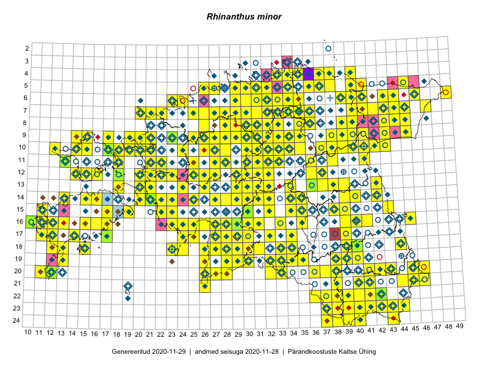

Rhinanthus minor — väike robirohi
Orobanchaceae :: Rhinanthus minor L. (1285); Rhinanthus minor subsp. stenophyllus (Schur) O.Schwarz (36); Rhinanthus minor subsp. minor Scop. (19); Alectorolophus minor (L.) Wimm. & Grab. (16)

Kaart põhineb 1969 kirjel:
vaatlusi 1021
herbaareksemplare 335
PKÜ kirjeid1 552
ELFi kirjeid2 57
LVA kirjeid3 4
Taime kaasaegsed ja ajaloolised leiukohad asuvad 476 ruudus.
Tingmärgid ja leidudega ruutude arvud periooditi uues (u) ja 2005 andmestikus (v)
| █ | vahemik | u4 | v5 |
|---|---|---|---|
| █ | 2006–2020 | 321 | – |
| ◆/◇ | 1971–2005 | 369 | 366 |
| ○ | 1921–1970 | 215 | 50 |
| + | kuni 1920 | 11 | 0 |
| × | hävinud | – | 0 |
| ? | kaheldav | – | 0 |
| Ruut | Leidja(d) | Leiuaeg | Kirje |
|---|---|---|---|
| 16-17 | Toomas Kukk | 2020-09-11 | punkt: Rhinanthus minor L. |
| 08-32 | Toomas Kukk | 2020-09-02 | PKÜ: 20907 |
| 08-32 | Peedu Saar | 2020-09-02 | PKÜ: 20908 |
| 16-22 | Toomas Kukk | 2020-08-31 | PKÜ: 20712 |
| 14-22 | Toomas Kukk | 2020-08-30 | PKÜ: 20610 |
| 04-37 | Toomas Kukk | 2020-08-26 | PKÜ: 21004 |
| 04-37 | Toomas Kukk | 2020-08-26 | PKÜ: 21005 |
| 11-31 | Ott Luuk | 2020-08-24 | ruut/ala: Rhinanthus minor L. |
| 07-43 | Toomas Kukk, Ott Luuk, Kersti Tambets, Sten Mander, Kristine Fenske | 2020-08-18 | ruut/ala: Rhinanthus minor L. |
| 09-21 | Ott Luuk | 2020-08-07 | ruut/ala: Rhinanthus minor L. |
| 22-40 | Toomas Kukk, Eerik Leibak | 2020-08-06 | ruut/ala: Rhinanthus minor L. |
| 07-44 | Toomas Kukk | 2020-07-29 | PKÜ: 21084 |
| 09-45 | Toomas Kukk | 2020-07-29 | PKÜ: 21086 |
| 08-43 | Toomas Kukk | 2020-07-28 | ruut/ala: Rhinanthus minor L. |
| 19-39 | Meeli Mesipuu | 2020-07-21 | PKÜ: 20202 |
| 19-39 | Meeli Mesipuu | 2020-07-21 | PKÜ: 20203 |
| 20-45 | Toomas Kukk, Eerik Leibak | 2020-07-07 | ruut/ala: Rhinanthus minor L. |
| 17-11 | Rein Kalamees, Ott Luuk | 2020-07-03 | PKÜ: 20455 |
| 17-11 | Rein Kalamees, Ott Luuk | 2020-07-03 | PKÜ: 20457 |
| 17-11 | Rein Kalamees, Ott Luuk | 2020-07-03 | PKÜ: 20456 |
| 19-12 | Toomas Kukk | 2020-07-02 | PKÜ: 20529 |
| 19-12 | Toomas Kukk | 2020-07-02 | PKÜ: 20527 |
| 19-12 | Peedu Saar | 2020-07-02 | PKÜ: 20554 |
| 19-12 | Peedu Saar | 2020-07-02 | PKÜ: 20556 |
| 17-11 | Ott Luuk, Rein Kalamees | 2020-07-02 | PKÜ: 21180 |
| 17-11 | Meeli Mesipuu | 2020-07-01 | PKÜ: 21053 |
| 12-22 | Trinus Haitjema | 2020-06-27 | punkt: Rhinanthus minor L. |
| 21-38 | Tiina Ploom | 2020-06-25 | punkt: Rhinanthus minor L. |
| 11-22 | Meeli Mesipuu, Ott Luuk | 2020-06-17 | PKÜ: 21119 |
| 09-21 | Ott Luuk, Peedu Saar | 2020-06-16 | PKÜ: 20441 |
| 09-21 | Ott Luuk, Peedu Saar | 2020-06-16 | PKÜ: 20442 |
| 11-32 | Ott Luuk, Peedu Saar | 2020-06-15 | PKÜ: 20415 |
| 11-32 | Ott Luuk | 2020-06-15 | punkt: Rhinanthus minor L. |
| 05-34 | Rein Kalamees, Ott Luuk | 2020-06-10 | PKÜ: 20643 |
| 07-36 | Toomas Kukk, Meeli Mesipuu | 2020-06-08 | ruut/ala: Rhinanthus minor L. |
| 19-35 | Magda Kõljalg, Linda-Liisa Veromann-Jürgenson, Martin Jürgenson, Valev Vahter | 2020-06-06 | punkt: Rhinanthus minor L. |
| 08-44 | Thea Kull, Toomas Kukk | 2019-09-12 | ruut/ala: Rhinanthus minor L. |
| 06-46 | Toomas Kukk, Thea Kull | 2019-09-11 | ruut/ala: Rhinanthus minor L. |
| 10-39 | Toomas Kukk, Thea Kull | 2019-09-10 | ruut/ala: Rhinanthus minor L. |
| 10-40 | Toomas Kukk, Thea Kull | 2019-09-10 | ruut/ala: Rhinanthus minor L. |
| 13-26 | Toomas Kukk, Peedu Saar | 2019-08-30 | ruut/ala: Rhinanthus minor L. |
| 16-31 | Toomas Kukk, Peedu Saar, Martin Tikk | 2019-08-28 | ruut/ala: Rhinanthus minor L. |
| 13-29 | Mari Reitalu, Thea Kull | 2019-08-28 | ruut/ala: Rhinanthus minor L. |
| 15-35 | Meeli Mesipuu, Timo Luhamäe | 2019-08-27 | ruut/ala: Rhinanthus minor L. |
| 09-40 | Rein Kalamees, Toomas Kukk | 2019-08-09 | ruut/ala: Rhinanthus minor L. |
| 08-39 | Rein Kalamees, Toomas Kukk | 2019-08-08 | ruut/ala: Rhinanthus minor L. |
| 09-39 | Rein Kalamees, Toomas Kukk | 2019-08-08 | ruut/ala: Rhinanthus minor L. |
| 10-35 | Peedu Saar, Timo Luhamäe | 2019-08-08 | ruut/ala: Rhinanthus minor L. |
| 07-32 | Ott Luuk, Jaak-Albert Metsoja | 2019-08-08 | ruut/ala: Rhinanthus minor L. |
| 07-33 | Ott Luuk, Jaak-Albert Metsoja | 2019-08-08 | ruut/ala: Rhinanthus minor L. |
| 07-35 | Toomas Kukk, Rein Kalamees, Kaur Maran | 2019-08-07 | ruut/ala: Rhinanthus minor L. |
| 07-34 | Toomas Kukk, Rein Kalamees, Kaur Maran | 2019-08-07 | ruut/ala: Rhinanthus minor L. |
| 06-32 | Toomas Kukk, Rein Kalamees | 2019-08-05 | ruut/ala: Rhinanthus minor L. |
| 08-36 | Ott Luuk, Jaak-Albert Metsoja | 2019-08-05 | ruut/ala: Rhinanthus minor L. |
| 17-14 | Sirje Azarov | 2019-08-03 | ELF: 20 |
| 22-39 | Toomas Kukk, Peedu Saar | 2019-08-01 | ruut/ala: Rhinanthus minor L. |
| 13-36 | Raivo Kalle | 2019-07-31 | TAA0148223: Rhinanthus minor L. |
| 10-33 | Ott Luuk | 2019-07-31 | ruut/ala: Rhinanthus minor L. |
| 10-32 | Ott Luuk | 2019-07-31 | ruut/ala: Rhinanthus minor L. |
| 18-39 | Thea Kull | 2019-07-25 | ruut/ala: Rhinanthus minor L. |
| 07-21 | Peedu Saar | 2019-07-24 | ruut/ala: Rhinanthus minor L. |
| 07-22 | Peedu Saar | 2019-07-24 | ruut/ala: Rhinanthus minor L. |
| 11-30 | Ott Luuk, Toivo Sepp | 2019-07-23 | ruut/ala: Rhinanthus minor L. |
| 16-40 | Meeli Mesipuu | 2019-07-17 | ruut/ala: Rhinanthus minor L. |
| 24-39 | Peedu Saar, Timo Luhamäe | 2019-07-12 | ruut/ala: Rhinanthus minor L. |
| 22-41 | Toomas Kukk, Indrek Tammekänd | 2019-07-11 | ruut/ala: Rhinanthus minor L. |
| 22-42 | Toomas Kukk, Indrek Tammekänd | 2019-07-11 | TAA0148898: Rhinanthus minor L. |
| 19-38 | Thea Kull | 2019-07-11 | ruut/ala: Rhinanthus minor L. |
| 23-39 | Peedu Saar, Timo Luhamäe | 2019-07-11 | ruut/ala: Rhinanthus minor L. |
| 23-37 | Peedu Saar, Timo Luhamäe | 2019-07-11 | ruut/ala: Rhinanthus minor L. |
| 23-44 | Ott Luuk, Tiit Hallikma | 2019-07-11 | ruut/ala: Rhinanthus minor L. |
| 23-43 | Ott Luuk, Tiit Hallikma | 2019-07-11 | ruut/ala: Rhinanthus minor L. |
| 21-40 | Toomas Kukk, Indrek Tammekänd | 2019-07-10 | ruut/ala: Rhinanthus minor L. |
| 19-39 | Thea Kull | 2019-07-10 | ruut/ala: Rhinanthus minor L. |
| 22-38 | Peedu Saar, Timo Luhamäe | 2019-07-10 | ruut/ala: Rhinanthus minor L. |
| 22-39 | Peedu Saar, Timo Luhamäe | 2019-07-10 | ruut/ala: Rhinanthus minor L. |
| 20-46 | Ott Luuk, Tiit Hallikma | 2019-07-10 | ruut/ala: Rhinanthus minor L. |
| 20-36 | Peedu Saar, Timo Luhamäe | 2019-07-09 | ruut/ala: Rhinanthus minor L. |
| 06-39 | Ott Luuk, Peedu Saar | 2019-07-05 | punkt: Rhinanthus minor L. |
| 04-40 | Ott Luuk, Peedu Saar | 2019-07-05 | ruut/ala: Rhinanthus minor L. |
| 05-27 | Meeli Mesipuu | 2019-06-26 | ruut/ala: Rhinanthus minor L. |
| 13-21 | Ott Luuk, Toomas Kukk, Thea Kull | 2019-06-25 | ruut/ala: Rhinanthus minor L. |
| 17-30 | Indrek Tammekänd | 2019-06-10 | ruut/ala: Rhinanthus minor L. |
| 16-28 | Indrek Tammekänd | 2019-05-29–2019-08-23 | ruut/ala: Rhinanthus minor L. |
| 05-41 | Peedu Saar, Toomas Kukk | 2018-09-03 | ruut/ala: Rhinanthus minor L. |
| 10-31 | Ott Luuk | 2018-08-28 | ruut/ala: Rhinanthus minor L. |
| 11-28 | Ott Luuk, Toivo Sepp | 2018-08-24–2018-08-30 | ruut/ala: Rhinanthus minor L. |
| 14-31 | Toomas Kukk | 2018-08-18 | ruut/ala: Rhinanthus minor L. |
| 14-32 | Toomas Kukk | 2018-08-18 | ruut/ala: Rhinanthus minor L. |
| 10-27 | Peedu Saar, Toomas Kukk, Ott Luuk, Kersti Tambets, Sten Mander | 2018-08-16 | ruut/ala: Rhinanthus minor L. |
| 19-28 | Peedu Saar, Polina Degtjarenko | 2018-08-14 | ruut/ala: Rhinanthus minor L. |
| 18-30 | Toomas Kukk, Tiit Hallikma | 2018-08-10 | ruut/ala: Rhinanthus minor L. |
| 05-31 | Peedu Saar, Toomas Kukk | 2018-08-07 | ruut/ala: Rhinanthus minor L. |
| 14-40 | Peedu Saar | 2018-07-20 | ruut/ala: Rhinanthus minor L. |
| 23-42 | Toomas Kukk, Eerik Leibak | 2018-07-18 | ruut/ala: Rhinanthus minor L. |
| 08-45 | Peedu Saar | 2018-07-17–2018-07-18 | ruut/ala: Rhinanthus minor L. |
| 09-43 | Toomas Kukk | 2018-07-17 | ruut/ala: Rhinanthus minor L. |
| 10-18 | Toomas Kukk, Meeli Mesipuu | 2018-07-11 | ruut/ala: Rhinanthus minor L. |
| 10-17 | Toomas Kukk | 2018-07-10 | TAA0146592: Rhinanthus minor L. |
| 07-35 | Thea Kull, Katrin Kaldma | 2018-07-07 | ELF: 10544 |
| 21-45 | Toomas Kukk, Eerik Leibak | 2018-07-06 | ruut/ala: Rhinanthus minor L. |
| 06-23 | Peedu Saar | 2018-07-04 | ruut/ala: Rhinanthus minor L. |
| 15-19 | Peedu Saar, Ott Luuk, Toomas Kukk, Ilmar Uibopuu | 2018-06-28 | ruut/ala: Rhinanthus minor L. |
| 11-25 | Ott Luuk, Toomas Kukk, Peedu Saar, Ilmar Uibopuu | 2018-06-25 | ruut/ala: Rhinanthus minor L. |
| 12-16 | Liis Soonik | 2018-06-16 | punkt: Rhinanthus minor L. |
| 19-26 | Iris Reinula | 2018-06-15 | punkt: Rhinanthus minor L. |
| 15-19 | Mari Reitalu, Sirje Azarov, Maris Sepp | 2018-05-23 | ruut/ala: Rhinanthus minor L. |
| 12-15 | Toomas Kukk, Indrek Tammekänd | 2017-09-13 | ruut/ala: Rhinanthus minor L. |
| 12-14 | Toomas Kukk, Indrek Tammekänd | 2017-09-13 | ruut/ala: Rhinanthus minor L. |
| 10-12 | Toomas Kukk, Indrek Tammekänd | 2017-09-12 | ruut/ala: Rhinanthus minor L. |
| 11-13 | Toomas Kukk, Indrek Tammekänd | 2017-09-12 | TAA0141918: Rhinanthus minor L. |
| 10-18 | Ott Luuk, Peedu Saar | 2017-09-12 | ruut/ala: Rhinanthus minor L. |
| 12-18 | Toomas Kukk, Peeter Pärn | 2017-09-09–2017-09-10 | ruut/ala: Rhinanthus minor L. |
| 08-29 | Peedu Saar, Toomas Kukk | 2017-09-08 | ruut/ala: Rhinanthus minor L. |
| 19-29 | Toomas Kukk, Ott Luuk, Kersti Tambets, Timo Luhamäe, Sten Mander | 2017-08-29 | ruut/ala: Rhinanthus minor L. |
| 15-38 | Indrek Tammekänd | 2017-08-17 | ruut/ala: Rhinanthus minor L. |
| 14-35 | Peedu Saar | 2017-08-15–2017-09-16 | ruut/ala: Rhinanthus minor L. |
| 14-28 | Ott Luuk, Indrek Tammekänd | 2017-08-11 | ruut/ala: Rhinanthus minor L. |
| 14-27 | Ott Luuk, Indrek Tammekänd | 2017-08-11 | ruut/ala: Rhinanthus minor L. |
| 09-29 | Toomas Kukk, Ilmar Uibopuu, Kadri Kuusksalu | 2017-08-09 | ruut/ala: Rhinanthus minor L. |
| 08-30 | Thea Kull, Ott Luuk | 2017-08-09 | ruut/ala: Rhinanthus minor L. |
| 12-25 | Peedu Saar, Timo Luhamäe | 2017-08-09 | ruut/ala: Rhinanthus minor L. |
| 12-29 | Meeli Mesipuu, Indrek Tammekänd | 2017-08-09 | ruut/ala: Rhinanthus minor L. |
| 12-30 | Meeli Mesipuu, Indrek Tammekänd | 2017-08-09 | ruut/ala: Rhinanthus minor L. |
| 12-26 | Mari Reitalu, Eerik Leibak | 2017-08-09 | ruut/ala: Rhinanthus minor L. |
| 09-28 | Ilmar Uibopuu, Kadri Kuusksalu, Toomas Kukk, Ott Luuk | 2017-08-09 | ruut/ala: Rhinanthus minor L. |
| 08-26 | Toomas Kukk, Ilmar Uibopuu, Kadri Kuusksalu | 2017-08-08 | ruut/ala: Rhinanthus minor L. |
| 07-26 | Toomas Kukk, Ilmar Uibopuu, Kadri Kuusksalu | 2017-08-08 | ruut/ala: Rhinanthus minor L. |
| 10-28 | Thea Kull, Ott Luuk | 2017-08-08 | ruut/ala: Rhinanthus minor L. |
| 07-28 | Peedu Saar, Timo Luhamäe | 2017-08-08 | ruut/ala: Rhinanthus minor L. |
| 07-27 | Peedu Saar, Timo Luhamäe | 2017-08-08 | ruut/ala: Rhinanthus minor L. |
| 11-28 | Ott Luuk, Thea Kull | 2017-08-08 | ruut/ala: Rhinanthus minor L. |
| 08-28 | Mari Reitalu, Eerik Leibak | 2017-08-08 | ruut/ala: Rhinanthus minor L. |
| 05-30 | Rein Kalamees | 2017-08-07 | ruut/ala: Rhinanthus minor L. |
| 13-34 | Peedu Saar, Timo Luhamäe | 2017-08-07 | ruut/ala: Rhinanthus minor L. |
| 12-32 | Ott Luuk, Thea Kull | 2017-08-07 | ruut/ala: Rhinanthus minor L. |
| 14-20 | Meeli Mesipuu | 2017-08-07 | ruut/ala: Rhinanthus minor L. |
| 07-22 | Toomas Kukk, Ilmar Uibopuu | 2017-07-29 | ruut/ala: Rhinanthus minor L. |
| 22-36 | Ott Luuk, Peedu Saar | 2017-07-28 | ruut/ala: Rhinanthus minor L. |
| 23-39 | Peedu Saar, Ott Luuk | 2017-07-27 | ruut/ala: Rhinanthus minor L. |
| 22-39 | Ott Luuk, Peedu Saar | 2017-07-27 | ruut/ala: Rhinanthus minor L. |
| 06-24 | Ilmar Uibopuu, Kadri Kuusksalu | 2017-07-27 | ruut/ala: Rhinanthus minor L. |
| 06-23 | Toomas Kukk, Ilmar Uibopuu, Kadri Kuusksalu | 2017-07-26 | ruut/ala: Rhinanthus minor L. |
| 19-38 | Peedu Saar, Ott Luuk | 2017-07-25 | ruut/ala: Rhinanthus minor L. |
| 20-38 | Ott Luuk, Peedu Saar | 2017-07-25 | ruut/ala: Rhinanthus minor L. |
| 05-31 | Rein Kalamees | 2017-07-24 | ruut/ala: Rhinanthus minor L. |
| 16-40 | Meeli Mesipuu | 2017-07-22–2017-07-30 | ruut/ala: Rhinanthus minor L. |
| 06-49 | Toomas Kukk | 2017-07-21 | ruut/ala: Rhinanthus minor L. |
| 06-31 | Peedu Saar, Ott Luuk | 2017-07-21 | ruut/ala: Rhinanthus minor L. |
| 07-33 | Peedu Saar, Ott Luuk | 2017-07-21 | punkt: Rhinanthus minor L. |
| 23-39 | Triin Reitalu, Ansis Blaus | 2017-07-19 | punkt: Rhinanthus minor L. |
| 23-39 | Triin Reitalu, Ansis Blaus | 2017-07-19 | punkt: Rhinanthus minor L. |
| 06-34 | Peedu Saar, Ott Luuk | 2017-07-19 | ruut/ala: Rhinanthus minor L. |
| 06-35 | Ott Luuk, Peedu Saar | 2017-07-19 | ruut/ala: Rhinanthus minor L. |
| 08-40 | Peedu Saar, Ott Luuk | 2017-07-18 | ruut/ala: Rhinanthus minor L. |
| 13-36 | Raivo Kalle | 2017-07-15 | TAA0145488: Rhinanthus minor L. |
| 16-40 | Peedu Saar | 2017-07-10–2017-07-11 | ruut/ala: Rhinanthus minor L. |
| 18-29 | Indrek Tammekänd | 2017-07-05 | ruut/ala: Rhinanthus minor L. |
| 15-19 | Heete Ausmeel, Triin Edovald, Evelin Laanest, Ilmar Uibopuu, Marko Vainu | 2017-07-05 | LVA: -1984160968 |
| 16-41 | Peedu Saar, Ott Luuk | 2017-07-03–2017-07-04 | ruut/ala: Rhinanthus minor L. |
| 10-15 | Ott Luuk, Toomas Kukk, Peedu Saar, Sander Laherand | 2017-06-30–2017-07-01 | ruut/ala: Rhinanthus minor L. |
| 12-15 | Ott Luuk, Toomas Kukk, Peedu Saar, Sander Laherand | 2017-06-30 | ruut/ala: Rhinanthus minor L. |
| 17-38 | Avo Veermäe | 2017-06-24 | LVA: -658114942 |
| 16-35 | Ott Luuk, Thea Kull | 2017-06-22 | ruut/ala: Rhinanthus minor L. |
| 18-39 | Avo Veermäe | 2017-06-19 | LVA: -2111451476 |
| 11-18 | Toomas Kukk, Peeter Pärn | 2017-06-15 | ruut/ala: Rhinanthus minor L. |
| 12-18 | Toomas Kukk | 2017-06-15 | ruut/ala: Rhinanthus minor L. |
| 12-18 | Toomas Kukk | 2017-06-15 | TAA0144546: Rhinanthus minor L. |
| 12-18 | Toomas Kukk | 2017-06-15 | TAA0144547: Rhinanthus minor L. |
| 12-18 | Peedu Saar, Ilmar Uibopuu | 2017-06-15 | TAA0141389: Rhinanthus minor L. |
| 12-18 | Ilmar Uibopuu, Peedu Saar | 2017-06-15 | ruut/ala: Rhinanthus minor L. |
| 15-11 | Meeli Mesipuu, Toomas Kukk, Mari Reitalu | 2016-10-07 | ruut/ala: Rhinanthus minor L. |
| 14-13 | Toomas Kukk, Meeli Mesipuu, Mari Reitalu | 2016-10-06 | ruut/ala: Rhinanthus minor L. |
| 08-33 | Peedu Saar, Toomas Kukk | 2016-09-15 | ruut/ala: Rhinanthus minor L. |
| 06-33 | Peedu Saar, Toomas Kukk | 2016-09-14 | ruut/ala: Rhinanthus minor L. |
| 07-33 | Peedu Saar, Toomas Kukk | 2016-09-13 | ruut/ala: Rhinanthus minor L. |
| 07-30 | Toomas Kukk, Peedu Saar | 2016-09-09 | ruut/ala: Rhinanthus minor L. |
| 06-32 | Toomas Kukk, Peedu Saar | 2016-09-08 | ruut/ala: Rhinanthus minor L. |
| 06-31 | Peedu Saar, Toomas Kukk | 2016-09-08 | ruut/ala: Rhinanthus minor L. |
| 05-32 | Toomas Kukk, Sander Laherand | 2016-08-31 | ruut/ala: Rhinanthus minor L. |
| 06-30 | Toomas Kukk, Sander Laherand | 2016-08-30 | ruut/ala: Rhinanthus minor L. |
| 06-29 | Sander Laherand, Toomas Kukk | 2016-08-29 | ruut/ala: Rhinanthus minor L. |
| 14-20 | Mari Reitalu, Sirje Azarov | 2016-08-17 | ruut/ala: Rhinanthus minor L. |
| 15-17 | Peedu Saar, Toomas Kukk | 2016-08-13 | ruut/ala: Rhinanthus minor L. |
| 17-17 | Toomas Kukk, Meeli Mesipuu | 2016-08-12 | ruut/ala: Rhinanthus minor L. |
| 08-36 | Ott Luuk, Kersti Tambets, Janika Sammasto, Ülle Jõgar, Sten Mander | 2016-08-11 | ruut/ala: Rhinanthus minor L. |
| 10-14 | Sander Laherand, Toomas Kukk, Nele Jõessar | 2016-08-09 | ruut/ala: Rhinanthus minor L. |
| 10-38 | Ott Luuk, Eerik Leibak | 2016-08-08 | ruut/ala: Rhinanthus minor L. |
| 09-38 | Ott Luuk, Eerik Leibak | 2016-08-08 | ruut/ala: Rhinanthus minor L. |
| 09-41 | Ott Luuk, Eerik Leibak | 2016-08-05 | ruut/ala: Rhinanthus minor L. |
| 10-41 | Ott Luuk, Eerik Leibak | 2016-08-04 | ruut/ala: Rhinanthus minor L. |
| 10-42 | Ott Luuk, Eerik Leibak | 2016-08-04 | ruut/ala: Rhinanthus minor L. |
| 10-39 | Ott Luuk, Eerik Leibak | 2016-08-03 | ruut/ala: Rhinanthus minor L. |
| 10-40 | Ott Luuk, Eerik Leibak | 2016-08-03 | ruut/ala: Rhinanthus minor L. |
| 18-13 | Mari Reitalu, Sirje Azarov | 2016-07-31 | ruut/ala: Rhinanthus minor L. |
| 07-40 | Toomas Kukk, Tiit Hallikma | 2016-07-29 | ruut/ala: Rhinanthus minor L. |
| 05-30 | Sander Laherand, Eerik Leibak | 2016-07-29 | ruut/ala: Rhinanthus minor L. |
| 09-43 | Hannes Pehlak, Ott Luuk | 2016-07-29 | ruut/ala: Rhinanthus minor L. |
| 04-40 | Tiit Hallikma, Ott Luuk | 2016-07-28 | ruut/ala: Rhinanthus minor L. |
| 06-40 | Sander Laherand, Peedu Saar | 2016-07-28 | ruut/ala: Rhinanthus minor L. |
| 05-40 | Peedu Saar, Sander Laherand | 2016-07-28 | ruut/ala: Rhinanthus minor L. |
| 05-38 | Hannes Pehlak, Toomas Kukk, Susanna Vain | 2016-07-28 | ruut/ala: Rhinanthus minor L. |
| 05-36 | Tõnu Ploompuu, Eerik Leibak | 2016-07-27 | ruut/ala: Rhinanthus minor L. |
| 05-37 | Tõnu Ploompuu, Eerik Leibak | 2016-07-27 | ruut/ala: Rhinanthus minor L. |
| 07-35 | Toomas Kukk, Sander Laherand, Nele Jõessar | 2016-07-27 | ruut/ala: Rhinanthus minor L. |
| 08-36 | Thea Kull, Timo Luhamäe | 2016-07-27 | ruut/ala: Rhinanthus minor L. |
| 05-34 | Ott Luuk, Hannes Pehlak | 2016-07-27 | ruut/ala: Rhinanthus minor L. |
| 18-23 | Karin Kaljund, Kaire Lanno, Indrek Melts | 2016-07-27 | ruut/ala: Rhinanthus minor L. |
| 04-38 | Thea Kull, Susanna Vain, Eerik Leibak | 2016-07-26 | ruut/ala: Rhinanthus minor L. |
| 04-37 | Thea Kull, Eerik Leibak, Susanna Vain | 2016-07-26 | ruut/ala: Rhinanthus minor L. |
| 04-35 | Sander Laherand, Ott Luuk, Nele Jõessar | 2016-07-26 | ruut/ala: Rhinanthus minor L. |
| 18-24 | Karin Kaljund, Kaire Lanno, Indrek Melts | 2016-07-26 | ruut/ala: Rhinanthus minor L. |
| 04-34 | Hannes Pehlak, Toomas Kukk | 2016-07-26 | ruut/ala: Rhinanthus minor L. |
| 10-35 | Toomas Kukk, Tiit Hallikma | 2016-07-25 | ruut/ala: Rhinanthus minor L. |
| 06-39 | Thea Kull, Hannes Pehlak | 2016-07-25 | ruut/ala: Rhinanthus minor L. |
| 10-37 | Peedu Saar, Liina Oja, Susanna Vain | 2016-07-25 | ruut/ala: Rhinanthus minor L. |
| 09-34 | Ott Luuk, Eerik Leibak | 2016-07-25 | ruut/ala: Rhinanthus minor L. |
| 09-33 | Ott Luuk, Eerik Leibak | 2016-07-25 | ruut/ala: Rhinanthus minor L. |
| 10-30 | Erkki Otsman, Sergei Smirnov | 2016-07-25 | ruut/ala: Rhinanthus minor L. |
| 13-38 | Eeva-Maria Jeletsky, Tarmo Niitla | 2016-07-23 | ruut/ala: Rhinanthus minor L. |
| 11-33 | Tõnu Ploompuu, Marko Veinbergs, Eerik Leibak | 2016-07-22 | ruut/ala: Rhinanthus minor L. |
| 12-36 | Toomas Kukk, Raivo Kalle | 2016-07-22 | ruut/ala: Rhinanthus minor L. |
| 10-31 | Toivo Sepp, Peedu Saar | 2016-07-22 | ruut/ala: Rhinanthus minor L. |
| 14-34 | Thea Kull, Tiit Hallikma | 2016-07-22 | ruut/ala: Rhinanthus minor L. |
| 13-29 | Sirje Azarov, Oliver Parrest | 2016-07-22 | ruut/ala: Rhinanthus minor L. |
| 14-29 | Sirje Azarov, Oliver Parrest | 2016-07-22 | ruut/ala: Rhinanthus minor L. |
| 11-31 | Peedu Saar, Toivo Sepp | 2016-07-22 | ruut/ala: Rhinanthus minor L. |
| 13-34 | Meeli Mesipuu, Timo Luhamäe | 2016-07-22 | ruut/ala: Rhinanthus minor L. |
| 14-35 | Liina Oja, Elle Rajandu, Susanna Vain | 2016-07-22 | ruut/ala: Rhinanthus minor L. |
| 16-33 | Jaak-Albert Metsoja, Mari Metsoja | 2016-07-22 | ruut/ala: Rhinanthus minor L. |
| 07-31 | Erkki Otsman, Sergei Smirnov | 2016-07-22 | ruut/ala: Rhinanthus minor L. |
| 12-37 | Eeva-Maria Jeletsky, Tarmo Niitla | 2016-07-22 | ruut/ala: Rhinanthus minor L. |
| 13-37 | Eeva-Maria Jeletsky, Tarmo Niitla | 2016-07-22 | ruut/ala: Rhinanthus minor L. |
| 12-31 | Aat Sarv, Indrek Tammekänd | 2016-07-22 | ruut/ala: Rhinanthus minor L. |
| 12-30 | Aat Sarv, Indrek Tammekänd | 2016-07-22 | ruut/ala: Rhinanthus minor L. |
| 13-30 | Tõnu Ploompuu, Hannes Pehlak, Marko Veinbergs | 2016-07-21 | ruut/ala: Rhinanthus minor L. |
| 15-32 | Toomas Kukk, Liina Oja | 2016-07-21 | ruut/ala: Rhinanthus minor L. |
| 13-32 | Thea Kull, Raivo Kalle, Susanna Vain | 2016-07-21 | ruut/ala: Rhinanthus minor L. |
| 13-31 | Oliver Parrest, Toivo Sepp | 2016-07-21 | ruut/ala: Rhinanthus minor L. |
| 10-34 | Mari Metsoja, Eerik Leibak | 2016-07-21 | ruut/ala: Rhinanthus minor L. |
| 14-30 | Hannes Pehlak, Tõnu Ploompuu, Marko Veinbergs | 2016-07-21 | ruut/ala: Rhinanthus minor L. |
| 07-27 | Erkki Otsman, Sergei Smirnov | 2016-07-21 | ruut/ala: Rhinanthus minor L. |
| 14-42 | Eeva-Maria Jeletsky, Tarmo Niitla | 2016-07-21 | ruut/ala: Rhinanthus minor L. |
| 11-32 | Aat Sarv, Jaak-Albert Metsoja | 2016-07-21 | ruut/ala: Rhinanthus minor L. |
| 10-32 | Aat Sarv, Jaak-Albert Metsoja | 2016-07-21 | ruut/ala: Rhinanthus minor L. |
| 17-32 | Toomas Kukk, Eerik Leibak | 2016-07-20 | ruut/ala: Rhinanthus minor L. |
| 16-29 | Thea Kull, Hannes Pehlak | 2016-07-20 | ruut/ala: Rhinanthus minor L. |
| 16-28 | Ott Luuk, Liina Oja | 2016-07-20 | ruut/ala: Rhinanthus minor L. |
| 15-38 | Kaire Lanno, Karin Kaljund | 2016-07-20 | ruut/ala: Rhinanthus minor L. |
| 16-30 | Hannes Pehlak, Thea Kull | 2016-07-20 | ruut/ala: Rhinanthus minor L. |
| 16-31 | Elle Rajandu, Indrek Tammekänd | 2016-07-20 | ruut/ala: Rhinanthus minor L. |
| 17-29 | Aat Sarv, Raivo Kalle | 2016-07-20 | ruut/ala: Rhinanthus minor L. |
| 18-31 | Toomas Kukk, Hannes Pehlak | 2016-07-19 | ruut/ala: Rhinanthus minor L. |
| 19-35 | Sirje Azarov, Peedu Saar | 2016-07-19 | ruut/ala: Rhinanthus minor L. |
| 19-34 | Peedu Saar, Sirje Azarov | 2016-07-19 | ruut/ala: Rhinanthus minor L. |
| 18-30 | Ott Luuk, Raivo Kalle, Susanna Vain | 2016-07-19 | ruut/ala: Rhinanthus minor L. |
| 19-30 | Ott Luuk, Raivo Kalle, Susanna Vain | 2016-07-19 | ruut/ala: Rhinanthus minor L. |
| 17-27 | Oliver Parrest, Elle Rajandu | 2016-07-19 | ruut/ala: Rhinanthus minor L. |
| 18-27 | Oliver Parrest, Elle Rajandu | 2016-07-19 | ruut/ala: Rhinanthus minor L. |
| 15-39 | Kaire Lanno, Karin Kaljund | 2016-07-19 | ruut/ala: Rhinanthus minor L. |
| 20-28 | Aat Sarv, Eerik Leibak | 2016-07-19 | ruut/ala: Rhinanthus minor L. |
| 11-30 | Erkki Otsman, Sergei Smirnov | 2016-07-18–2016-07-25 | ruut/ala: Rhinanthus minor L. |
| 08-31 | Toivo Sepp, Peedu Saar | 2016-07-18 | ruut/ala: Rhinanthus minor L. |
| 21-26 | Sirje Azarov, Indrek Tammekänd | 2016-07-18 | ruut/ala: Rhinanthus minor L. |
| 19-26 | Ott Luuk, Hannes Pehlak | 2016-07-18 | ruut/ala: Rhinanthus minor L. |
| 19-33 | Liina Oja, Elle Rajandu | 2016-07-18 | ruut/ala: Rhinanthus minor L. |
| 20-33 | Liina Oja, Elle Rajandu | 2016-07-18 | ruut/ala: Rhinanthus minor L. |
| 20-32 | Jaak-Albert Metsoja, Mari Metsoja, Lena Neuenkamp | 2016-07-18 | ruut/ala: Rhinanthus minor L. |
| 19-32 | Jaak-Albert Metsoja, Mari Metsoja, Lena Neuenkamp | 2016-07-18 | ruut/ala: Rhinanthus minor L. |
| 08-28 | Erkki Otsman, Sergei Smirnov | 2016-07-17 | ruut/ala: Rhinanthus minor L. |
| 04-35 | Tõnu Ploompuu | 2016-07-16 | ruut/ala: Rhinanthus minor L. |
| 17-27 | Indrek Tammekänd | 2016-07-12 | ruut/ala: Rhinanthus minor L. |
| 11-27 | Ranno Puumets | 2016-07-09 | ruut/ala: Rhinanthus minor L. |
| 07-29 | Rein Kalamees, Sander Laherand | 2016-07-08 | ruut/ala: Rhinanthus minor L. |
| 12-21 | Rein Kalamees, Liina Oja | 2016-07-08 | ruut/ala: Rhinanthus minor L. |
| 12-20 | Rein Kalamees, Liina Oja | 2016-07-08 | ruut/ala: Rhinanthus minor L. |
| 13-26 | Maret Gerz, Liina Oja | 2016-07-08 | ruut/ala: Rhinanthus minor L. |
| 09-19 | Rein Kalamees, Liina Oja | 2016-07-07 | ruut/ala: Rhinanthus minor L. |
| 10-19 | Rein Kalamees, Liina Oja | 2016-07-07 | ruut/ala: Rhinanthus minor L. |
| 17-25 | Tiit Hallikma, Tõnu Ploompuu | 2016-07-06 | ruut/ala: Rhinanthus minor L. |
| 09-25 | Thea Kull, Oliver Parrest | 2016-07-06 | ruut/ala: Rhinanthus minor L. |
| 09-26 | Thea Kull, Oliver Parrest | 2016-07-06 | ruut/ala: Rhinanthus minor L. |
| 09-30 | Sander Laherand, Toomas Kukk | 2016-07-06 | ruut/ala: Rhinanthus minor L. |
| 09-27 | Rein Kalamees, Liina Oja | 2016-07-06 | ruut/ala: Rhinanthus minor L. |
| 10-26 | Meeli Mesipuu, Sirje Azarov | 2016-07-06 | ruut/ala: Rhinanthus minor L. |
| 14-23 | Thea Kull, Eerik Leibak | 2016-07-05 | ruut/ala: Rhinanthus minor L. |
| 17-28 | Indrek Tammekänd | 2016-07-05 | ruut/ala: Rhinanthus minor L. |
| 19-28 | Indrek Tammekänd | 2016-07-05 | ruut/ala: Rhinanthus minor L. |
| 18-28 | Indrek Tammekänd | 2016-07-05 | ruut/ala: Rhinanthus minor L. |
| 05-26 | Tiina Elvisto, Eerik Leibak | 2016-07-04 | ruut/ala: Rhinanthus minor L. |
| 16-25 | Thea Kull, Helle Mäemets | 2016-07-04 | ruut/ala: Rhinanthus minor L. |
| 07-30 | Rein Kalamees, Liina Oja | 2016-07-04 | ruut/ala: Rhinanthus minor L. |
| 16-23 | Peedu Saar, Timo Luhamäe, Johannes Kõdar | 2016-07-04 | ruut/ala: Rhinanthus minor L. |
| 14-22 | Mari Reitalu, Oliver Parrest | 2016-07-04 | ruut/ala: Rhinanthus minor L. |
| 08-32 | Rein Kalamees, Kersti Püssa | 2016-07-01 | ruut/ala: Rhinanthus minor L. |
| 07-20 | Jaak-Albert Metsoja, Mari Metsoja | 2016-07-01 | ruut/ala: Rhinanthus minor L. |
| 10-43 | Rein Kalamees, Kersti Püssa | 2016-06-29 | ruut/ala: Rhinanthus minor L. |
| 15-23 | Indrek Tammekänd | 2016-06-25 | ruut/ala: Rhinanthus minor L. |
| 21-44 | Toomas Kukk | 2016-06-24 | ruut/ala: Rhinanthus minor L. |
| 14-22 | Erkki Otsman, Sergei Smirnov | 2016-06-23 | ruut/ala: Rhinanthus minor L. |
| 15-30 | Meeli Mesipuu | 2016-06-22 | TAA0145167: Rhinanthus minor L. |
| 14-25 | Thea Kull | 2016-06-21 | ruut/ala: Rhinanthus minor L. |
| 20-43 | Meeli Mesipuu, Timo Luhamäe | 2016-06-17 | ruut/ala: Rhinanthus minor L. |
| 22-40 | Toomas Kukk, Tiit Hallikma | 2016-06-16 | ruut/ala: Rhinanthus minor L. |
| 20-42 | Tarmo Niitla, Peedu Saar | 2016-06-16 | ruut/ala: Rhinanthus minor L. |
| 21-41 | Ott Luuk, Sander Laherand | 2016-06-16 | ruut/ala: Rhinanthus minor L. |
| 23-39 | Meeli Mesipuu, Timo Luhamäe | 2016-06-16 | ruut/ala: Rhinanthus minor L. |
| 20-37 | Maret Gerz, Liina Oja | 2016-06-16 | ruut/ala: Rhinanthus minor L. |
| 23-41 | Sander Laherand, Ott Luuk, Susanna Vain | 2016-06-15 | ruut/ala: Rhinanthus minor L. |
| 23-44 | Rein Kalamees, Eerik Leibak | 2016-06-15 | ruut/ala: Rhinanthus minor L. |
| 23-43 | Meeli Mesipuu, Timo Luhamäe | 2016-06-15 | ruut/ala: Rhinanthus minor L. |
| 21-46 | Timo Luhamäe, Meeli Mesipuu | 2016-06-14 | ruut/ala: Rhinanthus minor L. |
| 23-40 | Sander Laherand, Ott Luuk, Susanna Vain | 2016-06-14 | ruut/ala: Rhinanthus minor L. |
| 23-42 | Rein Kalamees, Eerik Leibak | 2016-06-14 | ruut/ala: Rhinanthus minor L. |
| 24-40 | Ott Luuk, Sander Laherand, Susanna Vain | 2016-06-14 | ruut/ala: Rhinanthus minor L. |
| 24-38 | Maret Gerz, Liina Oja | 2016-06-14 | ruut/ala: Rhinanthus minor L. |
| 24-39 | Maret Gerz, Liina Oja | 2016-06-14 | ruut/ala: Rhinanthus minor L. |
| 19-40 | Toomas Kukk, Tiit Hallikma, Johannes Kõdar | 2016-06-13 | ruut/ala: Rhinanthus minor L. |
| 18-40 | Toomas Kukk, Tiit Hallikma, Johannes Kõdar | 2016-06-13 | TAA0138118: Rhinanthus minor L. |
| 18-40 | Toomas Kukk, Tiit Hallikma, Johannes Kõdar | 2016-06-13 | TAA0138119: Rhinanthus minor L. |
| 18-40 | Toomas Kukk, Tiit Hallikma, Johannes Kõdar | 2016-06-13 | TAAdupl0138119: Rhinanthus minor L. |
| 18-26 | Ott Luuk, Peedu Saar | 2016-06-10 | ruut/ala: Rhinanthus minor L. |
| 20-28 | Peedu Saar, Ott Luuk | 2016-06-09 | ruut/ala: Rhinanthus minor L. |
| 19-28 | Ott Luuk, Peedu Saar | 2016-06-09 | ruut/ala: Rhinanthus minor L. |
| 21-26 | Thea Kull, Peedu Saar | 2016-06-07 | ruut/ala: Rhinanthus minor L. |
| 19-26 | Peedu Saar, Thea Kull | 2016-06-07 | ruut/ala: Rhinanthus minor L. |
| 20-26 | Peedu Saar, Thea Kull | 2016-06-06 | ruut/ala: Rhinanthus minor L. |
| 19-29 | Toomas Kukk, Tiit Hallikma | 2016-06-03 | ruut/ala: Rhinanthus minor L. |
| 16-12 | Mari Reitalu, Triin Reitalu | 2016-06-02 | punkt: Rhinanthus minor L. |
| 13-21 | Jaak-Albert Metsoja | 2015-10-27 | PKÜ: 19137 |
| 13-21 | Jaak-Albert Metsoja | 2015-10-27 | PKÜ: 19138 |
| 04-35 | Ott Luuk | 2015-10-21 | PKÜ: 19020 |
| 15-13 | Toomas Kukk, Eerik Leibak | 2015-10-14 | PKÜ: 19197 |
| 06-26 | Jaak-Albert Metsoja | 2015-10-07 | PKÜ: 18948 |
| 07-26 | Toomas Kukk, Rein Kalamees | 2015-09-24 | punkt: Rhinanthus minor L. |
| 07-26 | Toomas Kukk, Rein Kalamees | 2015-09-24 | punkt: Rhinanthus minor L. |
| 04-33 | Rein Kalamees, Kersti Püssa | 2015-09-12 | ruut/ala: Rhinanthus minor L. |
| 12-21 | Tiit Hallikma, Toomas Kukk | 2015-08-28 | PKÜ: 18615 |
| 12-21 | Tiit Hallikma, Toomas Kukk | 2015-08-28 | PKÜ: 18620 |
| 12-21 | Peedu Saar, Ott Luuk | 2015-08-28 | PKÜ: 19763 |
| 12-22 | Toomas Kukk, Tiit Hallikma | 2015-08-27 | PKÜ: 18608 |
| 12-21 | Tiit Hallikma, Toomas Kukk | 2015-08-27 | ruut/ala: Rhinanthus minor L. |
| 12-21 | Tiit Hallikma, Toomas Kukk | 2015-08-27 | PKÜ: 18610 |
| 12-21 | Tiit Hallikma, Toomas Kukk | 2015-08-27 | PKÜ: 18609 |
| 12-22 | Thea Kull, Eerik Leibak | 2015-08-27 | ruut/ala: Rhinanthus minor L. |
| 12-22 | Thea Kull, Eerik Leibak | 2015-08-27 | PKÜ: 19815 |
| 12-22 | Thea Kull, Eerik Leibak | 2015-08-27 | PKÜ: 19817 |
| 12-21 | Peedu Saar, Ott Luuk | 2015-08-27 | PKÜ: 19779 |
| 12-21 | Meeli Mesipuu, Maret Gerz | 2015-08-27 | PKÜ: 18679 |
| 12-21 | Meeli Mesipuu, Maret Gerz | 2015-08-27 | PKÜ: 18682 |
| 12-22 | Toomas Kukk, Tiit Hallikma | 2015-08-26 | PKÜ: 18600 |
| 12-22 | Toomas Kukk, Tiit Hallikma | 2015-08-26 | PKÜ: 18598 |
| 12-23 | Thea Kull, Eerik Leibak | 2015-08-26 | ruut/ala: Rhinanthus minor L. |
| 12-23 | Thea Kull, Eerik Leibak | 2015-08-26 | PKÜ: 19813 |
| 12-23 | Thea Kull, Eerik Leibak | 2015-08-26 | PKÜ: 19804 |
| 12-23 | Thea Kull, Eerik Leibak | 2015-08-26 | PKÜ: 19810 |
| 09-21 | Peedu Saar, Ott Luuk | 2015-08-26 | PKÜ: 19835 |
| 11-22;12-22 | Peedu Saar, Ott Luuk | 2015-08-26 | PKÜ: 20070 |
| 12-21 | Meeli Mesipuu, Maret Gerz | 2015-08-26 | PKÜ: 18678 |
| 12-21 | Tiit Hallikma, Toomas Kukk | 2015-08-25 | PKÜ: 18700 |
| 12-22 | Peedu Saar, Ott Luuk | 2015-08-24 | PKÜ: 18231 |
| 12-22 | Peedu Saar, Ott Luuk | 2015-08-24 | PKÜ: 18232 |
| 12-22 | Ott Luuk, Peedu Saar | 2015-08-24 | ruut/ala: Rhinanthus minor L. |
| 11-41 | Peedu Saar | 2015-08-22 | ruut/ala: Rhinanthus minor L. |
| 20-27 | Indrek Tammekänd | 2015-08-22 | ruut/ala: Rhinanthus minor L. |
| 10-21 | Tõnu Ploompuu | 2015-08-21–2015-08-23 | ruut/ala: Rhinanthus minor L. |
| 10-30 | Toivo Sepp, Ott Luuk | 2015-08-21 | ruut/ala: Rhinanthus minor L. |
| 15-22 | Indrek Tammekänd, Kadri Runnel, Leho Tedersoo, Urmas Kõljalg | 2015-08-20 | punkt: Rhinanthus minor L. |
| 11-38 | Peedu Saar, Eerik Leibak | 2015-08-18 | ruut/ala: Rhinanthus minor L. |
| 09-32 | Ott Luuk, Toivo Sepp | 2015-08-18 | ruut/ala: Rhinanthus minor L. |
| 20-12 | Oliver Parrest | 2015-08-15 | ruut/ala: Rhinanthus minor L. |
| 13-42 | Meeli Mesipuu, Thea Kull | 2015-08-14 | ruut/ala: Rhinanthus minor L. |
| 24-43 | Ott Luuk, Peedu Saar | 2015-08-13 | ruut/ala: Rhinanthus minor L. |
| 11-21 | Hanna-Eliisa Luts, Tõnu Ploompuu | 2015-08-13 | ruut/ala: Rhinanthus minor L. |
| 10-17 | Toomas Kukk, Eerik Leibak | 2015-08-12 | ruut/ala: Rhinanthus minor L. |
| 09-17 | Toomas Kukk, Eerik Leibak | 2015-08-12 | ruut/ala: Rhinanthus minor L. |
| 23-42 | Peedu Saar, Ott Luuk | 2015-08-12 | ruut/ala: Rhinanthus minor L. |
| 23-43 | Ott Luuk, Peedu Saar | 2015-08-12 | ruut/ala: Rhinanthus minor L. |
| 17-24 | Maret Gerz, Leena Gerz | 2015-08-12 | ruut/ala: Rhinanthus minor L. |
| 09-15 | Toomas Kukk, Eerik Leibak | 2015-08-11 | ruut/ala: Rhinanthus minor L. |
| 09-14 | Toomas Kukk, Eerik Leibak | 2015-08-10 | ruut/ala: Rhinanthus minor L. |
| 16-11 | Triin Reitalu, Mari Reitalu | 2015-08-09–2015-08-10 | ruut/ala: Rhinanthus minor L. |
| 16-11 | Mari Reitalu, Triin Reitalu | 2015-08-09–2015-08-10 | ruut/ala: Rhinanthus minor L. |
| 14-15 | Toomas Kukk, Eerik Leibak | 2015-08-09 | ruut/ala: Rhinanthus minor L. |
| 16-24 | Maret Gerz, Leena Gerz | 2015-08-09 | ruut/ala: Rhinanthus minor L. |
| 20-11 | Toomas Kukk, Peedu Saar | 2015-08-05 | ruut/ala: Rhinanthus minor L. |
| 17-11 | Mari Reitalu, Triin Reitalu | 2015-08-05 | ruut/ala: Rhinanthus minor L. |
| 10-32 | Ott Luuk | 2015-08-03–2015-08-10 | ruut/ala: Rhinanthus minor L. |
| 13-39 | Thea Kull | 2015-08-03 | ruut/ala: Rhinanthus minor L. |
| 18-12 | Mari Reitalu, Sirje Azarov, Oliver Parrest | 2015-08-02 | ruut/ala: Rhinanthus minor L. |
| 16-29 | Indrek Tammekänd | 2015-07-31 | ruut/ala: Rhinanthus minor L. |
| 15-34 | Maria Abakumova, Helle Mäemets | 2015-07-30 | ruut/ala: Rhinanthus minor L. |
| 09-35 | Jana-Maria Habicht, Ester Valdvee, Kirke Pilvik, Anu Nurk | 2015-07-30 | ruut/ala: Rhinanthus minor L. |
| 16-45 | Toomas Kukk, Eerik Leibak | 2015-07-29 | ruut/ala: Rhinanthus minor L. |
| 09-31 | Ott Luuk, Toivo Sepp | 2015-07-29 | ruut/ala: Rhinanthus minor L. |
| 10-41 | Kai Rünk, Ülle Jõgar, Illi Tarmu | 2015-07-29 | ruut/ala: Rhinanthus minor L. |
| 10-42 | Kai Rünk, Ülle Jõgar, Illi Tarmu | 2015-07-29 | ruut/ala: Rhinanthus minor L. |
| 11-25 | Hanna-Eliisa Luts, Tõnu Ploompuu | 2015-07-28 | ruut/ala: Rhinanthus minor L. |
| 16-40 | Ülle Kukk | 2015-07-27 | punkt: Rhinanthus minor L. |
| 20-41 | Vivika Väli, Ülo Väli | 2015-07-27 | ruut/ala: Rhinanthus minor L. |
| 10-35 | Peedu Saar, Ott Luuk | 2015-07-27 | ruut/ala: Rhinanthus minor L. |
| 16-13 | Mari Reitalu, Oliver Parrest | 2015-07-27 | ruut/ala: Rhinanthus minor L. |
| 16-12 | Mari Reitalu | 2015-07-27 | ruut/ala: Rhinanthus minor L. |
| 10-39 | Kai Rünk, Ülle Jõgar, Illi Tarmu | 2015-07-27 | ruut/ala: Rhinanthus minor L. |
| 10-40 | Kai Rünk, Ülle Jõgar, Illi Tarmu | 2015-07-27 | ruut/ala: Rhinanthus minor L. |
| 09-34 | Jana-Maria Habicht, Ester Valdvee, Kirke Pilvik | 2015-07-25–2015-07-26 | ruut/ala: Rhinanthus minor L. |
| 22-39 | Eeva-Maria Jeletsky, Tarmo Niitla | 2015-07-25 | ruut/ala: Rhinanthus minor L. |
| 11-36 | Ülle Jõgar, Illi Tarmu, Kai Rünk | 2015-07-24 | ruut/ala: Rhinanthus minor L. |
| 06-41 | Toomas Kukk, Tiit Hallikma | 2015-07-24 | ruut/ala: Rhinanthus minor L. |
| 08-43 | Thea Kull, Eerik Leibak | 2015-07-24 | ruut/ala: Rhinanthus minor L. |
| 09-45 | Peedu Saar, Liina Oja | 2015-07-24 | ruut/ala: Rhinanthus minor L. |
| 18-34 | Maria Abakumova | 2015-07-24 | ruut/ala: Rhinanthus minor L. |
| 13-24 | Kersti Püssa, Rein Kalamees | 2015-07-24 | ruut/ala: Rhinanthus minor L. |
| 23-39 | Eeva-Maria Jeletsky, Tarmo Niitla | 2015-07-24 | ruut/ala: Rhinanthus minor L. |
| 07-40 | Ott Luuk, Hannes Pehlak | 2015-07-23 | ruut/ala: Rhinanthus minor L. |
| 17-12 | Mari Reitalu, Triin Reitalu | 2015-07-22–2015-07-31 | ruut/ala: Rhinanthus minor L. |
| 08-45 | Peedu Saar, Liina Oja | 2015-07-22 | ruut/ala: Rhinanthus minor L. |
| 07-45 | Ott Luuk, Hannes Pehlak | 2015-07-22 | ruut/ala: Rhinanthus minor L. |
| 07-43 | Meeli Mesipuu, Timo Luhamäe | 2015-07-22 | ruut/ala: Rhinanthus minor L. |
| 16-39 | Kadi Palmik, Helle Mäemets | 2015-07-22 | ruut/ala: Rhinanthus minor L. |
| 14-39 | Erkki Otsman, Sergei Smirnov | 2015-07-21–2015-07-23 | ruut/ala: Rhinanthus minor L. |
| 05-45 | Tiit Hallikma, Toomas Kukk | 2015-07-21 | ruut/ala: Rhinanthus minor L. |
| 06-44 | Peedu Saar, Liina Oja | 2015-07-21 | ruut/ala: Rhinanthus minor L. |
| 04-40 | Kaili Orav, Silvia Pihu | 2015-07-21 | ruut/ala: Rhinanthus minor L. |
| 09-35 | Kadi Palmik, Helle Mäemets | 2015-07-21 | ruut/ala: Rhinanthus minor L. |
| 09-35 | Kadi Palmik, Helle Mäemets | 2015-07-21 | ruut/ala: Rhinanthus minor L. |
| 11-28 | Hanna-Eliisa Luts, Tõnu Ploompuu | 2015-07-21 | ruut/ala: Rhinanthus minor L. |
| 07-44 | Tiit Hallikma, Toomas Kukk | 2015-07-20 | ruut/ala: Rhinanthus minor L. |
| 08-44 | Peedu Saar, Liina Oja | 2015-07-20 | ruut/ala: Rhinanthus minor L. |
| 10-31 | Ott Luuk, Meeli Mesipuu | 2015-07-20 | ruut/ala: Rhinanthus minor L. |
| 16-15 | Karin Kikas, Elle Rajandu | 2015-07-20 | ruut/ala: Rhinanthus minor L. |
| 18-27 | Indrek Tammekänd | 2015-07-19–2015-09-10 | ruut/ala: Rhinanthus minor L. |
| 10-24 | Hanna-Eliisa Luts, Tõnu Ploompuu, Anna-Grete Rebane | 2015-07-19 | ruut/ala: Rhinanthus minor L. |
| 07-25 | Erkki Otsman, Sergei Smirnov | 2015-07-17–2015-07-19 | ruut/ala: Rhinanthus minor L. |
| 23-38 | Eeva-Maria Jeletsky, Tarmo Niitla | 2015-07-17 | ruut/ala: Rhinanthus minor L. |
| 15-11 | Mari Reitalu, Oliver Parrest | 2015-07-16 | ruut/ala: Rhinanthus minor L. |
| 20-45 | Kersti Püssa, Rein Kalamees | 2015-07-16 | ruut/ala: Rhinanthus minor L. |
| 09-23 | Hanna-Eliisa Luts, Tõnu Ploompuu | 2015-07-16 | ruut/ala: Rhinanthus minor L. |
| 24-37 | Eeva-Maria Jeletsky, Tarmo Niitla | 2015-07-16 | ruut/ala: Rhinanthus minor L. |
| 24-38 | Eeva-Maria Jeletsky, Tarmo Niitla | 2015-07-16 | ruut/ala: Rhinanthus minor L. |
| 15-39 | Peedu Saar | 2015-07-15 | ruut/ala: Rhinanthus minor L. |
| 08-35 | Jana-Maria Habicht, Ester Valdvee, Kirke Pilvik | 2015-07-14–2015-07-26 | ruut/ala: Rhinanthus minor L. |
| 09-21 | Kadi-Liis Kesler, Tõnu Ploompuu | 2015-07-14 | ruut/ala: Rhinanthus minor L. |
| 20-33 | Silvia Pihu, Illi Tarmu | 2015-07-12 | ruut/ala: Rhinanthus minor L. |
| 13-20 | Peedu Saar, Elle Roosaluste | 2015-07-12 | ruut/ala: Rhinanthus minor L. |
| 10-31 | Ott Luuk, Toivo Sepp | 2015-07-12 | ruut/ala: Rhinanthus minor L. |
| 11-31 | Ott Luuk, Toivo Sepp | 2015-07-12 | ruut/ala: Rhinanthus minor L. |
| 19-34 | Silvia Pihu, Illi Tarmu | 2015-07-11 | punkt: Rhinanthus minor L. |
| 18-33 | Maria Abakumova, Tiit Hallikma | 2015-07-11 | ruut/ala: Rhinanthus minor L. |
| 19-33 | Silvia Pihu | 2015-07-10–2016-06-22 | ruut/ala: Rhinanthus minor L. |
| 17-32 | Maria Abakumova, Tiit Hallikma | 2015-07-09 | ruut/ala: Rhinanthus minor L. |
| 19-29 | Indrek Tammekänd | 2015-07-09 | ruut/ala: Rhinanthus minor L. |
| 16-12 | Mari Reitalu | 2015-07-08 | ruut/ala: Rhinanthus minor L. |
| 19-39 | Malle Leht | 2015-07-08 | ruut/ala: Rhinanthus minor L. |
| 16-40 | Thea Kull | 2015-07-07 | ruut/ala: Rhinanthus minor L. |
| 15-43 | Thea Kull, Eerik Leibak | 2015-07-06 | ruut/ala: Rhinanthus minor L. |
| 18-44 | Peedu Saar | 2015-07-04 | ruut/ala: Rhinanthus minor L. |
| 17-34 | Maria Abakumova, Helle Mäemets | 2015-07-03 | ruut/ala: Rhinanthus minor L. |
| 16-12 | Mari Reitalu, Triin Reitalu | 2015-07-03 | ruut/ala: Rhinanthus minor L. |
| 08-33 | Erkki Otsman, Sergei Smirnov | 2015-07-02–2015-07-03 | ruut/ala: Rhinanthus minor L. |
| 19-13 | Oliver Parrest | 2015-07-01 | ruut/ala: Rhinanthus minor L. |
| 14-32 | Maria Abakumova, Helle Mäemets | 2015-07-01 | ruut/ala: Rhinanthus minor L. |
| 09-33 | Erkki Otsman, Sergei Smirnov | 2015-07-01 | ruut/ala: Rhinanthus minor L. |
| 15-11 | Triin Reitalu, Mari Reitalu | 2015-06-29 | ruut/ala: Rhinanthus minor L. |
| 07-33 | Meeli Mesipuu | 2015-06-29 | ruut/ala: Rhinanthus minor L. |
| 13-26 | Ott Luuk | 2015-06-28 | ruut/ala: Rhinanthus minor L. |
| 22-37 | Silvia Pihu | 2015-06-27 | ruut/ala: Rhinanthus minor L. |
| 16-26 | Meeli Mesipuu | 2015-06-27 | ruut/ala: Rhinanthus minor L. |
| 09-20 | Kadi-Liis Kesler | 2015-06-25–2015-10-11 | ruut/ala: Rhinanthus minor L. |
| 17-29 | Indrek Tammekänd | 2015-06-25–2015-06-28 | ruut/ala: Rhinanthus minor L. |
| 13-18 | Meeli Mesipuu, Kadri Tali | 2015-06-25 | ruut/ala: Rhinanthus minor L. |
| 17-30 | Indrek Tammekänd | 2015-06-25 | ruut/ala: Rhinanthus minor L. |
| 12-14 | Eeva-Maria Jeletsky, Tarmo Niitla | 2015-06-25 | ruut/ala: Rhinanthus minor L. |
| 17-11 | Mari Reitalu, Triin Reitalu | 2015-06-24 | ruut/ala: Rhinanthus minor L. |
| 15-19 | Meeli Mesipuu | 2015-06-21 | ruut/ala: Rhinanthus minor L. |
| 17-28 | Indrek Tammekänd | 2015-06-20–2015-08-24 | ruut/ala: Rhinanthus minor L. |
| 23-42 | Miina Krabbi | 2015-06-19 | LVA: -406261590 |
| 17-39 | Thea Kull, Peedu Saar | 2015-06-17 | ruut/ala: Rhinanthus minor L. |
| 11-18 | Eeva-Maria Jeletsky, Tarmo Niitla | 2015-06-17 | ruut/ala: Rhinanthus minor L. |
| 16-16 | Ott Luuk, Elle Roosaluste, Jaak-Albert Metsoja | 2015-06-15 | ruut/ala: Rhinanthus minor L. |
| 14-16 | Ott Luuk, Elle Roosaluste, Jaak-Albert Metsoja | 2015-06-15 | ruut/ala: Rhinanthus minor L. |
| 16-29 | Peedu Saar, Liina Oja | 2015-06-11 | TAA0135260: Rhinanthus minor subsp. minor Scop. |
| 17-27 | Indrek Tammekänd, Eike Tammekänd, Raivo Endrekson | 2015-06-10–2015-09-01 | ruut/ala: Rhinanthus minor L. |
| 16-12 | Mari Reitalu | 2015-06-10 | ruut/ala: Rhinanthus minor L. |
| 13-20 | Kadri Tali | 2015-06-05–2015-07-30 | ruut/ala: Rhinanthus minor L. |
| 12-27 | Ranno Puumets | 2015-06-01–2015-08-31 | ruut/ala: Rhinanthus minor L. |
| 19-28 | Indrek Tammekänd | 2015-05-25–2015-07-13 | ruut/ala: Rhinanthus minor L. |
| 16-27 | Indrek Tammekänd | 2015-05-13–2015-09-15 | ruut/ala: Rhinanthus minor L. |
| 16-26 | Indrek Tammekänd | 2015-05-11–2015-07-27 | ruut/ala: Rhinanthus minor L. |
| 12-21;13-21 | Meeli Mesipuu | 2014-10-13 | PKÜ: 17709 |
| 07-42 | Toomas Kukk, Peedu Saar | 2014-09-12 | ruut/ala: Rhinanthus minor L. |
| 06-44 | Toomas Kukk, Peedu Saar | 2014-09-11 | ruut/ala: Rhinanthus minor L. |
| 11-22 | Toomas Kukk, Thea Kull | 2014-08-21 | ruut/ala: Rhinanthus minor L. |
| 10-20 | Ott Luuk, Peedu Saar | 2014-07-29 | ruut/ala: Rhinanthus minor L. |
| 10-20 | Ott Luuk, Peedu Saar | 2014-07-29 | PKÜ: 18096 |
| 07-47 | Peedu Saar, Thea Kull | 2014-07-24–2014-07-25 | ruut/ala: Rhinanthus minor L. |
| 18-15 | Mari Reitalu | 2014-07-17 | ruut/ala: Rhinanthus minor L. |
| 09-33 | Thea Kull | 2014-07-14 | ruut/ala: Rhinanthus minor L. |
| 23-39 | Meeli Mesipuu | 2014-07-13 | punkt: Rhinanthus minor L. |
| 06-40 | Thea Kull, Meeli Mesipuu, Eerik Leibak | 2014-07-11 | ruut/ala: Rhinanthus minor L. |
| 07-41 | Toomas Kukk, Peedu Saar | 2014-07-10 | ruut/ala: Rhinanthus minor L. |
| 06-41 | Toomas Kukk, Peedu Saar | 2014-07-10 | ELF: 24117 |
| 06-43 | Meeli Mesipuu, Thea Kull, Eerik Leibak | 2014-07-10 | ELF: 24152 |
| 06-43 | Thea Kull, Meeli Mesipuu, Eerik Leibak | 2014-07-09–2014-07-10 | ruut/ala: Rhinanthus minor L. |
| 13-21 | Ott Luuk, Maret Gerz | 2014-07-03 | ruut/ala: Rhinanthus minor L. |
| 14-21 | Toomas Kukk | 2014-07-02 | TAA0113460: Rhinanthus minor L. |
| 17-11 | Peedu Saar, Toomas Kukk, Ott Luuk, Thea Kull, Mari Reitalu | 2014-06-28 | ruut/ala: Rhinanthus minor L. |
| 13-24 | Marek Sammul, Ott Luuk | 2014-06-21 | ruut/ala: Rhinanthus minor L. |
| 17-14 | Toomas Kukk | 2014-06-19 | ruut/ala: Rhinanthus minor L. |
| 18-15 | Toomas Kukk | 2014-06-18 | ruut/ala: Rhinanthus minor L. |
| 15-19 | Toomas Kukk | 2014-06-17 | ruut/ala: Rhinanthus minor L. |
| 18-13 | Mari Reitalu | 2014-06-14 | ruut/ala: Rhinanthus minor L. |
| 24-39 | Meeli Mesipuu, Thea Kull, Eerik Leibak | 2014-06-09 | ruut/ala: Rhinanthus minor L. |
| 20-12 | Mirjam Metsare, Aigi Ilves | 2014-02-07 | punkt: Rhinanthus minor L. |
| 17-11 | Mirjam Metsare | 2014-02-07 | punkt: Rhinanthus minor L. |
| 24-38 | Meeli Mesipuu, Thea Kull | 2013-07-20 | punkt: Rhinanthus minor L. |
| 05-29 | Peedu Saar, Sander Laherand | 2013-07-07 | ruut/ala: Rhinanthus minor L. |
| 24-37 | Meeli Mesipuu | 2013-07-04 | punkt: Rhinanthus minor L. |
| 14-21 | Toomas Kukk | 2013-06-30 | TAA0112275: Rhinanthus minor L. |
| 24-37 | Meeli Mesipuu, Thea Kull | 2013-06-27 | punkt: Rhinanthus minor L. |
| 09-23 | Toomas Kukk | 2012-07-11 | TAA0112536: Rhinanthus minor L. |
| 14-21 | Toomas Kukk | 2012-06-25 | ruut/ala: Rhinanthus minor L. |
| 14-21 | Toomas Kukk | 2012-06-25 | ruut/ala: Rhinanthus minor L. |
| 14-21 | Toomas Kukk | 2012-06-25 | TAA0112480: Rhinanthus minor L. |
| 03-34 | Meeli Mesipuu, Thea Kull | 2011-08-29 | PKÜ: 17008 |
| 04-34 | Meeli Mesipuu, Thea Kull | 2011-08-29 | PKÜ: 16999 |
| 04-34 | Peedu Saar, Ott Luuk | 2011-08-05 | PKÜ: 16911 |
| 04-35 | Peedu Saar, Ott Luuk | 2011-08-05 | PKÜ: 16902 |
| 04-34 | Peedu Saar, Ott Luuk | 2011-08-05 | PKÜ: 16914 |
| 07-20 | Anneli Palo | 2011-07-26 | ELF: 22941 |
| 04-34 | Ott Luuk, Peedu Saar | 2011-07-25 | PKÜ: 16848 |
| 04-34 | Ott Luuk, Peedu Saar | 2011-07-25 | PKÜ: 16844 |
| 04-34 | Ott Luuk, Peedu Saar | 2011-07-25 | PKÜ: 16856 |
| 04-34 | Ott Luuk, Peedu Saar | 2011-07-25 | PKÜ: 16847 |
| 04-34 | Ott Luuk, Peedu Saar | 2011-07-25 | PKÜ: 16855 |
| 04-34 | Ott Luuk, Peedu Saar | 2011-07-24 | PKÜ: 16821 |
| 04-34 | Ott Luuk, Peedu Saar | 2011-07-24 | PKÜ: 16826 |
| 04-35 | Ott Luuk, Peedu Saar | 2011-07-23 | PKÜ: 16825 |
| 04-35 | Ott Luuk, Peedu Saar | 2011-07-23 | PKÜ: 16823 |
| 14-21 | Toomas Kukk, Meeli Mesipuu | 2011-07-01 | ruut/ala: Rhinanthus minor L. |
| 16-10 | J.-M. Habicht | 2011-06-15 | TAM0030811: Rhinanthus minor subsp. minor Scop. |
| 15-38 | Jaan Luig | 2011 | punkt: Rhinanthus minor L. |
| 14-17 | Kadri Tali | 2010-09-06 | ELF: 20301 |
| 15-18 | Kadri Tali, Uku-Laur Tali | 2010-08-24 | ELF: 18658 |
| 04-34 | Ott Luuk, Peedu Saar | 2010-08-03 | PKÜ: 16482 |
| 04-33 | Meeli Mesipuu, Thea Kull | 2010-08-03 | PKÜ: 16546 |
| 04-33 | Meeli Mesipuu, Thea Kull | 2010-08-03 | PKÜ: 16542 |
| 04-33;04-34 | Jaak-Albert Metsoja, Mari Metsoja | 2010-08-03 | PKÜ: 16534 |
| 04-33 | Ott Luuk, Peedu Saar | 2010-08-02 | PKÜ: 16454 |
| 04-34 | Ott Luuk, Peedu Saar | 2010-08-02 | PKÜ: 16444 |
| 05-34 | Meeli Mesipuu, Thea Kull | 2010-08-02 | PKÜ: 16501 |
| 14-20 | Kadri Tali | 2010-07-26 | ELF: 20289 |
| 14-17 | Kadri Tali | 2010-07-25 | ELF: 18625 |
| 05-34 | Peedu Saar, Maarja Kukk | 2010-07-12 | PKÜ: 16260 |
| 05-34 | Ott Luuk, Jaak-Albert Metsoja | 2010-07-12 | PKÜ: 16431 |
| 04-33 | Ott Luuk, Jaak-Albert Metsoja | 2010-07-12 | PKÜ: 16262 |
| 04-33 | Ott Luuk, Jaak-Albert Metsoja | 2010-07-12 | PKÜ: 16264 |
| 05-34 | Ott Luuk, Thea Kull | 2010-07-11 | PKÜ: 16133 |
| 05-34 | Ott Luuk, Thea Kull | 2010-07-11 | PKÜ: 16134 |
| 04-34 | Jaak-Albert Metsoja, Mari Metsoja | 2010-07-11 | PKÜ: 16357 |
| 04-34 | Jaak-Albert Metsoja, Mari Metsoja | 2010-07-11 | PKÜ: 16356 |
| 05-34 | Ott Luuk, Thea Kull | 2010-07-10 | PKÜ: 16199 |
| 05-34 | Ott Luuk, Thea Kull | 2010-07-10 | PKÜ: 16185 |
| 05-34 | Ott Luuk, Thea Kull | 2010-07-10 | PKÜ: 16183 |
| 05-34 | Ott Luuk, Thea Kull | 2010-07-10 | PKÜ: 16184 |
| 05-34 | Ott Luuk, Thea Kull | 2010-07-10 | PKÜ: 16188 |
| 05-34 | Jaak-Albert Metsoja, Mari Metsoja | 2010-07-10 | PKÜ: 16427 |
| 05-34 | Ott Luuk, Peedu Saar | 2010-07-04 | PKÜ: 16345 |
| 05-34 | Meeli Mesipuu, Thea Kull | 2010-07-04 | PKÜ: 16437 |
| 05-34 | Meeli Mesipuu, Thea Kull | 2010-07-04 | PKÜ: 16432 |
| 05-34 | Meeli Mesipuu, Thea Kull | 2010-07-04 | PKÜ: 16436 |
| 05-34 | Meeli Mesipuu, Thea Kull | 2010-07-04 | PKÜ: 16433 |
| 04-33 | Jaak-Albert Metsoja, Mari Metsoja | 2010-07-04 | PKÜ: 16366 |
| 05-34 | Ott Luuk, Peedu Saar | 2010-07-03 | PKÜ: 16330 |
| 05-34 | Ott Luuk, Peedu Saar | 2010-07-03 | PKÜ: 16332 |
| 05-34 | Meeli Mesipuu, Thea Kull | 2010-07-03 | PKÜ: 16424 |
| 05-34 | Meeli Mesipuu, Thea Kull | 2010-07-03 | PKÜ: 16420 |
| 05-34 | Meeli Mesipuu, Thea Kull | 2010-07-03 | PKÜ: 16422 |
| 04-33 | Jaak-Albert Metsoja, Mari Metsoja | 2010-07-03 | PKÜ: 16402 |
| 05-34 | Meeli Mesipuu, Thea Kull | 2010-07-02 | PKÜ: 16390 |
| 12-31 | Hannes Sirkel | 2010-06-28 | ELF: 14667 |
| 15-38 | Jaan Luig | 2010 | punkt: Rhinanthus minor L. |
| 08-32 | Meeli Mesipuu, Ott Luuk | 2009-10-11 | PKÜ: 15872 |
| 18-23;18-24 | Toomas Kukk, Ott Luuk | 2009-09-15 | PKÜ: 15569 |
| 18-24 | Toomas Kukk, Ott Luuk | 2009-09-15 | PKÜ: 15571 |
| 18-23 | Toomas Kukk, Ott Luuk | 2009-09-12 | PKÜ: 15594 |
| 18-23 | Toomas Kukk, Ott Luuk | 2009-09-12 | PKÜ: 15598 |
| 04-33 | Meeli Mesipuu, Thea Kull | 2009-08-28 | PKÜ: 15448 |
| 09-20 | Meeli Mesipuu, Vivika Meltsov | 2009-08-22 | PKÜ: 15242 |
| 04-36 | Triin Tekko, Eleriin Tekko | 2009-08-11 | ELF: 13776 |
| 12-24 | Thea Kull, Vivika Meltsov | 2009-07-14 | PKÜ: 15186 |
| 12-24 | Thea Kull, Vivika Meltsov | 2009-07-14 | PKÜ: 15185 |
| 12-24 | Kaili Kattai, Karin Kaljund | 2009-07-14 | PKÜ: 15214 |
| 20-12 | J.-M. Habicht | 2009-07-14 | TAM0015819: Rhinanthus minor subsp. minor Scop. |
| 07-32 | Ott Luuk, Karin Kaljund | 2009-07-11 | PKÜ: 15761 |
| 07-33 | Meeli Mesipuu, Karin Kaljund, Ott Luuk | 2009-07-10 | PKÜ: 16047 |
| 07-20 | Toomas Kukk | 2009-07-07–2009-07-08 | ruut/ala: Rhinanthus minor L. |
| 12-24 | Kaili Kattai, Karin Kaljund | 2009-07-02 | PKÜ: 15213 |
| 12-24 | Kaili Kattai, Karin Kaljund | 2009-06-30 | PKÜ: 15208 |
| 12-24 | Kaili Kattai, Karin Kaljund | 2009-06-30 | PKÜ: 15207 |
| 12-24 | Vivika Meltsov, Mare Leis | 2009-06-29 | PKÜ: 15192 |
| 14-21 | Toomas Kukk, Ott Luuk | 2009-06-29 | ruut/ala: Rhinanthus minor L. |
| 10-27 | Toomas Kukk, Eerik Leibak, Marko Vaino | 2008-09-14 | PKÜ: 14795 |
| 13-24 | Elle Roosaluste | 2008-08-30 | PKÜ: 15133 |
| 04-34 | Tanel Kosk, Toomas Kukk | 2008-08-01 | PKÜ: 14949 |
| 04-33 | Meeli Mesipuu, Ott Luuk | 2008-08-01 | PKÜ: 14714 |
| 04-32 | Tanel Kosk, Toomas Kukk | 2008-07-30 | PKÜ: 14881 |
| 05-32;05-33 | Tanel Kosk, Toomas Kukk | 2008-07-30 | PKÜ: 14889 |
| 14-21 | 2008-07-09 | punkt: Rhinanthus minor L. | |
| 23-41 | Silvia Pihu, Nele Ingerpuu | 2008-07-08 | punkt: Rhinanthus minor subsp. stenophyllus (Schur) O.Schwarz |
| 12-21 | Mare Toom, Kai Vellak, Aveliina Helm, I. Tool, Martin Silts | 2008-07-07 | punkt: Rhinanthus minor L. |
| 14-21 | Toomas Kukk | 2008-07-03 | ruut/ala: Rhinanthus minor L. |
| 14-21 | Toomas Kukk | 2008-07-03 | PKÜ: 15167 |
| 17-17 | Silvia Pihu, Kaili Orav | 2008-06-13 | TU270279: Rhinanthus minor L. |
| 20-12 | Silvia Pihu, Kaili Orav | 2008-06-11 | TU270273: Rhinanthus minor L. |
| 15-38 | Jaan Luig | 2008 | punkt: Rhinanthus minor L. |
| 09-44 | Toomas Kukk, Eerik Leibak | 2007-10-14 | PKÜ: 14081 |
| 06-41 | Toomas Kukk, Eerik Leibak | 2007-10-13 | PKÜ: 14062 |
| 08-44 | Helen Toom, Eerik Leibak | 2007-09-30 | PKÜ: 15115 |
| 08-42;09-42 | Helen Toom, Eerik Leibak | 2007-09-30 | PKÜ: 14632 |
| 06-46 | Toomas Kukk, Eerik Leibak | 2007-09-22 | PKÜ: 13956 |
| 08-41 | Mare Leis, Vivika Meltsov | 2007-09-22 | PKÜ: 13790 |
| 08-41 | Mare Leis, Vivika Meltsov | 2007-09-22 | PKÜ: 13800 |
| 08-41 | Mare Leis, Vivika Meltsov | 2007-09-22 | PKÜ: 13799 |
| 06-43 | Toomas Kukk, Tanel Kosk | 2007-08-24 | PKÜ: 13833 |
| 06-43 | Toomas Kukk, Tanel Kosk | 2007-08-24 | PKÜ: 13829 |
| 23-42 | Kaili Kattai, Vivika Meltsov | 2007-08-24 | PKÜ: 14483 |
| 05-44 | Toomas Kukk, Tanel Kosk | 2007-08-23 | PKÜ: 13844 |
| 05-46 | Toomas Kukk, Tanel Kosk | 2007-08-22 | PKÜ: 13995 |
| 05-46 | Toomas Kukk, Tanel Kosk | 2007-08-22 | PKÜ: 13996 |
| 23-42 | Kaili Kattai, Vivika Meltsov | 2007-08-20 | PKÜ: 14450 |
| 23-42 | Kaili Kattai, Vivika Meltsov | 2007-08-20 | PKÜ: 14478 |
| 23-42 | Kaili Kattai, Vivika Meltsov | 2007-08-20 | PKÜ: 14452 |
| 23-42 | Kaili Kattai, Vivika Meltsov | 2007-08-20 | PKÜ: 14476 |
| 23-42 | Kaili Kattai, Vivika Meltsov | 2007-08-20 | PKÜ: 14480 |
| 23-42 | Kaili Kattai, Vivika Meltsov | 2007-08-20 | PKÜ: 14477 |
| 23-42 | Kaili Kattai, Vivika Meltsov | 2007-08-17 | PKÜ: 14515 |
| 22-42 | Kaili Kattai, Vivika Meltsov | 2007-08-17 | PKÜ: 14388 |
| 23-42 | Kaili Kattai, Vivika Meltsov | 2007-08-17 | PKÜ: 14512 |
| 23-42 | Kaili Kattai, Vivika Meltsov | 2007-08-17 | PKÜ: 14511 |
| 23-42 | Kaili Kattai, Vivika Meltsov | 2007-08-17 | PKÜ: 14516 |
| 23-41 | Kaili Kattai, Vivika Meltsov | 2007-08-16 | PKÜ: 14525 |
| 23-41 | Kaili Kattai, Vivika Meltsov | 2007-08-16 | PKÜ: 14532 |
| 22-42 | Kaili Kattai, Vivika Meltsov | 2007-08-15 | PKÜ: 14417 |
| 22-42 | Kaili Kattai, Vivika Meltsov | 2007-08-15 | PKÜ: 14401 |
| 22-42 | Kaili Kattai, Vivika Meltsov | 2007-08-15 | PKÜ: 14405 |
| 22-42 | Kaili Kattai, Vivika Meltsov | 2007-08-15 | PKÜ: 14407 |
| 22-42 | Kaili Kattai, Vivika Meltsov | 2007-08-14 | PKÜ: 14561 |
| 22-42 | Kaili Kattai, Vivika Meltsov | 2007-08-14 | PKÜ: 14400 |
| 10-19 | Toomas Kukk, Mari Reitalu, Mare Leis | 2007-07-25 | ruut/ala: Rhinanthus minor L. |
| 22-42 | Kaili Kattai, Vivika Meltsov | 2007-06-22 | PKÜ: 14368 |
| 23-42 | Kaili Kattai, Vivika Meltsov | 2007-06-22 | PKÜ: 14372 |
| 23-42 | Kaili Kattai, Vivika Meltsov | 2007-06-22 | PKÜ: 14371 |
| 23-42 | Kaili Kattai, Vivika Meltsov | 2007-06-22 | PKÜ: 14370 |
| 22-41 | Kaili Kattai, Vivika Meltsov | 2007-06-21 | PKÜ: 13906 |
| 22-41 | Kaili Kattai, Vivika Meltsov | 2007-06-21 | PKÜ: 14309 |
| 22-41 | Kaili Kattai, Vivika Meltsov | 2007-06-20 | PKÜ: 14221 |
| 22-42 | Kaili Kattai, Vivika Meltsov | 2007-06-20 | PKÜ: 14378 |
| 22-41 | Kaili Kattai, Vivika Meltsov | 2007-06-20 | PKÜ: 14227 |
| 22-41 | Kaili Kattai, Vivika Meltsov | 2007-06-20 | PKÜ: 14341 |
| 22-41;22-42 | Kaili Kattai, Vivika Meltsov | 2007-06-20 | PKÜ: 14381 |
| 22-42 | Kaili Kattai, Vivika Meltsov | 2007-06-16 | PKÜ: 14330 |
| 22-42 | Kaili Kattai, Vivika Meltsov | 2007-06-16 | PKÜ: 14324 |
| 22-42 | Kaili Kattai, Vivika Meltsov | 2007-06-16 | PKÜ: 14328 |
| 22-42 | Kaili Kattai, Vivika Meltsov | 2007-06-16 | PKÜ: 14359 |
| 22-42 | Kaili Kattai, Vivika Meltsov | 2007-06-15 | PKÜ: 14319 |
| 22-42 | Kaili Kattai, Vivika Meltsov | 2007-06-15 | PKÜ: 14296 |
| 22-42 | Kaili Kattai, Vivika Meltsov | 2007-06-15 | PKÜ: 14318 |
| 22-42 | Kaili Kattai, Vivika Meltsov | 2007-06-14 | PKÜ: 13874 |
| 22-42 | Kaili Kattai, Vivika Meltsov | 2007-06-14 | PKÜ: 13877 |
| 22-42 | Kaili Kattai, Vivika Meltsov | 2007-06-14 | PKÜ: 13876 |
| 22-42 | Kaili Kattai, Vivika Meltsov | 2007-06-14 | PKÜ: 13901 |
| 22-42 | Kaili Kattai, Vivika Meltsov | 2007-06-12 | PKÜ: 13862 |
| 22-42 | Kaili Kattai, Vivika Meltsov | 2007-06-12 | PKÜ: 13867 |
| 22-42 | Kaili Kattai, Vivika Meltsov | 2007-06-12 | PKÜ: 13872 |
| 22-42 | Kaili Kattai, Vivika Meltsov | 2007-06-12 | PKÜ: 13869 |
| 22-42 | Kaili Kattai, Vivika Meltsov | 2007-06-11 | PKÜ: 13852 |
| 15-38 | Jaan Luig | 2007 | punkt: Rhinanthus minor L. |
| 05-40 | Toomas Kukk, Eerik Leibak | 2006-10-06 | PKÜ: 13253 |
| 05-40 | Toomas Kukk, Eerik Leibak | 2006-10-06 | PKÜ: 13416 |
| 14-22 | Toomas Kukk, Tanel Kosk | 2006-08-25 | PKÜ: 12629 |
| 14-22 | Toomas Kukk, Tanel Kosk | 2006-08-25 | PKÜ: 12633 |
| 14-22 | Toomas Kukk, Tanel Kosk | 2006-08-25 | PKÜ: 12626 |
| 15-22 | Elle Meier, Aive Rahula | 2006-08-03 | PKÜ: 13618 |
| 15-22 | Elle Meier, Aive Rahula | 2006-08-03 | PKÜ: 12902 |
| 14-23 | Elle Meier, Aive Rahula | 2006-08-01 | PKÜ: 13623 |
| 14-23 | Elle Meier, Aive Rahula | 2006-08-01 | PKÜ: 13621 |
| 14-23 | Elle Meier, Aive Rahula | 2006-08-01 | PKÜ: 13644 |
| 15-22 | Toomas Kukk, Tõnu Feldmann | 2006-07-24 | PKÜ: 13635 |
| 04-35 | Margit Reintal, Thea Kull | 2006-07-19 | PKÜ: 13296 |
| 04-36 | Margit Reintal, Thea Kull | 2006-07-19 | PKÜ: 13294 |
| 04-35 | Margit Reintal, Thea Kull | 2006-07-18 | PKÜ: 13307 |
| 04-35 | Margit Reintal, Thea Kull | 2006-07-18 | PKÜ: 13305 |
| 04-34 | Margit Reintal, Thea Kull | 2006-07-18 | PKÜ: 13318 |
| 04-35 | Margit Reintal, Thea Kull | 2006-07-18 | PKÜ: 13329 |
| 04-35 | Margit Reintal, Thea Kull | 2006-07-18 | PKÜ: 13306 |
| 04-34;04-35 | Margit Reintal, Thea Kull | 2006-07-18 | PKÜ: 13323 |
| 04-35 | Margit Reintal, Thea Kull | 2006-07-17 | PKÜ: 13335 |
| 16-24 | Heikki Luhamaa, Elle Roosaluste | 2006-06-13 | PKÜ: 12861 |
| 16-24 | Heikki Luhamaa, Elle Roosaluste | 2006-06-13 | PKÜ: 12860 |
| 16-23 | Heikki Luhamaa, Elle Roosaluste | 2006-06-11 | PKÜ: 12793 |
| 13-24 | Toomas Kukk, Tõnu Feldmann | 2006-06-09 | PKÜ: 12577 |
| 14-25 | Thea Kull, Jaak-Albert Metsoja | 2006-06-07 | PKÜ: 12472 |
| 14-24 | Toomas Kukk, Tõnu Feldmann | 2006-06-06 | PKÜ: 12500 |
| 12-21;13-21 | Meeli Mesipuu, Helen Toom | 2005-08-06 | PKÜ: 12198 |
| 11-13 | Toomas Kukk, Aleksander Sennikov, Rein Kalamees, Raul Sulbi | 2005-07-12 | ruut/ala: Rhinanthus minor L. |
| 10-12 | Toomas Kukk, Aleksander Sennikov, Raul Sulbi, Rein Kalamees | 2005-07-11 | ruut/ala: Rhinanthus minor L. |
| 09-27 | Tõnu Ploompuu | 2005 | ruut/ala: Rhinanthus minor L. |
| 16-37 | Toomas Kukk, Eerik Leibak | 2004-09-12 | ruut/ala: Rhinanthus minor L. |
| 23-41 | Tõnu Ploompuu | 2004-07-27–2004-07-28 | punkt: Rhinanthus minor L. |
| 07-25 | Kaili Kattai | 2004-07-22 | TAA0039670: Rhinanthus minor L. |
| 11-24 | Tõnu Ploompuu | 2004-06-30–2004-07-06 | ruut/ala: Rhinanthus minor L. |
| 19-38 | Maria Solomanjuk | 2004-06-30 | TAM0135543: Rhinanthus minor L. |
| 15-18 | Meeli Mesipuu, Katrin Jürgens | 2003-08-22 | PKÜ: 11593 |
| 15-18 | Meeli Mesipuu, Katrin Jürgens | 2003-08-22 | PKÜ: 11594 |
| 20-28 | Vivika Meltsov, Katrin Jürgens | 2003-08-16 | PKÜ: 11339 |
| 19-28 | Vivika Meltsov, Katrin Jürgens | 2003-08-16 | PKÜ: 11333 |
| 19-38 | Malle Leht, Raivo Leht | 2003-07-31 | PKÜ: 11273 |
| 19-38 | Malle Leht, Raivo Leht | 2003-07-31 | PKÜ: 11277 |
| 19-38 | Malle Leht, Raivo Leht | 2003-07-30 | PKÜ: 11254 |
| 19-38 | Malle Leht, Raivo Leht | 2003-07-25 | PKÜ: 11221 |
| 19-38 | Malle Leht, Raivo Leht | 2003-07-25 | PKÜ: 11250 |
| 19-38 | Malle Leht, Raivo Leht | 2003-07-24 | PKÜ: 11197 |
| 19-39 | Malle Leht, Raivo Leht | 2003-07-23 | PKÜ: 11246 |
| 19-33 | Toomas Kukk, Tõnu Feldmann, Vivika Meltsov, Alexandr Sennikov | 2003-07-10 | PKÜ: 11427 |
| 22-42 | Vivika Meltsov, Remek Meel | 2003-07-07 | PKÜ: 11173 |
| 23-42 | Vivika Meltsov, Remek Meel | 2003-07-06 | PKÜ: 11145 |
| 22-41 | Vivika Meltsov, Remek Meel | 2003-07-06 | PKÜ: 11163 |
| 22-42 | Vivika Meltsov, Remek Meel | 2003-07-06 | PKÜ: 11150 |
| 23-42 | Vivika Meltsov, Remek Meel | 2003-07-05 | PKÜ: 11116 |
| 23-42 | Vivika Meltsov, Remek Meel | 2003-07-05 | PKÜ: 11122 |
| 23-42 | Vivika Meltsov, Remek Meel | 2003-07-05 | PKÜ: 11126 |
| 22-19 | J.-M. Habicht | 2003-07-05 | TAM0028827: Rhinanthus minor subsp. minor Scop. |
| 06-39 | Tõnu Ploompuu | 2003-07-03–2003-07-09 | ruut/ala: Rhinanthus minor L. |
| 14-21 | Marek Sammul, Silvia Sepp | 2002-09-27 | PKÜ: 391 |
| 14-21 | Marek Sammul, Silvia Sepp | 2002-09-27 | PKÜ: 390 |
| 15-23 | Toomas Kukk, Aivo Lepp | 2002-09-26 | PKÜ: 1950 |
| 18-12 | Toomas Kukk, Tõnu Feldmann | 2002-09-22 | PKÜ: 9454 |
| 23-37 | Meeli Mesipuu, Katrin Jürgens | 2002-08-31 | PKÜ: 9892 |
| 04-34 | Vivika Meltsov, Katrin Jürgens | 2002-08-25 | PKÜ: 10494 |
| 20-12 | Toomas Kukk, Bert Holm | 2002-08-25 | PKÜ: 10589 |
| 19-12 | Toomas Kukk, Bert Holm | 2002-08-25 | PKÜ: 10598 |
| 04-34 | Vivika Meltsov, Katrin Jürgens | 2002-08-24 | PKÜ: 10454 |
| 04-35 | Vivika Meltsov, Katrin Jürgens | 2002-08-23 | PKÜ: 10478 |
| 04-35 | Vivika Meltsov, Katrin Jürgens | 2002-08-23 | PKÜ: 10474 |
| 10-25;11-25 | Vivika Meltsov, Kaili Kattai | 2002-08-21 | PKÜ: 9033 |
| 10-25 | Vivika Meltsov, Kaili Kattai | 2002-08-21 | PKÜ: 8966 |
| 10-25 | Vivika Meltsov, Kaili Kattai | 2002-08-21 | PKÜ: 8968 |
| 10-40 | Mare Leis, Tõnu Feldmann | 2002-08-21 | PKÜ: 10283 |
| 17-16 | Toomas Kukk, Bert Holm | 2002-08-18 | PKÜ: 9247 |
| 16-12 | Toomas Kukk, Bert Holm | 2002-08-16 | PKÜ: 9132 |
| 16-12 | Toomas Kukk, Bert Holm | 2002-08-16 | PKÜ: 9130 |
| 16-18 | Toomas Kukk, Bert Holm, Mart Herman, Vello Raud | 2002-08-15 | PKÜ: 9226 |
| 16-18 | Toomas Kukk, Bert Holm, Mart Herman, Vello Raud | 2002-08-15 | PKÜ: 9228 |
| 11-28;12-28 | Vivika Meltsov, Katrin Jürgens | 2002-08-14 | PKÜ: 9478 |
| 11-27;11-28 | Vivika Meltsov, Katrin Jürgens | 2002-08-14 | PKÜ: 9487 |
| 04-36 | Meeli Mesipuu, Katrin Jürgens | 2002-08-11 | PKÜ: 10003 |
| 04-36 | Meeli Mesipuu, Katrin Jürgens | 2002-08-11 | PKÜ: 10008 |
| 12-22 | Marje Loide, Marja-Liisa Meriste | 2002-08-11 | PKÜ: 10237 |
| 07-36 | Meeli Mesipuu, Katrin Jürgens | 2002-08-09 | PKÜ: 8976 |
| 09-45 | Tõnu Ploompuu | 2002-08-01–2002-08-02 | ruut/ala: Rhinanthus minor L. |
| 10-25 | Vivika Meltsov, Kaili Kattai | 2002-08-01 | PKÜ: 8969 |
| 23-42 | Ülle Reier, Jaan Liira | 2002-07-24 | PKÜ: 8808 |
| 23-42 | Malle Leht, Raivo Leht | 2002-07-20 | PKÜ: 9978 |
| 23-42 | Malle Leht, Raivo Leht | 2002-07-19 | PKÜ: 9962 |
| 23-42 | Malle Leht, Raivo Leht | 2002-07-19 | PKÜ: 9873 |
| 23-42 | Malle Leht, Raivo Leht | 2002-07-19 | PKÜ: 9966 |
| 23-42 | Malle Leht, Raivo Leht | 2002-07-19 | PKÜ: 9971 |
| 12-31 | Silvia Pihu, Raul Pihu | 2002-07-12 | PKÜ: 9809 |
| 12-31 | Silvia Pihu, Raul Pihu | 2002-07-12 | PKÜ: 9807 |
| 23-42 | Malle Leht, Raivo Leht | 2002-07-09 | PKÜ: 10307 |
| 23-42 | Malle Leht, Raivo Leht | 2002-07-09 | PKÜ: 10313 |
| 22-41 | Malle Leht, Raivo Leht | 2002-07-04 | PKÜ: 10316 |
| 22-41 | Malle Leht, Raivo Leht | 2002-07-04 | PKÜ: 10325 |
| 22-41 | Malle Leht, Raivo Leht | 2002-07-04 | PKÜ: 10319 |
| 22-42 | Elle Meier, Martin Aim | 2002-06-27 | PKÜ: 8587 |
| 23-42 | Elle Meier, Martin Aim | 2002-06-27 | PKÜ: 8581 |
| 23-42 | Toomas Kukk, Martin Aim | 2002-06-23 | PKÜ: 8677 |
| 23-42 | Toomas Kukk, Martin Aim | 2002-06-23 | PKÜ: 8679 |
| 23-42 | Elle Meier, Katrin Jürgens | 2002-06-19 | PKÜ: 8509 |
| 23-42 | Elle Meier, Katrin Jürgens | 2002-06-19 | PKÜ: 8510 |
| 23-41 | Malle Leht, Raivo Leht | 2002-06-18 | PKÜ: 8616 |
| 23-42 | Meeli Mesipuu, Katrin Jürgens | 2002-06-16 | PKÜ: 8573 |
| 23-42 | Meeli Mesipuu, Katrin Jürgens | 2002-06-16 | PKÜ: 8577 |
| 16-15 | Elle Meier, Katrin Jürgens | 2002-06-11 | PKÜ: 8528 |
| 10-38 | Tõnu Ploompuu | 2002-06 | ruut/ala: Rhinanthus minor L. |
| 09-30 | Elle Meier, Eerik Leibak | 2001-11-15 | PKÜ: 7365 |
| 15-15 | Toomas Kukk, Kaupo Kohv | 2001-10-28 | PKÜ: 7638 |
| 17-14 | Toomas Kukk, Kaupo Kohv | 2001-10-27 | PKÜ: 7595 |
| 14-16 | Toomas Kukk, Kaupo Kohv | 2001-10-26 | PKÜ: 7554 |
| 11-34 | Toomas Kukk, Marko Kohv | 2001-10-14 | PKÜ: 8201 |
| 11-32;12-32 | Toomas Kukk, Marko Kohv | 2001-10-13 | PKÜ: 8173 |
| 22-38 | Virve Sõber, Marko Kohv | 2001-10-06 | PKÜ: 7868 |
| 12-30 | Marek Sammul | 2001-09-30 | PKÜ: 10685 |
| 17-11 | Toomas Kukk, Kaupo Kohv | 2001-09-07 | PKÜ: 7344 |
| 17-12;18-12 | Toomas Kukk, Kaupo Kohv | 2001-09-05 | PKÜ: 7300 |
| 09-30 | Elle Meier, Eerik Leibak | 2001-08-28 | ELF: 6634 |
| 09-30 | Elle Meier, Eerik Leibak | 2001-08-28 | PKÜ: 7370 |
| 08-42 | Toomas Kukk, Bert Holm | 2001-08-20 | PKÜ: 8287 |
| 08-45 | Toomas Kukk, Bert Holm | 2001-08-19 | PKÜ: 8275 |
| 12-30 | Meeli Mesipuu, Katrin Jürgens | 2001-08-19 | PKÜ: 7189 |
| 11-30;12-30 | Meeli Mesipuu, Katrin Jürgens | 2001-08-19 | PKÜ: 7243 |
| 12-30 | Meeli Mesipuu, Katrin Jürgens | 2001-08-18 | PKÜ: 7188 |
| 06-46 | Toomas Kukk, Bert Holm | 2001-08-17 | PKÜ: 8273 |
| 11-25 | Toomas Kukk, Bert Holm | 2001-08-14 | PKÜ: 7091 |
| 11-25 | Toomas Kukk, Bert Holm | 2001-08-14 | PKÜ: 7150 |
| 12-25 | Toomas Kukk, Bert Holm | 2001-08-14 | PKÜ: 7282 |
| 09-26 | Thea Kull, Eerik Leibak | 2001-08-13 | PKÜ: 7208 |
| 09-27 | Toomas Kukk, Bert Holm | 2001-08-12 | PKÜ: 7113 |
| 11-25 | Meeli Mesipuu, Hannes Pehlak | 2001-08-12 | PKÜ: 7643 |
| 10-25 | Thea Kull, Eerik Leibak | 2001-08-11 | PKÜ: 7239 |
| 10-25 | Thea Kull, Eerik Leibak | 2001-08-11 | PKÜ: 7238 |
| 12-25 | Meeli Mesipuu, Hannes Pehlak | 2001-08-11 | PKÜ: 7281 |
| 12-26 | Meeli Mesipuu, Hannes Pehlak | 2001-08-09 | PKÜ: 7618 |
| 12-26 | Meeli Mesipuu, Hannes Pehlak | 2001-08-09 | PKÜ: 7614 |
| 12-26 | Meeli Mesipuu, Hannes Pehlak | 2001-08-09 | PKÜ: 7619 |
| 19-12 | Toomas Kukk, Eerik Leibak | 2001-07-27 | PKÜ: 7447 |
| 19-12 | Toomas Kukk, Eerik Leibak | 2001-07-27 | PKÜ: 7445 |
| 19-12 | Toomas Kukk, Eerik Leibak | 2001-07-27 | PKÜ: 7444 |
| 20-12 | Toomas Kukk, Eerik Leibak | 2001-07-26 | PKÜ: 7483 |
| 19-12 | Toomas Kukk, Eerik Leibak | 2001-07-26 | PKÜ: 1070 |
| 20-12 | Toomas Kukk, Eerik Leibak | 2001-07-26 | PKÜ: 7486 |
| 20-12 | Toomas Kukk, Eerik Leibak | 2001-07-26 | PKÜ: 7487 |
| 20-12 | Toomas Kukk, Eerik Leibak | 2001-07-24 | PKÜ: 7468 |
| 20-12 | Toomas Kukk, Eerik Leibak | 2001-07-24 | PKÜ: 7463 |
| 20-11 | Toomas Kukk, Eerik Leibak | 2001-07-24 | PKÜ: 7464 |
| 15-22 | Toomas Kukk | 2001-07-23 | PKÜ: 8383 |
| 08-27 | Tõnu Ploompuu, Katrin Jürgens | 2001-07-18 | PKÜ: 7055 |
| 08-27 | Tõnu Ploompuu, Katrin Jürgens | 2001-07-18 | PKÜ: 7053 |
| 16-17 | Toomas Kukk, Hannes Pehlak | 2001-07-18 | PKÜ: 7821 |
| 15-16 | Toomas Kukk, Hannes Pehlak | 2001-07-18 | PKÜ: 7813 |
| 10-29 | Meeli Mesipuu, Katrin Jürgens | 2001-07-18 | PKÜ: 7251 |
| 07-43 | Marek Sammul, Thea Kull | 2001-07-18 | PKÜ: 8241 |
| 14-14 | Toomas Kukk, Eerik Leibak | 2001-07-15 | PKÜ: 8242 |
| 15-13 | Toomas Kukk, Eerik Leibak | 2001-07-15 | PKÜ: 8246 |
| 15-11 | Toomas Kukk, Eerik Leibak | 2001-07-12 | PKÜ: 8259 |
| 12-38 | Toomas Kukk, Marek Sammul, Roman Djomin | 2001-06-22 | PKÜ: 8292 |
| 12-38 | Toomas Kukk, Marek Sammul, Roman Djomin | 2001-06-22 | PKÜ: 8291 |
| 19-28 | Toomas Kukk, Bert Holm | 2001-06-20 | PKÜ: 6996 |
| 19-28 | Toomas Kukk, Bert Holm | 2001-06-20 | PKÜ: 6995 |
| 19-27 | Toomas Kukk, Bert Holm | 2001-06-20 | PKÜ: 7002 |
| 20-27 | Toomas Kukk, Bert Holm | 2001-06-19 | PKÜ: 6981 |
| 20-28 | Toomas Kukk, Bert Holm | 2001-06-19 | PKÜ: 6985 |
| 19-28 | Toomas Kukk, Bert Holm | 2001-06-19 | PKÜ: 6989 |
| 20-27 | Toomas Kukk, Bert Holm | 2001-06-19 | PKÜ: 6983 |
| 05-26;06-26 | Elle Meier, Eerik Leibak | 2001-05-09 | PKÜ: 4621 |
| 14-21 | Toomas Kukk | 2001-01-29 | PKÜ: 3517 |
| 09-26 | Tõnu Ploompuu | 2001–2005 | punkt: Rhinanthus minor L. |
| 17-16 | Tõnu Ploompuu | 2001 | punkt: Rhinanthus minor L. |
| 17-14 | Toomas Kukk, Bert Holm | 2000-12-09 | PKÜ: 4132 |
| 13-24 | Aivo Lepp, Elle Roosaluste | 2000-11-05 | PKÜ: 2150 |
| 16-11 | Kadriann Saar | 2000-11-01 | PKÜ: 4270 |
| 05-35;06-35 | Merit Otsus, Katrin Jürgens | 2000-10-22 | PKÜ: 5420 |
| 05-26;06-26 | Elle Meier, Eerik Leibak | 2000-10-22 | PKÜ: 4601 |
| 04-36;04-37 | Merit Otsus, Katrin Jürgens | 2000-10-21 | PKÜ: 5387 |
| 04-36 | Merit Otsus, Katrin Jürgens | 2000-10-21 | PKÜ: 5408 |
| 16-11 | Kadriann Saar | 2000-10-21 | PKÜ: 4257 |
| 12-37 | Mare Leis, Erki Uustalu | 2000-10-19 | PKÜ: 3414 |
| 12-41 | Mare Leis, Erki Uustalu | 2000-10-18 | PKÜ: 3421 |
| 12-27 | Erki Uustalu, Ülle Reier | 2000-10-14 | PKÜ: 3287 |
| 05-26 | Elle Meier, Eerik Leibak | 2000-10-07 | PKÜ: 4649 |
| 05-26 | Elle Meier, Eerik Leibak | 2000-10-07 | PKÜ: 4642 |
| 05-26 | Elle Meier, Eerik Leibak | 2000-10-06 | PKÜ: 4641 |
| 05-26 | Elle Meier, Eerik Leibak | 2000-10-06 | PKÜ: 4640 |
| 06-42 | Toomas Kukk, Eerik Leibak | 2000-10-03 | PKÜ: 3788 |
| 07-41 | Toomas Kukk, Eerik Leibak | 2000-10-02 | PKÜ: 3769 |
| 07-30 | Laimi Truus, Mati Ilomets | 2000-09-30 | PKÜ: 4295 |
| 07-23 | Laimi Truus, Angelika Portsmuth | 2000-09-22 | PKÜ: 5803 |
| 08-27 | Eerik Leibak | 2000-09-20 | PKÜ: 3215 |
| 08-27 | Eerik Leibak | 2000-09-19 | PKÜ: 4525 |
| 08-27 | Eerik Leibak | 2000-09-19 | PKÜ: 3206 |
| 09-27 | Eerik Leibak | 2000-09-18 | PKÜ: 3199 |
| 09-21 | Elle Meier, Ingmar Kokk | 2000-09-17 | PKÜ: 2555 |
| 09-29 | Eerik Leibak | 2000-09-17 | PKÜ: 3176 |
| 09-30 | Eerik Leibak | 2000-09-17 | PKÜ: 3180 |
| 09-30 | Eerik Leibak | 2000-09-17 | PKÜ: 3181 |
| 09-28 | Eerik Leibak | 2000-09-16 | PKÜ: 3190 |
| 04-36 | Kadri Tali, Lauri Lutsar | 2000-09-14 | PKÜ: 6048 |
| 04-34 | Kadri Tali, Lauri Lutsar | 2000-09-13 | PKÜ: 6060 |
| 11-17;11-18 | Toomas Kukk, Bert Holm | 2000-09-11 | PKÜ: 3923 |
| 07-27 | Mari Tobias, Kersti Oras | 2000-09-11 | PKÜ: 6229 |
| 10-17 | Toomas Kukk, Bert Holm | 2000-09-09 | PKÜ: 3820 |
| 10-17 | Toomas Kukk, Bert Holm | 2000-09-09 | PKÜ: 3819 |
| 10-17 | Toomas Kukk, Bert Holm | 2000-09-09 | PKÜ: 3818 |
| 11-17 | Toomas Kukk, Bert Holm | 2000-09-09 | PKÜ: 3894 |
| 07-40 | Anneli Tamm | 2000-09-09 | PKÜ: 6870 |
| 09-17 | Toomas Kukk | 2000-09-07 | ruut/ala: Rhinanthus minor L. |
| 09-14 | Toomas Kukk, Bert Holm | 2000-09-05 | PKÜ: 3828 |
| 09-14;09-15;10-14;10-15 | Toomas Kukk, Bert Holm | 2000-09-05 | PKÜ: 3827 |
| 24-37 | Eerik Leibak, Pille Tomson | 2000-09-01 | PKÜ: 5564 |
| 04-27 | Urmas Laansoo | 2000-08-28–2000-08-29 | ruut/ala: Rhinanthus minor L. |
| 11-26 | Eerik Leibak | 2000-08-28 | PKÜ: 2996 |
| 06-26 | Mari Tobias, Kersti Oras | 2000-08-27 | PKÜ: 6253 |
| 06-26;06-27 | Mari Tobias, Kersti Oras | 2000-08-27 | PKÜ: 6255 |
| 12-26 | Aivi Raak, Eerik Leibak | 2000-08-25 | PKÜ: 3015 |
| 11-26 | Aivi Raak, Eerik Leibak | 2000-08-25 | PKÜ: 3006 |
| 11-27 | Aivi Raak, Toomas Kukk, Bert Holm | 2000-08-24 | PKÜ: 2622 |
| 11-27 | Aivi Raak, Toomas Kukk, Bert Holm | 2000-08-24 | PKÜ: 2606 |
| 11-25 | Toomas Kukk, Bert Holm | 2000-08-23 | PKÜ: 2660 |
| 10-25 | Aivi Raak, Eerik Leibak | 2000-08-23 | PKÜ: 2962 |
| 09-21 | Tõnu Ploompuu, Hannu Ploompuu, Mats Ploompuu | 2000-08-22 | PKÜ: 2569 |
| 09-21 | Tõnu Ploompuu, Hannu Ploompuu, Mats Ploompuu | 2000-08-22 | PKÜ: 2568 |
| 09-21 | Tõnu Ploompuu, Hannu Ploompuu, Mats Ploompuu | 2000-08-22 | PKÜ: 2571 |
| 10-25 | Toomas Kukk, Bert Holm | 2000-08-22 | PKÜ: 2607 |
| 09-22 | Tõnu Ploompuu, Hannu Ploompuu, Mats Ploompuu | 2000-08-19 | PKÜ: 2540 |
| 22-41 | Ülle Reier, Bert Holm | 2000-08-18 | PKÜ: 6788 |
| 09-22 | Tõnu Ploompuu, Hannu Ploompuu, Mats Ploompuu | 2000-08-18 | PKÜ: 2560 |
| 11-39 | Thea Kull, Virve Sõber | 2000-08-17 | PKÜ: 3666 |
| 09-37 | Thea Kull, Virve Sõber | 2000-08-16 | PKÜ: 3686 |
| 10-38 | Thea Kull, Virve Sõber | 2000-08-16 | PKÜ: 3681 |
| 23-42 | Ülle Reier, Bert Holm | 2000-08-15 | PKÜ: 6810 |
| 08-28 | Eerik Leibak | 2000-08-15 | PKÜ: 2732 |
| 23-42 | Ülle Reier, Priit Holtsmann | 2000-08-10 | PKÜ: 6837 |
| 23-42 | Ülle Reier, Priit Holtsmann | 2000-08-10 | PKÜ: 6839 |
| 09-28 | Eerik Leibak | 2000-08-10 | PKÜ: 2883 |
| 23-42 | Ülle Reier, Priit Holtsmann | 2000-08-09 | PKÜ: 6841 |
| 12-29 | Eerik Leibak | 2000-08-09 | PKÜ: 3034 |
| 23-42 | Ülle Reier, Priit Holtsmann | 2000-08-08 | PKÜ: 6828 |
| 18-38 | Mare Leis, Katrin Heinsoo | 2000-08-07 | PKÜ: 4029 |
| 10-30 | Eerik Leibak | 2000-08-06 | PKÜ: 2986 |
| 06-28 | Toomas Kukk | 2000-08-03 | ruut/ala: Rhinanthus minor L. |
| 08-45 | Tõnu Ploompuu | 2000-08-01 | ruut/ala: Rhinanthus minor L. |
| 17-44 | Peter Veen, Marek Sammul, Matis Mägi, Anneli Tamm, Heikki Luhamaa | 2000-07-30 | PKÜ: 6110 |
| 10-24 | Toomas Kukk, Peter Veen, Bert Holm | 2000-07-28 | PKÜ: 2292 |
| 12-38 | Malle Leht, Aivo Lepp | 2000-07-28 | PKÜ: 5990 |
| 13-21 | Toomas Kukk, Bert Holm | 2000-07-27 | PKÜ: 2334 |
| 12-22 | Toomas Kukk, Bert Holm | 2000-07-26 | PKÜ: 2350 |
| 12-22 | Toomas Kukk, Bert Holm | 2000-07-26 | PKÜ: 2342 |
| 12-22;13-22 | Toomas Kukk, Bert Holm | 2000-07-25 | PKÜ: 2321 |
| 05-31 | Loore Ehrlich, Uve Ramst | 2000-07-25 | PKÜ: 4430 |
| 05-31 | Loore Ehrlich, Uve Ramst | 2000-07-25 | PKÜ: 4431 |
| 05-30 | Loore Ehrlich, Uve Ramst | 2000-07-24 | PKÜ: 4457 |
| 05-30 | Loore Ehrlich, Uve Ramst | 2000-07-24 | PKÜ: 4459 |
| 12-32 | Nele Ingerpuu, Sulev Ingerpuu | 2000-07-21 | PKÜ: 4326 |
| 10-14 | Elle Roosaluste | 2000-07-21 | PKÜ: 4195 |
| 11-13 | Elle Roosaluste | 2000-07-20 | PKÜ: 4191 |
| 14-22 | Toomas Kukk, Aivo Lepp | 2000-07-19 | PKÜ: 1924 |
| 15-22 | Toomas Kukk, Aivo Lepp | 2000-07-19 | PKÜ: 1938 |
| 15-22 | Toomas Kukk, Aivo Lepp | 2000-07-19 | PKÜ: 1920 |
| 14-21 | Toomas Kukk, Aivo Lepp | 2000-07-17 | PKÜ: 1897 |
| 11-32 | Bert Holm, Virve Sõber | 2000-07-17 | PKÜ: 3654 |
| 11-32 | Bert Holm, Virve Sõber | 2000-07-17 | PKÜ: 3652 |
| 10-36 | Bert Holm, Virve Sõber | 2000-07-16 | PKÜ: 3648 |
| 11-34 | Bert Holm, Virve Sõber | 2000-07-15 | PKÜ: 3656 |
| 11-34 | Bert Holm, Virve Sõber | 2000-07-15 | PKÜ: 3657 |
| 10-34 | Bert Holm, Virve Sõber | 2000-07-15 | PKÜ: 3658 |
| 10-33 | Bert Holm, Virve Sõber | 2000-07-15 | PKÜ: 3642 |
| 14-27 | Reelika Rohtla, Toomas Talinurm | 2000-07-13 | PKÜ: 4959 |
| 18-30 | Malle Leht, Aivo Lepp | 2000-07-13 | PKÜ: 4932 |
| 13-28 | Reelika Rohtla, Toomas Talinurm | 2000-07-11 | PKÜ: 5030 |
| 12-23 | Tõnu Ploompuu | 2000-07-10–2000-07-15 | ruut/ala: Rhinanthus minor L. |
| 17-24 | Elle Roosaluste, Aiki Undrits | 2000-07-08 | PKÜ: 1892 |
| 17-24 | Elle Roosaluste, Aiki Undrits | 2000-07-08 | PKÜ: 1891 |
| 17-28;18-28 | Malle Leht, Aivo Lepp | 2000-07-07 | PKÜ: 4902 |
| 17-27 | Malle Leht, Aivo Lepp | 2000-07-07 | PKÜ: 4950 |
| 17-28 | Malle Leht, Aivo Lepp | 2000-07-07 | PKÜ: 4901 |
| 17-25 | Elle Roosaluste, Aiki Undrits | 2000-07-07 | PKÜ: 1881 |
| 17-25 | Elle Roosaluste, Aiki Undrits | 2000-07-07 | PKÜ: 1883 |
| 17-24 | Elle Roosaluste, Aiki Undrits | 2000-07-07 | PKÜ: 1886 |
| 17-24 | Elle Roosaluste, Aiki Undrits | 2000-07-07 | PKÜ: 1884 |
| 17-27 | Malle Leht, Aivo Lepp | 2000-07-06 | PKÜ: 4953 |
| 17-27 | Malle Leht, Aivo Lepp | 2000-07-06 | PKÜ: 4864 |
| 21-26 | Anneli Tamm, Virve Sõber | 2000-07-01 | PKÜ: 1979 |
| 20-26;21-26 | Anneli Tamm, Virve Sõber | 2000-07-01 | PKÜ: 1980 |
| 19-26 | Anneli Tamm, Virve Sõber | 2000-06-30 | PKÜ: 1989 |
| 20-26 | Anneli Tamm, Virve Sõber | 2000-06-30 | PKÜ: 1982 |
| 20-26 | Anneli Tamm, Virve Sõber | 2000-06-30 | PKÜ: 1983 |
| 19-26 | Anneli Tamm, Virve Sõber, Marju Erit | 2000-06-28 | PKÜ: 1987 |
| 08-41 | Tõnu Ploompuu | 2000-06-27–2000-07-02 | ruut/ala: Rhinanthus minor L. |
| 14-20 | Toomas Kukk, Bert Holm | 2000-06-27 | PKÜ: 6633 |
| 18-27 | Anneli Tamm, Virve Sõber | 2000-06-27 | PKÜ: 2000 |
| 14-19 | Toomas Kukk, Matis Mägi | 2000-06-25 | PKÜ: 6707 |
| 13-18 | Toomas Kukk, Kadri Tali | 2000-06-21 | PKÜ: 6743 |
| 12-21 | Toomas Kukk, Elle Meier, Katrin Heinsoo | 2000-06-13 | PKÜ: 2450 |
| 14-19 | Tiiu Kull, Kadri Tali | 2000-06-13 | PKÜ: 6697 |
| 14-19 | Tiiu Kull, Kadri Tali | 2000-06-13 | PKÜ: 6694 |
| 13-20;13-21 | Elle Meier, Katrin Heinsoo | 2000-06-12 | PKÜ: 2465 |
| 12-20 | Toomas Kukk, Bert Holm | 2000-06-11 | PKÜ: 2272 |
| 12-20 | Toomas Kukk, Bert Holm | 2000-06-11 | PKÜ: 2283 |
| 12-20 | Toomas Kukk, Bert Holm | 2000-06-11 | PKÜ: 2278 |
| 12-20 | Toomas Kukk | 2000-06-11 | TAA0039661: Rhinanthus minor L. |
| 12-20 | Toomas Kukk | 2000-06-11 | TAA0039662: Rhinanthus minor L. |
| 12-20 | Toomas Kukk, Bert Holm | 2000-06-10 | PKÜ: 2271 |
| 14-20 | Anneli Tamm, Andres Kuresoo, Leho Luigujõe | 2000-06-09 | PKÜ: 2206 |
| 12-23 | Toomas Kukk, Bert Holm | 2000-06-08 | PKÜ: 2262 |
| 19-27 | Anneli Tamm, Virve Sõber, Marju Erit | 2000-06-08 | PKÜ: 1997 |
| 08-33 | Tõnu Ploompuu | 2000 | ruut/ala: Rhinanthus minor L. |
| 14-18 | Bert Holm, Reelika Rohtla | 1999-10-14 | PKÜ: 535 |
| 16-18 | Reelika Rohtla, Eerik Leibak | 1999-10-12 | PKÜ: 1702 |
| 11-22 | Merit Otsus, Kadri Tali | 1999-10-02 | PKÜ: 334 |
| 11-21 | Heikki Luhamaa, Reelika Rohtla | 1999-09-27 | PKÜ: 65 |
| 10-21 | Heikki Luhamaa, Reelika Rohtla | 1999-09-25 | PKÜ: 54 |
| 16-17 | Silvia Sepp, Priit Holtsmann | 1999-09-24 | PKÜ: 1777 |
| 17-16 | Toomas Kukk, Bert Holm | 1999-09-23 | PKÜ: 1368 |
| 12-21;12-22 | Anneli Tamm, Kadri Tali | 1999-09-18 | PKÜ: 864 |
| 12-21 | Anneli Tamm, Kadri Tali | 1999-09-18 | PKÜ: 859 |
| 11-21 | Anneli Tamm, Kadri Tali | 1999-09-17 | PKÜ: 821 |
| 11-21 | Heikki Luhamaa, Anneli Tamm | 1999-09-15 | PKÜ: 840 |
| 11-21 | Heikki Luhamaa, Anneli Tamm | 1999-09-15 | PKÜ: 845 |
| 10-19 | Mare Leis, Valdo Kuusemets | 1999-09-14 | PKÜ: 982 |
| 15-11 | Mari Reitalu, Tiina Ojala | 1999-09-12 | PKÜ: 1194 |
| 03-34 | Toomas Kukk, Rein Kalamees | 1999-09-06–1999-09-07 | ruut/ala: Rhinanthus minor L. |
| 11-24 | Valdo Kuusemets, Anneli Tamm | 1999-09-03 | PKÜ: 692 |
| 11-23 | Valdo Kuusemets, Anneli Tamm | 1999-09-03 | PKÜ: 690 |
| 11-23 | Valdo Kuusemets, Anneli Tamm | 1999-09-02 | PKÜ: 682 |
| 14-21 | Marek Sammul, Reelika Rohtla | 1999-09-02 | PKÜ: 131 |
| 13-21 | Marek Sammul, Reelika Rohtla | 1999-09-02 | PKÜ: 136 |
| 12-23 | Marek Sammul, Reelika Rohtla | 1999-09-01 | PKÜ: 157 |
| 12-23 | Marek Sammul, Reelika Rohtla | 1999-09-01 | PKÜ: 140 |
| 12-23 | Marek Sammul, Reelika Rohtla | 1999-08-31 | PKÜ: 153 |
| 12-23 | Marek Sammul, Reelika Rohtla | 1999-08-31 | PKÜ: 155 |
| 12-23 | Marek Sammul, Reelika Rohtla | 1999-08-31 | PKÜ: 148 |
| 11-23 | Mare Leis, Heikki Luhamaa | 1999-08-29 | ruut/ala: Rhinanthus minor L. |
| 08-36 | Tiiu Kull, Malle Leht | 1999-08-25 | ruut/ala: Rhinanthus minor L. |
| 14-21 | Marek Sammul, Silvia Sepp | 1999-08-25 | PKÜ: 394 |
| 14-21 | Marek Sammul, Silvia Sepp | 1999-08-25 | PKÜ: 397 |
| 14-21 | Kärt Padari, Tõnu Feldmann | 1999-08-25 | PKÜ: 425 |
| 09-35 | Tiiu Kull, Malle Leht | 1999-08-24 | ruut/ala: Rhinanthus minor L. |
| 18-12 | Toomas Kukk, Alexandr Sennikov, Katrin Heinsoo | 1999-08-21 | PKÜ: 1468 |
| 17-12;18-12 | Toomas Kukk, Alexandr Sennikov | 1999-08-21 | PKÜ: 1470 |
| 14-21 | Toomas Kukk, Andres Luhamaa | 1999-08-20 | PKÜ: 434 |
| 12-22;13-22 | Mare Leis, Priit Holtsmann | 1999-08-20 | PKÜ: 748 |
| 14-23 | Erki Uustalu, Reelika Rohtla, Malle Leht | 1999-08-19 | PKÜ: 48 |
| 14-22;14-23 | Erki Uustalu, Reelika Rohtla, Malle Leht | 1999-08-19 | PKÜ: 47 |
| 16-14 | Elle Meier, Tõnu Feldmann | 1999-08-13 | PKÜ: 1035 |
| 19-13 | Elle Meier, Tõnu Feldmann | 1999-08-13 | PKÜ: 1032 |
| 20-13 | Toomas Kukk, Tõnu Feldmann | 1999-08-12 | PKÜ: 1325 |
| 20-12 | Toomas Kukk | 1999-08-12 | PKÜ: 1319 |
| 20-12 | Elle Meier, Eerik Leibak | 1999-08-12 | PKÜ: 1329 |
| 20-13 | Elle Meier, Eerik Leibak | 1999-08-12 | PKÜ: 1327 |
| 18-13 | Toomas Kukk, Tõnu Feldmann | 1999-08-10 | PKÜ: 1273 |
| 18-13 | Toomas Kukk | 1999-08-10 | PKÜ: 1266 |
| 18-13 | Toomas Kukk | 1999-08-10 | PKÜ: 1265 |
| 20-12 | Elle Meier, Eerik Leibak | 1999-08-10 | PKÜ: 1315 |
| 20-12 | Elle Meier, Eerik Leibak | 1999-08-10 | PKÜ: 1316 |
| 17-14 | Tõnu Feldmann, Elle Meier | 1999-08-09 | PKÜ: 1320 |
| 18-13 | Toomas Kukk, Eerik Leibak | 1999-08-09 | PKÜ: 1323 |
| 13-22 | Mare Leis, Marek Sammul | 1999-08-05 | PKÜ: 779 |
| 13-21 | Malle Leht, Heikki Luhamaa | 1999-08-05 | PKÜ: 621 |
| 13-21 | Heikki Luhamaa, Malle Leht | 1999-08-05 | PKÜ: 654 |
| 13-21 | Mare Leis, Marek Sammul | 1999-08-04 | PKÜ: 784 |
| 13-21 | Malle Leht, Heikki Luhamaa | 1999-08-04 | PKÜ: 647 |
| 13-21 | Heikki Luhamaa, Malle Leht | 1999-08-04 | PKÜ: 652 |
| 14-11;14-12;15-11;15-12 | Anneli Tamm, Priit Holtsmann | 1999-08-03 | PKÜ: 1504 |
| 16-11 | Priit Holtsmann, Anneli Tamm | 1999-08-02 | PKÜ: 1531 |
| 16-11 | Priit Holtsmann, Anneli Tamm | 1999-08-02 | PKÜ: 1532 |
| 15-12;16-12 | Anneli Tamm, Priit Holtsmann | 1999-08-02 | PKÜ: 1553 |
| 16-11 | Anneli Tamm, Priit Holtsmann | 1999-08-01 | PKÜ: 1536 |
| 16-11 | Anneli Tamm, Priit Holtsmann | 1999-07-31 | PKÜ: 1527 |
| 16-11 | Anneli Tamm, Priit Holtsmann | 1999-07-31 | PKÜ: 1496 |
| 17-11 | Anneli Tamm, Priit Holtsmann | 1999-07-31 | PKÜ: 1498 |
| 17-11 | Mare Leis, Anneli Tamm, Priit Holtsmann | 1999-07-30 | PKÜ: 1525 |
| 17-11 | Mare Leis, Anneli Tamm, Priit Holtsmann | 1999-07-30 | PKÜ: 1519 |
| 16-11;17-11 | Mare Leis, Anneli Tamm, Priit Holtsmann | 1999-07-30 | PKÜ: 1518 |
| 14-42 | Malle Leht | 1999-07-30 | ruut/ala: Rhinanthus minor L. |
| 17-12 | Mare Leis, Anneli Tamm, Priit Holtsmann | 1999-07-29 | PKÜ: 1508 |
| 17-12 | Mare Leis, Anneli Tamm, Priit Holtsmann | 1999-07-29 | PKÜ: 1506 |
| 11-41 | M. Leht | 1999-07-28 | ruut/ala: Rhinanthus minor L. |
| 18-23;19-23 | Elle Roosaluste | 1999-07-24 | PKÜ: 1831 |
| 18-23 | Elle Roosaluste | 1999-07-23 | PKÜ: 1830 |
| 14-16 | Kärt Padari, Tõnu Feldmann, Eerik Leibak | 1999-07-22 | PKÜ: 1143 |
| 18-23 | Elle Roosaluste | 1999-07-22 | PKÜ: 1829 |
| 15-17 | Tõnu Feldmann, Kärt Padari | 1999-07-21 | PKÜ: 1386 |
| 20-11 | Toomas Kukk, Eerik Leibak | 1999-07-21 | PKÜ: 1190 |
| 20-11;20-12 | Toomas Kukk, Eerik Leibak | 1999-07-21 | PKÜ: 1191 |
| 15-17 | Tõnu Feldmann, Kärt Padari, Ülle Püttsepp, Uku Püttsepp | 1999-07-20 | PKÜ: 1394 |
| 15-17 | Tõnu Feldmann, Kärt Padari | 1999-07-20 | PKÜ: 1382 |
| 18-15 | Toomas Kukk, Peter Veen, Jacob Koopman, Eerik Leibak, Willem Stout Hamer | 1999-07-20 | PKÜ: 1080 |
| 18-15 | Toomas Kukk, Peter Veen, Jacob Koopman, Eerik Leibak, Willem Stout Hamer | 1999-07-20 | PKÜ: 1077 |
| 18-23 | Elle Roosaluste | 1999-07-19–1999-07-23 | ruut/ala: Rhinanthus minor L. |
| 16-17 | Ülle Püttsepp, Tõnu Feldmann, Kärt Padari | 1999-07-18 | PKÜ: 1179 |
| 13-15 | Anneli Tamm, Peeter Hõrak | 1999-07-13 | ruut/ala: Rhinanthus minor L. |
| 13-15 | Anneli Tamm, Peeter Hõrak | 1999-07-13 | PKÜ: 1399 |
| 16-31 | Tiiu Kull, Malle Leht, Heljo Krall | 1999-07-08 | ruut/ala: Rhinanthus minor L. |
| 19-30 | Heljo Krall, Malle Leht, Tiiu Kull | 1999-07-07 | ruut/ala: Rhinanthus minor L. |
| 18-13 | Anneli Tamm, Andres Luhamaa | 1999-07-05 | PKÜ: 1065 |
| 18-13 | Anneli Tamm, Andres Luhamaa | 1999-07-05 | PKÜ: 1057 |
| 18-13 | Anneli Tamm, Andres Luhamaa | 1999-07-04 | PKÜ: 1063 |
| 17-14 | Toomas Kukk | 1999-07-03 | ruut/ala: Rhinanthus minor L. |
| 17-12 | Anneli Palo | 1999-07-02 | PKÜ: 1571 |
| 04-27 | Vilma Kuusk, Heljo Krall | 1999-06-27 | ruut/ala: Rhinanthus minor L. |
| 15-24 | Heljo Krall, Toomas Kukk, Eerik Leibak | 1999-06-22 | PKÜ: 1845 |
| 14-19 | Toomas Kukk | 1999-06-16–1999-06-17 | ruut/ala: Rhinanthus minor L. |
| 06-40 | Tõnu Ploompuu | 1999-06-12 | punkt: Rhinanthus minor L. |
| 12-21 | Tõnu Ploompuu | 1999-06-03–1999-06-07 | ruut/ala: Rhinanthus minor L. |
| 05-35 | Tõnu Ploompuu | 1999 | punkt: Rhinanthus minor L. |
| 08-22 | Tõnu Ploompuu | 1998-08-17 | ruut/ala: Rhinanthus minor L. |
| 06-20 | Toomas Kukk, Vilma Kuusk | 1998-07-29 | ruut/ala: Rhinanthus minor L. |
| 07-20 | Toomas Kukk, Vilma Kuusk | 1998-07-27–1998-07-30 | ruut/ala: Rhinanthus minor L. |
| 14-13 | Marek Sammul, Toomas Kukk | 1998-07-25 | ruut/ala: Rhinanthus minor L. |
| 17-17 | Toomas Kukk, Marek Sammul, Heikki Luhamaa, Liis Kärme | 1998-07-24–1998-08-20 | ruut/ala: Rhinanthus minor L. |
| 17-16 | Toomas Kukk, Marek Sammul | 1998-07-24 | ruut/ala: Rhinanthus minor L. |
| 14-24 | Toomas Kukk | 1998-07-15 | ruut/ala: Rhinanthus minor L. |
| 04-29 | H. Aasamaa | 1998-07-10 | TAM0127118: Rhinanthus minor L. |
| 16-27 | Toomas Kukk | 1998-07-05–1998-07-08 | ruut/ala: Rhinanthus minor L. |
| 09-28 | Tõnu Ploompuu | 1998-06-30 | ruut/ala: Rhinanthus minor L. |
| 13-20 | T. Kull, V. Kuusk | 1998-06-25–1998-06-27 | ruut/ala: Rhinanthus minor L. |
| 15-19 | Toomas Kukk | 1998-06-25 | ruut/ala: Rhinanthus minor L. |
| 14-18 | Toomas Kukk | 1998-06-20 | ruut/ala: Rhinanthus minor L. |
| 17-11 | Toomas Kukk | 1998-06-19 | ruut/ala: Rhinanthus minor L. |
| 10-12 | Tõnu Ploompuu | 1998-06-18 | ruut/ala: Rhinanthus minor L. |
| 07-34 | Tõnu Ploompuu | 1998 | ruut/ala: Rhinanthus minor L. |
| 06-34 | Tõnu Ploompuu | 1998 | ruut/ala: Rhinanthus minor L. |
| 08-40 | Tõnu Ploompuu | 1998 | ruut/ala: Rhinanthus minor L. |
| 11-27 | Tõnu Ploompuu | 1998 | ruut/ala: Rhinanthus minor L. |
| 12-27 | Tõnu Ploompuu | 1998 | ruut/ala: Rhinanthus minor L. |
| 18-40 | Malle Leht | 1998 | ruut/ala: Rhinanthus minor L. |
| 15-19 | Ülle Püttsepp, Mart Jüssi, Andrus Kuus | 1997-06-22 | ELF: 113 |
| 15-19 | Ülle Püttsepp, Mart Jüssi, Andrus Kuus | 1997-06-22 | ELF: 115 |
| 06-23 | Toomas Kukk | 1996-10-13 | ruut/ala: Rhinanthus minor L. |
| 08-29;09-29 | Toomas Kukk, Heikki Luhamaa, Urmas Vessin | 1996-07-03 | ELF: 6560 |
| 08-29;09-29 | Toomas Kukk, Heikki Luhamaa, Urmas Vessin | 1996-07-03 | ELF: 6560 |
| 09-29 | Toomas Kukk | 1996-07-03 | ruut/ala: Rhinanthus minor L. |
| 15-11 | M. Reitalu | 1996–1999 | ruut/ala: Rhinanthus minor L. |
| 14-37 | 1996–1997 | ruut/ala: Rhinanthus minor L. | |
| 15-37 | 1996–1997 | ruut/ala: Rhinanthus minor L. | |
| 10-25 | Toomas Kukk, Toomas Trapido | 1995-09-13 | ELF: 6460 |
| 10-25 | Toomas Kukk, Toomas Trapido | 1995-08-29 | ELF: 6455 |
| 10-25 | Toomas Kukk, Toomas Trapido | 1995-08-29 | ELF: 6455 |
| 13-26 | Toomas Kukk, Toomas Trapido | 1995-08-27 | ELF: 6452 |
| 13-26 | Toomas Kukk, Toomas Trapido | 1995-08-27 | ELF: 6452 |
| 14-27 | Toomas Kukk, Toomas Trapido | 1995-08-25 | ELF: 6449 |
| 14-27 | Toomas Kukk, Toomas Trapido | 1995-08-25 | ELF: 6449 |
| 05-40 | Olev Abner | 1995-08-25 | TALL C008249: Rhinanthus minor subsp. stenophyllus (Schur) O.Schwarz |
| 15-13 | Toomas Kukk | 1995-08-18–1997-07-04 | ruut/ala: Rhinanthus minor L. |
| 15-13 | Toomas Kukk, Toomas Trapido | 1995-08-18 | ELF: 6446 |
| 16-15 | Toomas Kukk, Toomas Trapido | 1995-08-17 | ELF: 6443 |
| 17-14 | Toomas Kukk, Elle Roosaluste | 1995-08-16 | ruut/ala: Rhinanthus minor L. |
| 14-18 | Toomas Kukk, Toomas Trapido | 1995-08-01 | ELF: 6436 |
| 14-18 | Toomas Kukk, Toomas Trapido, Matis Mägi | 1995-07-30 | ELF: 1781 |
| 12-22 | Toomas Kukk, Toomas Trapido | 1995-07-29 | ELF: 6421 |
| 12-22 | Toomas Kukk, Toomas Trapido | 1995-07-29 | ELF: 6421 |
| 10-15 | Toomas Kukk | 1995-07-22–1997-07-03 | ruut/ala: Rhinanthus minor L. |
| 10-12 | Toomas Kukk | 1995-07-22–1997-07-02 | ruut/ala: Rhinanthus minor L. |
| 10-12 | Toomas Kukk, Toomas Trapido, Ülle Sillasoo | 1995-07-22 | ELF: 6405 |
| 10-15 | Toomas Kukk, Toomas Trapido, Ülle Sillasoo | 1995-07-22 | ELF: 6407 |
| 10-15 | Toomas Kukk, Toomas Trapido, Ülle Sillasoo | 1995-07-22 | ELF: 6407 |
| 12-15 | Toomas Kukk, Toomas Trapido | 1995-07-21 | ELF: 1976 |
| 12-15 | Toomas Kukk, Toomas Trapido | 1995-07-21 | ELF: 1976 |
| 12-15;13-15 | Toomas Kukk, Toomas Trapido | 1995-07-21 | ELF: 6396 |
| 12-15;13-15 | Toomas Kukk, Toomas Trapido | 1995-07-21 | ELF: 6396 |
| 11-15 | Toomas Kukk, Toomas Trapido | 1995-07-20 | ELF: 1972 |
| 09-19;10-19 | Toomas Kukk | 1995-07-14 | ELF: 6381 |
| 09-19;10-19 | Toomas Kukk | 1995-07-14 | ELF: 6381 |
| 09-19 | Toomas Kukk, Elle Roosaluste | 1995-07-12 | ruut/ala: Rhinanthus minor L. |
| 10-19 | Toomas Kukk | 1995-07-09 | ruut/ala: Rhinanthus minor L. |
| 10-19 | Toomas Kukk | 1995-07-09 | ELF: 6373 |
| 10-19 | Toomas Kukk | 1995-07-09 | ELF: 6373 |
| 03-35 | Tõnu Ploompuu | 1995-06-25 | TALL C006985: Rhinanthus minor L. |
| 12-22 | Toomas Kukk, Kalevi Kull, Toomas Trapido | 1995-06-22 | ELF: 6360 |
| 14-21 | Toomas Kukk, Toomas Trapido | 1995-06-21 | ELF: 6355 |
| 14-21 | Toomas Kukk, Toomas Trapido | 1995-06-21 | ELF: 6355 |
| 15-12 | Toomas Kukk, Marek Sammul | 1995–1998-07-25 | ruut/ala: Rhinanthus minor L. |
| 15-31 | Dietrich Cerff | 1994-08-03 | ELF: 1528 |
| 09-19 | Toomas Kukk, Mare Leis | 1994-07-15–1998-09-22 | ruut/ala: Rhinanthus minor L. |
| 09-20 | Toomas Kukk, Elle Roosaluste | 1994-07-13–1998-09-20 | ruut/ala: Rhinanthus minor L. |
| 18-26 | Marika Kose | 1994-06-08 | ELF: 1582 |
| 17-26;17-27 | Marika Kose | 1994-06-08 | ELF: 1429 |
| 18-26;19-26 | Marika Kose | 1994-06–1994-08 | ELF: 1493 |
| 09-19 | Toomas Kukk, Elle Roosaluste, Mare Leis | 1994-05-20–1998-09-22 | ruut/ala: Rhinanthus minor L. |
| 16-40 | Ülle Reier | 1993-09-02 | TAA0039688: Rhinanthus minor L. |
| 09-19 | Toomas Kukk, Elle Roosaluste, Mare Leis | 1993-08-22–1998-09-22 | ruut/ala: Rhinanthus minor L. |
| 09-19 | Toomas Kukk, Mare Leis | 1993-08-21–1998-09-22 | ruut/ala: Rhinanthus minor L. |
| 09-19 | Toomas Kukk, Elle Roosaluste, Mare Leis | 1993-08-21–1998-09-22 | ruut/ala: Rhinanthus minor L. |
| 04-27 | Tõnu Ploompuu | 1993-08-10 | TALL C009163: Rhinanthus minor L. |
| 04-27 | Tõnu Ploompuu | 1993-08-10 | TALL C009164: Rhinanthus minor L. |
| 17-13 | Ülle Püttsepp, Illi Tarmu | 1993-08-03 | ELF: 2069 |
| 07-20 | Toomas Kukk | 1993-08-01 | TAA0039686: Rhinanthus minor L. |
| 07-20 | Toomas Kukk | 1993-08-01 | TAA0039747: Rhinanthus minor L. |
| 09-19 | Toomas Kukk, Elle Roosaluste | 1993-07-18–1995-07-15 | ruut/ala: Rhinanthus minor L. |
| 09-20 | Toomas Kukk, Elle Roosaluste, Mare Leis | 1993-07-17–1998-09-20 | ruut/ala: Rhinanthus minor L. |
| 09-20 | Toomas Kukk, Elle Roosaluste, Mare Leis | 1993-07-17–1998-09-20 | ruut/ala: Rhinanthus minor L. |
| 10-20 | Toomas Kukk, Elle Roosaluste | 1993-07-16–1994-05-24 | ruut/ala: Rhinanthus minor L. |
| 20-12 | Erkki Otsman | 1993-07-16 | ELF: 1492 |
| 20-12 | Erkki Otsman | 1993-07-16 | ELF: 1492 |
| 10-19 | Toomas Kukk, Mare Leis | 1993-07-15–1998-09-20 | ruut/ala: Rhinanthus minor L. |
| 10-19 | Toomas Kukk, Elle Roosaluste | 1993-07-15–1994-08-17 | ruut/ala: Rhinanthus minor L. |
| 20-12 | Erkki Otsman | 1993-07-13 | ELF: 6354 |
| 10-19 | Toomas Kukk, Elle Roosaluste, Mare Leis | 1993-07-11–1998-09-21 | ruut/ala: Rhinanthus minor L. |
| 09-19 | Toomas Kukk, Elle Roosaluste | 1993-07-09–1996-07-13 | ruut/ala: Rhinanthus minor L. |
| 09-19 | Toomas Kukk, Thea Kull, Elle Roosaluste, Mare Leis | 1993-07-07–1998-09-21 | ruut/ala: Rhinanthus minor L. |
| 09-19 | Toomas Kukk | 1993-07-07 | TAA0039680: Rhinanthus minor L. |
| 09-19 | Toomas Kukk, Elle Roosaluste, Mare Leis, Thea Kull | 1993-07-06–1998-09-22 | ruut/ala: Rhinanthus minor L. |
| 10-19 | Toomas Kukk, Elle Roosaluste, Mare Leis | 1993-07-06–1998-09-21 | ruut/ala: Rhinanthus minor L. |
| 17-11 | Rein Kalamees, Meelis Pärtel | 1993-06-27 | ELF: 1657 |
| 17-11 | Rein Kalamees, Meelis Pärtel | 1993-06-27 | ELF: 105 |
| 07-20 | Malle Leht | 1993-06-17 | TAA0039687: Rhinanthus minor L. |
| 13-20 | Urmas Tokko | 1993-06-07–1993-07-28 | ELF: 1907 |
| 10-19 | Toomas Kukk, Elle Roosaluste, Mare Leis, Thea Kull | 1993-06–1998-09-21 | ruut/ala: Rhinanthus minor L. |
| 10-19 | Toomas Kukk, Elle Roosaluste, Mare Leis | 1993-06–1998-09-21 | ruut/ala: Rhinanthus minor L. |
| 10-19 | Toomas Kukk, Elle Roosaluste | 1993-06–1998-05-31 | ruut/ala: Rhinanthus minor L. |
| 07-20 | Malle Leht | 1993-06 | ruut/ala: Rhinanthus minor L. |
| 07-20 | Toomas Kukk | 1993 | ruut/ala: Rhinanthus minor L. |
| 16-11 | Rein Kalamees, Meelis Pärtel | 1993 | ELF: 4365 |
| 05-28 | Toomas Kukk | 1992-08-04 | TAA0039684: Rhinanthus minor L. |
| 05-28 | Toomas Kukk | 1992-08-02–1994-05-27 | ruut/ala: Rhinanthus minor L. |
| 05-28 | Toomas Kukk | 1992-08-02 | ruut/ala: Rhinanthus minor L. |
| 05-28 | Toomas Kukk | 1992-07-29 | ruut/ala: Rhinanthus minor L. |
| 05-29 | H. Aasamaa | 1992-07-29 | TAM0028817: Rhinanthus minor subsp. minor Scop. |
| 05-28 | Toomas Kukk | 1992-07-27 | ruut/ala: Rhinanthus minor L. |
| 05-28 | Toomas Kukk | 1992-07-27 | ruut/ala: Rhinanthus minor L. |
| 05-28 | Toomas Kukk | 1992-07-27 | ruut/ala: Rhinanthus minor L. |
| 09-19 | Toomas Kukk | 1992-07-18 | ruut/ala: Rhinanthus minor L. |
| 09-19 | Toomas Kukk | 1992-07-17–1993-06-05 | ruut/ala: Rhinanthus minor L. |
| 10-19 | Toomas Kukk, Illi Tarmu | 1992-07-16 | ruut/ala: Rhinanthus minor L. |
| 10-19 | Toomas Kukk | 1992-07-15 | ruut/ala: Rhinanthus minor L. |
| 20-45 | Toomas Kukk, Tõnu Ploompuu | 1992-07-06–1998-05-17 | ruut/ala: Rhinanthus minor L. |
| 20-45 | Toomas Kukk | 1992-07-06–1993-07-22 | ruut/ala: Rhinanthus minor L. |
| 06-23 | Tõnu Ploompuu | 1992–1999 | ruut/ala: Rhinanthus minor L. |
| 06-23 | Tõnu Ploompuu | 1992–1999 | ruut/ala: Rhinanthus minor L. |
| 16-11 | Toomas Kukk | 1992 | ruut/ala: Rhinanthus minor L. |
| 14-21 | Toomas Kukk | 1992 | ruut/ala: Rhinanthus minor L. |
| 05-29 | Toomas Kukk | 1991-08-10–1997-08-21 | ruut/ala: Rhinanthus minor L. |
| 03-34 | Toomas Kukk, Rein Kalamees | 1991-05-29–1991-07-16 | ruut/ala: Rhinanthus minor L. |
| 05-28 | Toomas Kukk | 1990-07-10 | ruut/ala: Rhinanthus minor L. |
| 16-30 | H. Kosubenko | 1990-07-08 | TAM0027643: Rhinanthus minor subsp. minor Scop. |
| 17-14 | Tõnu Ploompuu | 1990-07-04 | TALL C006992: Rhinanthus minor L. |
| 13-18 | Elle Roosaluste, Urmas Tokko | 1990-07–1991-07 | ELF: 1851 |
| 09-25 | Tõnu Ploompuu | 1990-06-15 | TALL C006991: Rhinanthus minor L. |
| 10-21 | Tõnu Ploompuu | 1990-06-15 | TALL C006984: Rhinanthus minor L. |
| 10-21 | Tõnu Ploompuu | 1990-06-15 | TALL C006983: Rhinanthus minor L. |
| 05-28 | Toomas Kukk | 1990-05-20–1992-07-23 | ruut/ala: Rhinanthus minor L. |
| 05-28 | Toomas Kukk | 1989-07-30 | TAA0039682: Rhinanthus minor L. |
| 05-28 | Toomas Kukk | 1989-07-28 | TAA0039683: Rhinanthus minor L. |
| 15-12 | Mari Reitalu | 1989–1999 | ruut/ala: Rhinanthus minor L. |
| 05-29 | Tõnu Ploompuu | 1989 | ruut/ala: Rhinanthus minor L. |
| 09-30 | H. Krall, L. Viljasoo, N. Ingerpuu | 1988-07-24 | ruut/ala: Rhinanthus minor L. |
| 20-38 | H. Krall, K. Tõnnson, M. Leht, A. Raud, L. Leht, A. Saare, L. Viljasoo | 1988-06-21 | ruut/ala: Rhinanthus minor L. |
| 19-33 | Heljo Krall, Nele Ingerpuu, K. Tõnnson, Linda Viljasoo, A. Saare | 1988-06-20 | ruut/ala: Rhinanthus minor L. |
| 19-32 | Heljo Krall, Nele Ingerpuu, K. Tõnnson, Linda Viljasoo, A. Saar | 1988-06-20 | ruut/ala: Rhinanthus minor L. |
| 20-33 | H. Krall, K. Tõnnson, N. Ingerpuu, L. Viljasoo, A. Saare | 1988-06-19 | ruut/ala: Rhinanthus minor L. |
| 09-42 | Tiiu Kull | 1987-08-23 | ruut/ala: Rhinanthus minor L. |
| 08-42 | Tiiu Kull, Linda Viljasoo, Malle Leht, Heljo Krall | 1987-08-22 | ruut/ala: Rhinanthus minor L. |
| 09-39 | Tiiu Kull, Malle Leht | 1987-08-19 | ruut/ala: Rhinanthus minor L. |
| 10-41 | Heljo Krall, Linda Viljasoo, Malle Leht, K. Tõnson, K. Kihno, Tiiu Kull | 1987-08-19 | ruut/ala: Rhinanthus minor L. |
| 07-43 | Tiiu Kull, Heljo Krall | 1987-08-18 | ruut/ala: Rhinanthus minor L. |
| 08-44 | Malle Leht, Urmas Laansoo, Tiiu Kull | 1987-08-18 | ruut/ala: Rhinanthus minor L. |
| 07-44 | K. Tõnson, Heljo Krall | 1987-08-17–1987-08-24 | ruut/ala: Rhinanthus minor L. |
| 18-44 | Heljo Krall, Nele Ingerpuu, Maret Kask, Linda Viljasoo | 1987-07-17 | ruut/ala: Rhinanthus minor L. |
| 15-42 | Nele Ingerpuu, Heljo Krall | 1987-07-15 | ruut/ala: Rhinanthus minor L. |
| 08-32 | Linda Viljasoo, Nele Ingerpuu, Urmas Laansoo, Heljo Krall | 1987-06-27 | ruut/ala: Rhinanthus minor L. |
| 17-24 | Ülo Niinemets, Toomas Kukk | 1987-06-20 | ruut/ala: Rhinanthus minor L. |
| 07-32 | E. Adder | 1987 | ruut/ala: Rhinanthus minor L. |
| 07-29 | T. Kull | 1986-07-26 | ruut/ala: Rhinanthus minor L. |
| 08-30 | V. Kuusk, H. Krall, N. Ingerpuu | 1986-07-25 | ruut/ala: Rhinanthus minor L. |
| 10-25 | H. Krall, M. Leht | 1986-07-24 | ruut/ala: Rhinanthus minor L. |
| 07-24 | T. Kull, N. Ingerpuu, V. Kuusk | 1986-07-23 | ruut/ala: Rhinanthus minor L. |
| 07-23 | H. Krall, V. Kuusk, M. Leht, A. Saare | 1986-07-23 | ruut/ala: Rhinanthus minor L. |
| 08-24 | H. Krall, M. Leht, A. Saare | 1986-07-23 | ruut/ala: Rhinanthus minor L. |
| 09-24 | H. Krall, L. Viljasoo, M. Leht, L. Kannukene | 1986-07-22 | ruut/ala: Rhinanthus minor L. |
| 09-28 | N. Ingerpuu, H. Krall | 1986-07-21–1988-07-25 | ruut/ala: Rhinanthus minor L. |
| 07-27 | Linda Viljasoo, Tiiu Kull, Malle Leht | 1986-07-21 | ruut/ala: Rhinanthus minor L. |
| 07-25 | N. Ingerpuu, H. Krall, L. Kannuke | 1986-07-18 | ruut/ala: Rhinanthus minor L. |
| 09-25 | H. Krall, N. Ingerpuu, L. Viljasoo, A. Saare | 1986-07-16 | ruut/ala: Rhinanthus minor L. |
| 16-38 | Heljo Krall | 1986-07-08 | ruut/ala: Rhinanthus minor L. |
| 18-27 | H. Krall, V. Kuusk, T. Nurmela, T. Kull | 1986-06-22 | ruut/ala: Rhinanthus minor L. |
| 17-26 | H. Krall, V. Kuusk, T. Kull, T. Nurmela | 1986-06-22 | ruut/ala: Rhinanthus minor L. |
| 16-23 | V. Kuusk, T. Kull | 1986-06-21 | ruut/ala: Rhinanthus minor L. |
| 15-23 | H. Krall, N. Ingerpuu | 1986-06-21 | ruut/ala: Rhinanthus minor L. |
| 16-22 | H. Krall, N. Ingerpuu | 1986-06-21 | ruut/ala: Rhinanthus minor L. |
| 15-24 | H. Krall, N. Ingerpuu | 1986-06-20–1986-07-30 | ruut/ala: Rhinanthus minor L. |
| 15-25 | V. Kuusk, T. Kull | 1986-06-20 | ruut/ala: Rhinanthus minor L. |
| 15-27 | V. Kuusk, T. Kull | 1986-06-20 | ruut/ala: Rhinanthus minor L. |
| 16-25 | M. Leht, T. Nurmela | 1986-06-20 | ruut/ala: Rhinanthus minor L. |
| 12-24 | V. Kuusk, T. Kull | 1986-06-19 | ruut/ala: Rhinanthus minor L. |
| 15-22 | botaaniline ekspeditsioon ZBI | 1986-06-18–1986-06-21 | ruut/ala: Rhinanthus minor L. |
| 20-39 | H. Krall, N. Ingerpuu | 1986-06-11 | ruut/ala: Rhinanthus minor L. |
| 20-42 | T. Kull, N. Ingerpuu, K. Kihno | 1986-06-10 | ruut/ala: Rhinanthus minor L. |
| 23-41 | H. Krall | 1986-06-10 | ruut/ala: Rhinanthus minor L. |
| 05-28 | Toomas Kukk | 1986-01-01–1990-01-01 | ruut/ala: Rhinanthus minor L. |
| 05-29 | Toomas Kukk | 1986–1992-08-04 | ruut/ala: Rhinanthus minor L. |
| 23-43 | H. Krall, L. Kannuke | 1986–1989 | ruut/ala: Rhinanthus minor L. |
| 22-44 | M. Leht, T. Nurmela | 1986 | ruut/ala: Rhinanthus minor L. |
| 13-38 | L. Viljasoo, M. Abakumova | 1985-08-15 | ruut/ala: Rhinanthus minor L. |
| 14-17 | Malle Leht, Tiiu Kull, Vilma Kuusk, Maria Abakumova | 1985-08-08 | ruut/ala: Rhinanthus minor L. |
| 15-15 | M. Leht, T. Kull, V. Kuusk, M. Abakumova | 1985-08-07 | ruut/ala: Rhinanthus minor L. |
| 06-34 | M. Leht, T. Kull | 1985-08-02–1985-08-03 | ruut/ala: Rhinanthus minor L. |
| 05-35 | Malle Leht, Tiiu Kull | 1985-08-02 | ruut/ala: Rhinanthus minor L. |
| 05-34 | M. Leht, Tiiu Kull | 1985-08-02 | ruut/ala: Rhinanthus minor L. |
| 06-29 | Malle Leht, Tiiu Kull | 1985-07-31 | ruut/ala: Rhinanthus minor L. |
| 08-40 | H. Krall, M. Abakumova | 1985-07-20 | ruut/ala: Rhinanthus minor L. |
| 07-37 | H. Krall, M. Abakumova | 1985-07-19 | ruut/ala: Rhinanthus minor L. |
| 09-37 | H. Krall, M. Abakumova | 1985-07-19 | ruut/ala: Rhinanthus minor L. |
| 07-39 | H. Krall, V. Kuusk, L. Viljasoo, M. Abakumova | 1985-07-18 | ruut/ala: Rhinanthus minor L. |
| 08-38 | H. Krall, M. Abakumova | 1985-07-18 | ruut/ala: Rhinanthus minor L. |
| 05-37 | Maria Abakumova | 1985-07-17 | ruut/ala: Rhinanthus minor L. |
| 06-36 | L. Viljasoo, M. Abakumova | 1985-07-17 | ruut/ala: Rhinanthus minor L. |
| 08-41 | Vilma Kuusk, Nele Ingerpuu, Heljo Krall, Linda Viljasoo, Maria Abakumova | 1985-07-16 | ruut/ala: Rhinanthus minor L. |
| 07-40 | botaaniline ekspeditsioon ZBI | 1985-07-16 | ruut/ala: Rhinanthus minor L. |
| 08-39 | botaaniline ekspeditsioon ZBI, M. Abakumova, H. Krall | 1985-07-15 | ruut/ala: Rhinanthus minor L. |
| 07-38 | botaaniline ekspeditsioon ZBI | 1985-07-15 | ruut/ala: Rhinanthus minor L. |
| 17-29 | H. Krall, V. Kuusk, L. Viljasoo, M. Abakumova | 1985-07-04 | ruut/ala: Rhinanthus minor L. |
| 13-27 | M. Abakumova, V. Kuusk, L. Viljasoo, H. Krall | 1985-07-03 | ruut/ala: Rhinanthus minor L. |
| 13-26 | M. Abakumova, V. Kuusk, L. Viljasoo, H. Krall | 1985-07-03 | ruut/ala: Rhinanthus minor L. |
| 16-28 | V. Kuusk, H. Krall, L. Viljasoo, M. Abakumova, Illi Tarmu | 1985-07-02 | ruut/ala: Rhinanthus minor L. |
| 16-29 | V. Kuusk, H. Krall, L. Viljasoo, Illi Tarmu, M. Abakumova | 1985-07-02 | ruut/ala: Rhinanthus minor L. |
| 11-28 | H. Krall, Illi Tarmu, V. Kuusk, L. Viljasoo, M. Abakumova | 1985-07-01 | ruut/ala: Rhinanthus minor L. |
| 11-30 | H. Krall, V. Kuusk, M. Kask, L. Viljasoo, M. Abakumova, Illi Tarmu | 1985-06-30 | ruut/ala: Rhinanthus minor L. |
| 14-27 | L. Viljasoo, M. Abakumova | 1985-06-27 | ruut/ala: Rhinanthus minor L. |
| 15-28 | Illi Tarmu, Nele Ingerpuu, Heljo Krall | 1985-06-27 | ruut/ala: Rhinanthus minor L. |
| 14-29 | L. Laasimer, N. Ingerpuu, H. Krall, Illi Tarmu | 1985-06-26–1985-06-28 | ruut/ala: Rhinanthus minor L. |
| 15-29 | V. Kuusk, M. Abakumova, M. Kask, H. Krall, N. Ingerpuu, L. Viljasoo, Illi Tarmu | 1985-06-26–1985-06-27 | ruut/ala: Rhinanthus minor L. |
| 14-32 | L. Laasimer, N. Ingerpuu, V. Kuusk, M. Abakumova | 1985-06-26 | ruut/ala: Rhinanthus minor L. |
| 14-30 | Illi Tarmu, L. Viljasoo | 1985-06-26 | ruut/ala: Rhinanthus minor L. |
| 18-33 | botaaniline ekspeditsioon ZBI | 1985-06-25 | ruut/ala: Rhinanthus minor L. |
| 13-42 | Maret Kask, Malle Leht, Tiiu Kull | 1985-06-17–1985-08-31 | ruut/ala: Rhinanthus minor L. |
| 10-42 | Tiiu Kull, Nele Ingerpuu | 1985-06-14 | ruut/ala: Rhinanthus minor L. |
| 12-41 | M. Kask, M. Leht | 1985-06-14 | ruut/ala: Rhinanthus minor L. |
| 14-38 | Tiiu Kull, Nele Ingerpuu | 1985-06-13 | ruut/ala: Rhinanthus minor L. |
| 11-39 | H. Krall, M. Abakumova | 1985-06-11 | ruut/ala: Rhinanthus minor L. |
| 15-38 | Vilma Kuusk, Heljo Krall | 1984-10-03 | ruut/ala: Rhinanthus minor L. |
| 12-38 | M. Kask, L. Viljasoo, H. Krall, M. Abakumova, N. Ingerpuu, M. Leht, T. Kull | 1984-09-21–1985-06-16 | ruut/ala: Rhinanthus minor L. |
| 18-38 | Vilma Kuusk, Heljo Krall | 1984-09-13–1985-07-11 | ruut/ala: Rhinanthus minor L. |
| 12-42 | E. Krall | 1984-08-24 | ruut/ala: Rhinanthus minor L. |
| 14-41 | Heljo Krall, Tiiu Kull | 1984-08-23 | ruut/ala: Rhinanthus minor L. |
| 18-39 | Heljo Krall | 1984-08-21 | ruut/ala: Rhinanthus minor L. |
| 15-40 | Heljo Krall | 1984-08-16 | ruut/ala: Rhinanthus minor L. |
| 24-40 | M. Leht, M. Abakumova | 1984-08-14 | ruut/ala: Rhinanthus minor L. |
| 23-40 | M. Leht, M. Abakumova | 1984-08-13 | ruut/ala: Rhinanthus minor L. |
| 13-40 | H. Krall, M. Abakumova | 1984-08-10 | ruut/ala: Rhinanthus minor L. |
| 14-43 | Malle Leht, Maria Abakumova | 1984-08-07 | ruut/ala: Rhinanthus minor L. |
| 12-35 | Vilma Kuusk, Tiiu Kull, Malle Leht | 1984-07-24 | ruut/ala: Rhinanthus minor L. |
| 11-35 | Heljo Krall, Maria Abakumova | 1984-07-24 | ruut/ala: Rhinanthus minor L. |
| 12-29 | V. Kuusk, T. Kull, M. Leht | 1984-07-23 | ruut/ala: Rhinanthus minor L. |
| 12-28 | M. Abakumova, Heljo Krall | 1984-07-23 | ruut/ala: Rhinanthus minor L. |
| 11-29 | H. Krall, M. Abakumova | 1984-07-23 | ruut/ala: Rhinanthus minor L. |
| 13-32 | Maria Abakumova, Malle Leht, Tiiu Kull, Heljo Krall | 1984-07-22 | ruut/ala: Rhinanthus minor L. |
| 10-32 | Malle Leht, Tiiu Kull, Heljo Krall, Maria Abakumova | 1984-07-22 | ruut/ala: Rhinanthus minor L. |
| 12-30 | H. Krall, M. Abakumova, M. Kask, L. Viljasoo, N. Ingerpuu, Illi Tarmu | 1984-07-21–1985-06-29 | ruut/ala: Rhinanthus minor L. |
| 12-32 | Vilma Kuusk, Nele Ingerpuu | 1984-07-21 | ruut/ala: Rhinanthus minor L. |
| 13-30 | V. Kuusk, N. Ingerpuu | 1984-07-21 | ruut/ala: Rhinanthus minor L. |
| 13-31 | Linda Viljasoo, Malle Leht, Tiiu Kull | 1984-07-21 | ruut/ala: Rhinanthus minor L. |
| 13-29 | L. Viljasoo, M. Leht, T. Kull | 1984-07-21 | ruut/ala: Rhinanthus minor L. |
| 12-31 | Heljo Krall, Maria Abakumova | 1984-07-21 | ruut/ala: Rhinanthus minor L. |
| 07-33 | Vilma Kuusk, Nele Ingerpuu | 1984-07-20 | ruut/ala: Rhinanthus minor L. |
| 08-34 | Vilma Kuusk, Nele Ingerpuu | 1984-07-20 | ruut/ala: Rhinanthus minor L. |
| 07-35 | L. Viljasoo, M. Leht | 1984-07-20 | ruut/ala: Rhinanthus minor L. |
| 09-34 | Heljo Krall, Maria Abakumova | 1984-07-20 | ruut/ala: Rhinanthus minor L. |
| 09-32 | Linda Viljasoo, Malle Leht | 1984-07-19 | ruut/ala: Rhinanthus minor L. |
| 10-33 | Heljo Krall, Maria Abakumova | 1984-07-19 | ruut/ala: Rhinanthus minor L. |
| 10-34 | Heljo Krall, Maria Abakumova | 1984-07-19 | ruut/ala: Rhinanthus minor L. |
| 09-31 | M. Abakumova, H. Krall, V. Kuusk | 1984-07-18 | ruut/ala: Rhinanthus minor L. |
| 10-30 | M. Abakumova, H. Krall | 1984-07-18 | ruut/ala: Rhinanthus minor L. |
| 08-31 | L. Viljasoo, M. Leht, N. Ingerpuu | 1984-07-18 | ruut/ala: Rhinanthus minor L. |
| 09-30 | L. Viljasoo, M. Leht | 1984-07-18 | ruut/ala: Rhinanthus minor L. |
| 11-32 | botaaniline ekspeditsioon ZBI | 1984-07-18 | ruut/ala: Rhinanthus minor L. |
| 10-31 | Linda Viljasoo, Malle Leht, Vilma Kuusk | 1984-07-17 | ruut/ala: Rhinanthus minor L. |
| 11-31 | Heljo Krall, Maria Abakumova | 1984-07-17 | ruut/ala: Rhinanthus minor L. |
| 15-30 | K. Kull | 1984-07-14 | ruut/ala: Rhinanthus minor L. |
| 14-15 | Heljo Krall, Vilma Kuusk, Maria Abakumova | 1984-06-28–1985-08-06 | ruut/ala: Rhinanthus minor L. |
| 15-13 | botaaniline ekspeditsioon ZBI | 1984-06-27 | ruut/ala: Rhinanthus minor L. |
| 14-14 | 1984-06-27 | ruut/ala: Rhinanthus minor L. | |
| 10-17 | Taavi Tuulik | 1984–1986 | ruut/ala: Rhinanthus minor L. |
| 12-15 | Taavi Tuulik | 1984–1986 | ruut/ala: Rhinanthus minor L. |
| 14-20 | Linda Viljasoo, Heljo Krall | 1983-08-25–1983-08-26 | ruut/ala: Rhinanthus minor L. |
| 19-29 | Heljo Krall | 1983-08-10–1983-08-12 | ruut/ala: Rhinanthus minor L. |
| 17-42 | botaaniline ekspeditsioon ZBI | 1983-08-03 | ruut/ala: Rhinanthus minor L. |
| 17-44 | Vilma Kuusk, Malle Leht, Maria Abakumova | 1983-08-02 | ruut/ala: Rhinanthus minor L. |
| 16-44 | Heljo Krall, Linda Viljasoo | 1983-08-02 | ruut/ala: Rhinanthus minor L. |
| 16-43 | Vilma Kuusk, Malle Leht, Maria Abakumova | 1983-08-01 | ruut/ala: Rhinanthus minor L. |
| 17-43 | Linda Viljasoo, Heljo Krall | 1983-08-01 | ruut/ala: Rhinanthus minor L. |
| 13-28 | V. Kuusk, T. Kull, M. Leht | 1983-07-23 | ruut/ala: Rhinanthus minor L. |
| 19-28 | E. Kolla, Helle Mäemets, Maria Abakumova | 1983-07-22 | ruut/ala: Rhinanthus minor L. |
| 13-23 | botaaniline ekspeditsioon ZBI | 1983-07-14 | ruut/ala: Rhinanthus minor L. |
| 10-24 | 1983-07-11 | ruut/ala: Rhinanthus minor L. | |
| 13-21 | botaaniline ekspeditsioon ZBI | 1983-07-09–1986-06-19 | ruut/ala: Rhinanthus minor L. |
| 06-27 | E. Kann, H. Krall | 1983-07-09 | ruut/ala: Rhinanthus minor L. |
| 14-22 | 1983-07-09 | ruut/ala: Rhinanthus minor L. | |
| 10-23 | 1983-07-08 | ruut/ala: Rhinanthus minor L. | |
| 11-22 | botaaniline ekspeditsioon ZBI | 1983-07-07 | ruut/ala: Rhinanthus minor L. |
| 16-30 | T. Kull, K. Kull | 1983-07-06–1986 | ruut/ala: Rhinanthus minor L. |
| 10-22 | 1983-07-06 | ruut/ala: Rhinanthus minor L. | |
| 18-36 | Malle Leht, Heljo Krall | 1983-06-22 | ruut/ala: Rhinanthus minor L. |
| 15-31 | M. Kask, M. Leht | 1983-06-21 | ruut/ala: Rhinanthus minor L. |
| 15-30 | L. Viljasoo, M. Abakumova | 1983-06-21 | ruut/ala: Rhinanthus minor L. |
| 15-32 | botaaniline ekspeditsioon ZBI | 1983-06-21 | ruut/ala: Rhinanthus minor L. |
| 14-31 | 1983-06-21 | ruut/ala: Rhinanthus minor L. | |
| 17-32 | P. Maiste, H. Krall | 1983-06-20 | ruut/ala: Rhinanthus minor L. |
| 18-32 | Maria Abakumova, Malle Leht | 1983-06-20 | ruut/ala: Rhinanthus minor L. |
| 15-35 | M. Abakumova, P. Maiste, H. Krall | 1983-06-19 | ruut/ala: Rhinanthus minor L. |
| 15-34 | H. Krall, L. Viljasoo, M. Leht, M. Abakumova, P. Maiste | 1983-06-19 | ruut/ala: Rhinanthus minor L. |
| 12-33 | Maria Abakumova, Heljo Krall | 1983-06-18 | ruut/ala: Rhinanthus minor L. |
| 12-34 | Maria Abakumova, Heljo Krall | 1983-06-18 | ruut/ala: Rhinanthus minor L. |
| 19-35 | P. Maiste, Heljo Krall | 1983-06-17 | ruut/ala: Rhinanthus minor L. |
| 18-34 | Maret Kask, Linda Viljasoo | 1983-06-17 | ruut/ala: Rhinanthus minor L. |
| 17-34 | M. Leht, P. Maiste, H. Krall | 1983-06-16 | ruut/ala: Rhinanthus minor L. |
| 16-34 | P. Maiste, H. Krall, botaaniline ekspeditsioon ZBI | 1983-06-15–1983-06-22 | ruut/ala: Rhinanthus minor L. |
| 16-35 | Vilma Kuusk, Maria Abakumova | 1983-06-15 | ruut/ala: Rhinanthus minor L. |
| 15-36 | M. Kask | 1983-06-15 | ruut/ala: Rhinanthus minor L. |
| 17-33 | L. Viljasoo, M. Leht | 1983-06-15 | ruut/ala: Rhinanthus minor L. |
| 17-31 | V. Kuusk, P. Maiste, H. Krall | 1983-06-14 | ruut/ala: Rhinanthus minor L. |
| 19-31 | botaaniline ekspeditsioon ZBI | 1983-06-14 | ruut/ala: Rhinanthus minor L. |
| 19-41 | Maret Kask, Linda Viljasoo | 1983-06-09 | ruut/ala: Rhinanthus minor L. |
| 05-26 | E. Kann, Heljo Krall | 1983-06-07–1983-06-08 | ruut/ala: Rhinanthus minor L. |
| 19-34 | Maria Abakumova, Malle Leht | 1983-06 | ruut/ala: Rhinanthus minor L. |
| 14-32 | M. Leht, M. Abakumova | 1983-06 | ruut/ala: Rhinanthus minor L. |
| 14-35 | L. Viljasoo, M. Leht | 1983-06 | ruut/ala: Rhinanthus minor L. |
| 14-14 | Mari Reitalu | 1983–1998 | ruut/ala: Rhinanthus minor L. |
| 14-34 | 1983 | ruut/ala: Rhinanthus minor L. | |
| 19-27 | Heljo Krall | 1982-08-07 | ruut/ala: Rhinanthus minor L. |
| 14-25 | M. Kask, M. Leht | 1982-08-06 | ruut/ala: Rhinanthus minor L. |
| 15-26 | V. Kuusk | 1982-08-05 | ruut/ala: Rhinanthus minor L. |
| 16-24 | M. Leht, M. Abakumova | 1982-08-05 | ruut/ala: Rhinanthus minor L. |
| 13-24 | M. Kask, M. Leht, L. Viljasoo | 1982-08-05 | ruut/ala: Rhinanthus minor L. |
| 14-26 | V. Kuusk | 1982-08-04 | ruut/ala: Rhinanthus minor L. |
| 13-26 | M. Kask | 1982-08-04 | ruut/ala: Rhinanthus minor L. |
| 13-25 | M. Abakumova, M. Leht, L. Viljasoo | 1982-08-04 | ruut/ala: Rhinanthus minor L. |
| 14-23 | M. Kask, L. Viljasoo, M. Abakumova, V. Kuusk | 1982-08-03 | ruut/ala: Rhinanthus minor L. |
| 14-24 | Maria Abakumova, L. Viljasoo | 1982-07-31–1982-08-02 | ruut/ala: Rhinanthus minor L. |
| 17-28 | 1982-07-30–1982-07-31 | ruut/ala: Rhinanthus minor L. | |
| 16-45 | Maret Kask, Linda Viljasoo | 1982-07-27 | ruut/ala: Rhinanthus minor L. |
| 06-41 | Maret Kask, Maria Abakumova | 1982-07-21 | ruut/ala: Rhinanthus minor L. |
| 06-40 | L. Laasimer, M. Leht | 1982-07-21 | ruut/ala: Rhinanthus minor L. |
| 04-40 | 1982-07-19 | ruut/ala: Rhinanthus minor L. | |
| 04-39 | 1982-07-19 | ruut/ala: Rhinanthus minor L. | |
| 19-32 | Vilma Kuusk | 1982-07-17 | ruut/ala: Rhinanthus minor L. |
| 04-38 | 1982-07-17 | ruut/ala: Rhinanthus minor L. | |
| 08-47 | Maria Abakumova, Vilma Kuusk, Linda Viljasoo | 1982-07-12 | ruut/ala: Rhinanthus minor L. |
| 06-43 | botaaniline ekspeditsioon ZBI | 1982-07-11 | ruut/ala: Rhinanthus minor L. |
| 05-47 | botaaniline ekspeditsioon ZBI | 1982-07-10 | ruut/ala: Rhinanthus minor L. |
| 06-44 | 1982-07-07 | ruut/ala: Rhinanthus minor L. | |
| 18-28 | 1982-07-04–1982-07-30 | ruut/ala: Rhinanthus minor L. | |
| 08-45 | botaaniline ekspeditsioon ZBI | 1982-07 | ruut/ala: Rhinanthus minor L. |
| 10-19 | Linda Viljasoo, Maret Kask, M. Seping, A. Kaal, Ants Varblane | 1982-06-12 | ruut/ala: Rhinanthus minor L. |
| 09-18 | botaaniline ekspeditsioon ZBI | 1982-06-10–1982-06-18 | ruut/ala: Rhinanthus minor L. |
| 09-19 | botaaniline ekspeditsioon ZBI | 1982-06-08 | ruut/ala: Rhinanthus minor L. |
| 09-33 | Maret Kask, Vilma Kuusk, Nele Ingerpuu | 1982-05-22–1984-07-19 | ruut/ala: Rhinanthus minor L. |
| 22-42 | Vilma Kuusk | 1982 | ruut/ala: Rhinanthus minor L. |
| 08-45 | Vilma Kuusk, Maria Abakumova | 1981-09-07 | ruut/ala: Rhinanthus minor L. |
| 09-44 | Vilma Kuusk, Maria Abakumova | 1981-09-07 | ruut/ala: Rhinanthus minor L. |
| 09-23 | botaaniline ekspeditsioon ZBI | 1981-07-08 | ruut/ala: Rhinanthus minor L. |
| 09-20 | Maret Kask, Heljo Krall, Vilma Kuusk, Malle Leht, Liivia Laasimer, Tiina Ksenofontova, Linda Viljasoo | 1981-07-07 | ruut/ala: Rhinanthus minor L. |
| 10-21 | V. Kuusk | 1981-07-04 | ruut/ala: Rhinanthus minor L. |
| 08-21 | botaaniline ekspeditsioon ZBI | 1981-07-04 | ruut/ala: Rhinanthus minor L. |
| 09-21 | botaaniline ekspeditsioon ZBI | 1981-07-02 | ruut/ala: Rhinanthus minor L. |
| 07-21 | botaaniline ekspeditsioon ZBI | 1981-06-30 | ruut/ala: Rhinanthus minor L. |
| 07-22 | botaaniline ekspeditsioon ZBI | 1981-06-29–1981-06-30 | ruut/ala: Rhinanthus minor L. |
| 21-40 | Maret Kask, Linda Viljasoo | 1981-06-21 | ruut/ala: Rhinanthus minor L. |
| 20-43 | A. Saare, M. Leht, T. Nurmela | 1981-06-17–1986-06-10 | ruut/ala: Rhinanthus minor L. |
| 21-41 | Tiina Ksenofontova | 1981-06-16–1981-06-17 | ruut/ala: Rhinanthus minor L. |
| 23-44 | T. Ksenofontova, M. Kask, H. Krall | 1981-06-16 | ruut/ala: Rhinanthus minor L. |
| 22-39 | M. Kask, M. Leht | 1981-06-16 | ruut/ala: Rhinanthus minor L. |
| 21-38 | Maret Kask, Tiina Ksenofontova | 1981-06-15 | ruut/ala: Rhinanthus minor L. |
| 08-22 | botaaniline ekspeditsioon ZBI | 1981-06–1981-07 | ruut/ala: Rhinanthus minor L. |
| 07-36 | M. Kask, L. Viljasoo | 1980-09-10 | ruut/ala: Rhinanthus minor L. |
| 19-28 | Heljo Krall | 1980-08-10 | ruut/ala: Rhinanthus minor L. |
| 04-34 | M. Kask | 1980-07-08 | TAA0039659: Rhinanthus minor L. |
| 20-26 | T. Kull, K. Kull | 1980-07–1986-08 | ruut/ala: Rhinanthus minor L. |
| 18-26 | V. Kuusk | 1980-06-30 | ruut/ala: Rhinanthus minor L. |
| 13-22 | V. Kuusk | 1980-06-26 | ruut/ala: Rhinanthus minor L. |
| 18-13 | Uve Ramst | 1980-06-18 | TAM0027644: Rhinanthus minor subsp. minor Scop. |
| 16-27 | V. Kuusk | 1980-06–1980-07 | ruut/ala: Rhinanthus minor L. |
| 18-29 | Vilma Kuusk | 1980-06 | ruut/ala: Rhinanthus minor L. |
| 14-21 | V. Kuusk | 1980-06 | ruut/ala: Rhinanthus minor L. |
| 12-17 | Taavi Tuulik | 1980–2000 | ruut/ala: Rhinanthus minor L. |
| 12-14 | Taavi Tuulik | 1980–2000 | ruut/ala: Rhinanthus minor L. |
| 10-18 | Taavi Tuulik | 1980–2000 | ruut/ala: Rhinanthus minor L. |
| 04-34 | Maret Kask, Vilma Kuusk, Ulve Pihlik, Linda Viljasoo | 1980 | ruut/ala: Rhinanthus minor L. |
| 16-22 | M. Kask, M. Leht | 1979-08-09 | ruut/ala: Rhinanthus minor L. |
| 15-23 | M. Kask, M. Leht | 1979-08-07 | ruut/ala: Rhinanthus minor L. |
| 16-25 | L. Viljasoo, M. Kask | 1979-08-06–1982-08 | ruut/ala: Rhinanthus minor L. |
| 16-23 | M. Kask, M. Leht, L. Viljasoo | 1979-08 | ruut/ala: Rhinanthus minor L. |
| 21-19 | Haide-Ene Rebassoo | 1979-07-02–1979-07-05 | ruut/ala: Rhinanthus minor L. |
| 06-28 | M. Kask | 1979-07 | ruut/ala: Rhinanthus minor L. |
| 07-28 | M. Kask | 1979-07 | ruut/ala: Rhinanthus minor L. |
| 08-28 | M. Kask, V. Kuusk, M. Leht | 1979-06-29 | ruut/ala: Rhinanthus minor L. |
| 11-18 | H.-E. Rebassoo | 1979-06-23–1980-08-25 | ruut/ala: Rhinanthus minor L. |
| 11-26 | botaaniline ekspeditsioon ZBI | 1979-06 | ruut/ala: Rhinanthus minor L. |
| 21-41 | Linda Viljasoo | 1979-05-21–1979-09 | ruut/ala: Rhinanthus minor L. |
| 21-37 | Maret Kask, Linda Viljasoo | 1979-05–1979-06 | ruut/ala: Rhinanthus minor L. |
| 12-22 | H. Krall | 1979–1980 | ruut/ala: Rhinanthus minor L. |
| 16-40 | M. Petersoo | 1978-07-12 | TU270333: Rhinanthus minor L. |
| 18-42 | Maret Kask, Linda Viljasoo | 1978–1979 | ruut/ala: Rhinanthus minor L. |
| 17-14 | M. Kask, L. Laasimer | 1977-08 | ruut/ala: Rhinanthus minor L. |
| 16-27 | botaaniline ekspeditsioon ZBI | 1977-08 | ruut/ala: Rhinanthus minor L. |
| 05-32 | J. Kähr | 1977-07-08 | TAA0039660: Rhinanthus minor L. |
| 05-32 | botaaniline ekspeditsioon ZBI | 1977-07 | ruut/ala: Rhinanthus minor L. |
| 20-40 | A. Tarro | 1977-06-29 | TU270330: Rhinanthus minor L. |
| 20-40 | E. Mändla | 1977-06-23 | TU270331: Rhinanthus minor L. |
| 10-27 | M. Kask | 1976-08–1979-07 | ruut/ala: Rhinanthus minor L. |
| 12-26 | 1976-08 | ruut/ala: Rhinanthus minor L. | |
| 06-32 | botaaniline ekspeditsioon ZBI | 1976-07 | ruut/ala: Rhinanthus minor L. |
| 19-38 | K. Andra | 1976-06-24 | TU270329: Rhinanthus minor L. |
| 06-46 | Linda Viljasoo | 1975-09 | ruut/ala: Rhinanthus minor L. |
| 21-45 | L. Pihlapuu | 1975-07-01 | TU257406: Rhinanthus minor L. |
| 21-45 | L. Pihlapuu | 1975-07-01 | TU257415: Rhinanthus minor L. |
| 04-31 | Haide-Ene Rebassoo | 1975-06-21 | ruut/ala: Rhinanthus minor L. |
| 04-31 | Haide-Ene Rebassoo | 1975-06-21 | ruut/ala: Rhinanthus minor L. |
| 07-30 | botaaniline ekspeditsioon ZBI | 1975-06 | ruut/ala: Rhinanthus minor L. |
| 05-30 | 1975-06 | ruut/ala: Rhinanthus minor L. | |
| 05-34 | botaaniline ekspeditsioon ZBI | 1975–1977 | ruut/ala: Rhinanthus minor L. |
| 17-33 | Heinrich Aasamaa | 1974-08-30 | TAM0136040: Rhinanthus minor L. |
| 17-33 | Heinrich Aasamaa | 1974-08-30 | TAM0136041: Rhinanthus minor L. |
| 11-34 | Vilma Kuusk | 1974-08-28 | ruut/ala: Rhinanthus minor L. |
| 11-32 | Vilma Kuusk | 1974-08-26 | ruut/ala: Rhinanthus minor L. |
| 11-33 | Vilma Kuusk | 1974-08 | ruut/ala: Rhinanthus minor L. |
| 04-37 | Linda Viljasoo | 1974-07-30 | TAA0039749: Rhinanthus minor L. |
| 11-21 | Mari Süvalepp | 1974-07-10 | TALL C002804: Rhinanthus minor L. |
| 05-33 | botaaniline ekspeditsioon ZBI | 1974-07–1977-08 | ruut/ala: Rhinanthus minor L. |
| 04-32 | botaaniline ekspeditsioon ZBI | 1974-07–1977-07 | ruut/ala: Rhinanthus minor L. |
| 03-36 | 1974-07–1975-07 | ruut/ala: Rhinanthus minor L. | |
| 05-36 | botaaniline ekspeditsioon ZBI | 1974-07 | ruut/ala: Rhinanthus minor L. |
| 08-37 | M. Kask | 1974-06 | ruut/ala: Rhinanthus minor L. |
| 15-11 | botaaniline ekspeditsioon ZBI | 1974-06 | ruut/ala: Rhinanthus minor L. |
| 04-33 | 1974–1977 | ruut/ala: Rhinanthus minor L. | |
| 04-36 | 1974–1977 | ruut/ala: Rhinanthus minor L. | |
| 04-34 | 1974–1976 | ruut/ala: Rhinanthus minor L. | |
| 04-37 | 1974–1976 | ruut/ala: Rhinanthus minor L. | |
| 03-35 | botaaniline ekspeditsioon ZBI | 1974–1975 | ruut/ala: Rhinanthus minor L. |
| 08-32 | Õie Jaagomäe | 1973-06-27 | TAM0027650: Rhinanthus minor subsp. minor Scop. |
| 13-20 | H.-E. Rebassoo | 1973-06-19 | ruut/ala: Rhinanthus minor L. |
| 03-30 | Haide-Ene Rebassoo | 1973-06-15 | ruut/ala: Rhinanthus minor L. |
| 04-31 | Haide-Ene Rebassoo | 1973-06-08 | ruut/ala: Rhinanthus minor L. |
| 20-13 | V. Puusepp, Vilma Kuusk | 1973-06–1989-07-11 | ruut/ala: Rhinanthus minor L. |
| 17-16 | V. Kuusk | 1973-06 | ruut/ala: Rhinanthus minor L. |
| 17-11 | M. Kask, L. Viljasoo, V. Kuusk | 1973-06 | ruut/ala: Rhinanthus minor L. |
| 19-12 | Liivia Laasimer | 1972-07-14 | TAA0039573: Rhinanthus minor L. |
| 19-13 | Liivia Laasimer | 1972-07-13 | ruut/ala: Rhinanthus minor L. |
| 19-12 | J. Kaasik | 1972-07-13 | TAA0039657: Rhinanthus minor L. |
| 07-30 | V. Kuusk | 1972-07 | ruut/ala: Rhinanthus minor L. |
| 14-21 | M. Ratas | 1972-06-25 | TU257438: Rhinanthus minor L. |
| 07-20 | Haide-Ene Rebassoo | 1972-06-06 | ruut/ala: Rhinanthus minor L. |
| 21-26 | Vilma Kuusk | 1972 | ruut/ala: Rhinanthus minor L. |
| 11-40 | 1971-09 | ruut/ala: Rhinanthus minor L. | |
| 07-45 | Maret Kask, Linda Viljasoo | 1971-08–1972-07 | ruut/ala: Rhinanthus minor L. |
| 07-45 | 1971-08 | ruut/ala: Rhinanthus minor L. | |
| 16-30 | A. Seire | 1971-07-22 | TU257421: Rhinanthus minor L. |
| 16-30 | K. Kull | 1971-07-19 | TU257422: Rhinanthus minor L. |
| 17-40 | Maret Kask, Linda Viljasoo | 1971-07–1985-09 | ruut/ala: Rhinanthus minor L. |
| 16-12 | Mari Reitalu | 1971–2005 | ruut/ala: Rhinanthus minor L. |
| 11-37 | L. Viljasoo, M. Kask | 1971–1979-07 | ruut/ala: Rhinanthus minor L. |
| 17-12 | M. Reitalu | 1971 | ruut/ala: Rhinanthus minor L. |
| 10-21 | M. Kask | 1970-07-21 | TAA0039658: Rhinanthus minor L. |
| 11-13 | L. Pihlapuu | 1970-07-12 | TU257451: Rhinanthus minor subsp. stenophyllus (Schur) O.Schwarz |
| 09-15 | Maret Kask, Ants Roos, P. Põldmaa | 1970-07-09 | ruut/ala: Rhinanthus minor L. |
| 08-21 | M. Kask, A. Roos | 1970-07 | ruut/ala: Rhinanthus minor L. |
| 20-40 | L. Pihlapuu | 1970-06-14 | TU257405: Rhinanthus minor L. |
| 20-40 | L. Pihlapuu | 1970-06-14 | TU257410: Rhinanthus minor L. |
| 15-21 | Haide-Ene Rebassoo | 1970-06-11 | ruut/ala: Rhinanthus minor L. |
| 15-29 | E. Tammemägi | 1970–1971 | ruut/ala: Rhinanthus minor L. |
| 12-15 | Heinrich Aasamaa | 1969-08-26 | TAM0136055: Rhinanthus minor L. |
| 12-14 | Heinrich Aasamaa | 1969-08-06 | TAM0086023: Alectorolophus minor (L.) Wimm. & Grab. |
| 12-14 | Heinrich Aasamaa | 1969-08-06 | TAM0086024: Alectorolophus minor (L.) Wimm. & Grab. |
| 12-14 | Heinrich Aasamaa | 1969-08-06 | TAM0086029: Alectorolophus minor (L.) Wimm. & Grab. |
| 12-15 | Heinrich Aasamaa | 1969-08-06 | TAM0136052: Rhinanthus minor L. |
| 12-15 | Heinrich Aasamaa | 1969-08-06 | TAM0136053: Rhinanthus minor L. |
| 12-15 | Heinrich Aasamaa | 1969-08-06 | TAM0136054: Rhinanthus minor L. |
| 11-16 | Heinrich Aasamaa | 1969-08-06 | TAM0136058: Rhinanthus minor L. |
| 11-16 | Heinrich Aasamaa | 1969-08-06 | TAM0136059: Rhinanthus minor L. |
| 16-11 | Haide-Ene Rebassoo | 1969-07-30 | ruut/ala: Rhinanthus minor L. |
| 14-13 | 1969-07-28 | ruut/ala: Rhinanthus minor L. | |
| 20-13 | Maret Kask | 1969-07-25 | ruut/ala: Rhinanthus minor L. |
| 11-16 | Heinrich Aasamaa | 1969-07-13 | TAM0086026: Alectorolophus minor (L.) Wimm. & Grab. |
| 11-16 | Heinrich Aasamaa | 1969-07-13 | TAM0136056: Rhinanthus minor L. |
| 11-16 | Heinrich Aasamaa | 1969-07-07 | TAM0086028: Alectorolophus minor (L.) Wimm. & Grab. |
| 11-16 | Heinrich Aasamaa | 1969-07-07 | TAM0136060: Rhinanthus minor L. |
| 11-16 | Heinrich Aasamaa | 1969-07-07 | TAM0136061: Rhinanthus minor L. |
| 11-16 | Heinrich Aasamaa | 1969-07-07 | TAM0136063: Rhinanthus minor L. |
| 12-14 | Heinrich Aasamaa | 1969-07-07 | TAM0136067: Rhinanthus minor L. |
| 11-16 | Heinrich Aasamaa | 1969-07-07 | TAM0136068: Rhinanthus minor L. |
| 11-24 | Heinrich Aasamaa | 1969-07-03 | TAA0039652: Rhinanthus minor L. |
| 11-24 | Heinrich Aasamaa | 1969-07-03 | TAM0136046: Rhinanthus minor L. |
| 11-24 | Heinrich Aasamaa | 1969-07-03 | TAM0136047: Rhinanthus minor L. |
| 11-24 | Heinrich Aasamaa | 1969-07-03 | TAM0136048: Rhinanthus minor L. |
| 11-24 | Heinrich Aasamaa | 1969-07-03 | TAM0136049: Rhinanthus minor L. |
| 11-24 | Heinrich Aasamaa | 1969-07-03 | TAM0136050: Rhinanthus minor L. |
| 11-20 | H.-E. Rebassoo | 1969-07-01 | ruut/ala: Rhinanthus minor L. |
| 17-12 | E. Saame | 1969-06-23 | TU257428: Rhinanthus minor L. |
| 18-33 | A. Laene | 1969-06-23 | TU270336: Rhinanthus minor L. |
| 12-20 | H.-E. Rebassoo | 1969-06-18 | ruut/ala: Rhinanthus minor L. |
| 10-19 | Haide-Ene Rebassoo | 1969-06-10 | ruut/ala: Rhinanthus minor L. |
| 15-37 | Silvia Talts, V. Puusepp | 1969 | ruut/ala: Rhinanthus minor L. |
| 23-42 | L. Pihlapuu | 1968-07-26 | TU257413: Rhinanthus minor L. |
| 23-42 | L. Pihlapuu | 1968-07-26 | TU257449: Rhinanthus minor subsp. stenophyllus (Schur) O.Schwarz |
| 14-26 | Heinrich Aasamaa | 1968-07-06 | TAM0086030: Alectorolophus minor (L.) Wimm. & Grab. |
| 15-38 | Maret Kask | 1968-06-11–1968-06-24 | ruut/ala: Rhinanthus minor L. |
| 16-43 | Silvia Talts, Maret Kask, V. Puusepp | 1968-06 | ruut/ala: Rhinanthus minor L. |
| 16-42 | Silvia Talts | 1968–1969 | ruut/ala: Rhinanthus minor L. |
| 16-40 | botaaniline ekspeditsioon ZBI | 1968–1969 | ruut/ala: Rhinanthus minor L. |
| 16-42 | Maret Kask | 1967-06-19–1968-06-26 | ruut/ala: Rhinanthus minor L. |
| 15-42 | Maret Kask | 1967-06-19 | ruut/ala: Rhinanthus minor L. |
| 16-42 | M. Kask | 1967-06-19 | TAA0039707: Rhinanthus minor L. |
| 15-41 | Maret Kask | 1967-06-16–1967-06-20 | ruut/ala: Rhinanthus minor L. |
| 19-40 | L. Pihlapuu | 1967-06-10 | TU257403: Rhinanthus minor L. |
| 19-40 | L. Pihlapuu | 1967-06-10 | TU257408: Rhinanthus minor L. |
| 19-40 | L. Pihlapuu | 1967-06-10 | TU257409: Rhinanthus minor L. |
| 13-40 | M. Kask | 1967-06-05–1967-06-07 | ruut/ala: Rhinanthus minor L. |
| 12-20 | H.-E. Rebassoo | 1966-08-12 | ruut/ala: Rhinanthus minor L. |
| 12-39 | M. Kask | 1966-07-25 | TAA0039712: Rhinanthus minor L. |
| 12-40 | M. Kask | 1966-07-23–1967-06-07 | ruut/ala: Rhinanthus minor L. |
| 10-40 | M. Kask | 1966-07-19 | ruut/ala: Rhinanthus minor L. |
| 11-30 | M. Kask | 1966-06-24 | ruut/ala: Rhinanthus minor L. |
| 12-37 | M. Kask | 1966-06-15 | ruut/ala: Rhinanthus minor L. |
| 11-36 | Maret Kask | 1966-06 | ruut/ala: Rhinanthus minor L. |
| 17-40 | Heinrich Aasamaa | 1965-07-08 | TAM0086034: Alectorolophus minor (L.) Wimm. & Grab. |
| 14-34 | M. Kask | 1965-06-29 | ruut/ala: Rhinanthus minor L. |
| 15-35 | M. Kask | 1965-06-28–1967-06-20 | ruut/ala: Rhinanthus minor L. |
| 17-30 | Vilma Kuusk | 1965-06-21 | TAA0039677: Rhinanthus minor L. |
| 17-30 | Linda Viljasoo | 1965-06-21 | TAA0039676: Rhinanthus minor L. |
| 15-28 | H. Rebassoo, Alma Saare | 1965-06-16 | TAA0039675: Rhinanthus minor L. |
| 14-33 | M. Kask | 1965-06–1969-06 | ruut/ala: Rhinanthus minor L. |
| 10-33 | E. Peikel | 1964-08-18 | TAM0027645: Rhinanthus minor subsp. minor Scop. |
| 10-33 | E. Peikel | 1964-08-18 | TAM0027651: Rhinanthus minor subsp. minor Scop. |
| 10-33 | E. Peikel | 1964-08-18 | TAM0027652: Rhinanthus minor subsp. minor Scop. |
| 10-33 | E. Peikel | 1964-08-18 | TAM0027653: Rhinanthus minor subsp. minor Scop. |
| 14-26 | Vilma Kuusk, Visolde Puusepp | 1964-07-15 | TAA0039727: Rhinanthus minor L. |
| 13-27 | Agnes Ojaveer | 1964-07-08 | TAA0039729: Rhinanthus minor L. |
| 15-25 | Vilma Kuusk | 1964-07-07 | TAA0039726: Rhinanthus minor L. |
| 15-27 | M. Kask | 1964-07-07 | ruut/ala: Rhinanthus minor L. |
| 12-29 | M. Kask | 1964-07-06–1966-06-24 | ruut/ala: Rhinanthus minor L. |
| 13-28 | M. Kask | 1964-07 | ruut/ala: Rhinanthus minor L. |
| 10-29 | M. Kask | 1964-06-20 | ruut/ala: Rhinanthus minor L. |
| 11-28 | Visolde Puusepp, Alma Saare | 1964-06-19 | TAA0039728: Rhinanthus minor L. |
| 09-26 | U. Nõmm | 1964-06-17 | TAA0039673: Rhinanthus minor L. |
| 15-11 | Mari Reitalu | 1963-07-02 | ruut/ala: Rhinanthus minor L. |
| 09-42 | M. Kask | 1963-06-29 | TAA0039650: Rhinanthus minor L. |
| 09-42 | M. Kask | 1963-06-29 | TAA0039651: Rhinanthus minor L. |
| 15-12 | Mari Reitalu | 1963-06-14–1963-06-18 | ruut/ala: Rhinanthus minor L. |
| 06-39 | M. Kask | 1963-06-13 | TAA0039674: Rhinanthus minor L. |
| 14-25 | M. Kask | 1963–1964 | ruut/ala: Rhinanthus minor L. |
| 12-22 | V. Paakspuu | 1962-07-12 | TAA0039748: Rhinanthus minor L. |
| 11-20 | 1962-07-11–1962-07-12 | ruut/ala: Rhinanthus minor L. | |
| 16-37 | M. Kask | 1962-07-05 | TAA0039633: Rhinanthus minor L. |
| 10-32 | A. Marvet | 1962-07-04 | TAM0027647: Rhinanthus minor subsp. minor Scop. |
| 16-37 | Maret Kask | 1962-07-02–1968-06-10 | ruut/ala: Rhinanthus minor L. |
| 17-37 | Maret Kask | 1962-07-02 | ruut/ala: Rhinanthus minor L. |
| 17-36 | Agnes Ojaveer, Helga Tamm | 1962-07-02 | TAA0039648: Rhinanthus minor L. |
| 11-33 | E. Peikel | 1962-06-29 | TAM0027646: Rhinanthus minor subsp. minor Scop. |
| 17-40 | Raivo Läst, Visolde Puusepp | 1962-06-26 | TAA0039584: Rhinanthus minor L. |
| 17-39 | Maret Kask | 1962-06-26 | ruut/ala: Rhinanthus minor L. |
| 23-37 | E. Lellep | 1962-06-26 | TU257423: Rhinanthus minor L. |
| 18-37 | Maret Kask | 1962-06-21 | ruut/ala: Rhinanthus minor L. |
| 18-38 | Linda Viljasoo | 1962-06-18 | TAA0039632: Rhinanthus minor L. |
| 11-20 | H.-E. Rebassoo | 1962-06-08 | ruut/ala: Rhinanthus minor L. |
| 09-41 | Maret Kask | 1962–1964 | ruut/ala: Rhinanthus minor L. |
| 06-41 | Maret Kask | 1962–1963 | ruut/ala: Rhinanthus minor L. |
| 05-37 | Maret Kask | 1962–1963 | ruut/ala: Rhinanthus minor L. |
| 07-43 | Vilma Kuusk, K. Lang | 1961-08-11 | TAA0039631: Rhinanthus minor L. |
| 07-43 | M. Kask | 1961-08-11 | TAA0039762: Rhinanthus minor subsp. stenophyllus (Schur) O.Schwarz |
| 07-43 | M. Kask | 1961-08-11 | TAA0039763: Rhinanthus minor subsp. stenophyllus (Schur) O.Schwarz |
| 05-42 | Helga Tamm | 1961-07-03 | TAA0039646: Rhinanthus minor L. |
| 21-19 | TRÜ tudengid, Hans Trass, Aino Kalda | 1961-07–1961-07-11 | ruut/ala: Rhinanthus minor L. |
| 08-42 | Vilma Kuusk, A. Lõhmus | 1961-06-27 | TAA0039629: Rhinanthus minor L. |
| 20-40 | L. Pihlapuu | 1961-06-23 | TU257407: Rhinanthus minor L. |
| 05-43 | Agnes Ojaveer, Helga Tamm | 1961-06-15 | TAA0039630: Rhinanthus minor L. |
| 05-45 | Visolde Puusepp, Alma Saare | 1961-06-14 | TAA0039647: Rhinanthus minor L. |
| 16-10 | Haide-Ene Rebassoo | 1960-08-26 | ruut/ala: Rhinanthus minor L. |
| 16-10 | Haide-Ene Rebassoo | 1960-08-26 | ruut/ala: Rhinanthus minor L. |
| 06-26 | M. Kask | 1960-08-12 | TAA0039768: Rhinanthus minor subsp. stenophyllus (Schur) O.Schwarz |
| 08-22 | M. Kask | 1960-07-06 | TAA0039769: Rhinanthus minor subsp. stenophyllus (Schur) O.Schwarz |
| 10-22 | Viiu Hein, Malle Simson | 1960-07-05 | TAA0039624: Rhinanthus minor L. |
| 09-23 | M. Kask | 1960-07-05 | TAA0039780: Rhinanthus minor subsp. stenophyllus (Schur) O.Schwarz |
| 11-37 | M. Kask | 1960-07-01 | TAA0039766: Rhinanthus minor subsp. stenophyllus (Schur) O.Schwarz |
| 11-37 | M. Kask | 1960-07-01 | TAA0039767: Rhinanthus minor subsp. stenophyllus (Schur) O.Schwarz |
| 19-39 | Viiu Hein, Visolde Puusepp | 1960-06-24 | TAA0039606: Rhinanthus minor L. |
| 20-41 | M. Kask | 1960-06-21 | TAA0039691: Rhinanthus minor L. |
| 18-41 | M. Kask, Salme Kask | 1960-06-17 | TAA0039608: Rhinanthus minor L. |
| 17-41 | Salme Kask | 1960-06-13 | TAA0039607: Rhinanthus minor L. |
| 20-41 | M. Kask | 1960-06-01 | TAA0039623: Rhinanthus minor L. |
| 15-40 | Maret Kask | 1960-05-02–1967-06-15 | ruut/ala: Rhinanthus minor L. |
| 15-11 | H. Rebassoo, K. Pork, M. Reitalu | 1960–1972 | ruut/ala: Rhinanthus minor L. |
| 06-46 | Maret Kask | 1960–1971 | ruut/ala: Rhinanthus minor L. |
| 17-36 | Maret Kask | 1960–1962 | ruut/ala: Rhinanthus minor L. |
| 18-39 | Maret Kask | 1960–1962 | ruut/ala: Rhinanthus minor L. |
| 08-22 | M. Kask | 1960–1962 | ruut/ala: Rhinanthus minor L. |
| 09-24 | M. Kask | 1960–1962 | ruut/ala: Rhinanthus minor L. |
| 19-38 | TRÜ tudengid | 1960 | ruut/ala: Rhinanthus minor L. |
| 18-35 | M. Kask | 1959-08-14 | TAA0039764: Rhinanthus minor subsp. stenophyllus (Schur) O.Schwarz |
| 15-29 | M. Kask | 1959-08-11–1965-06-16 | ruut/ala: Rhinanthus minor L. |
| 18-33 | Helga Tamm, Ella Tammemägi | 1959-08-06 | TAA0039761: Rhinanthus minor subsp. stenophyllus (Schur) O.Schwarz |
| 18-32 | M. Kask | 1959-08-04 | TAA0039759: Rhinanthus minor subsp. stenophyllus (Schur) O.Schwarz |
| 18-32 | M. Kask | 1959-08-04 | TAA0039760: Rhinanthus minor subsp. stenophyllus (Schur) O.Schwarz |
| 18-34 | Visolde Puusepp | 1959-07-31 | TAA0039758: Rhinanthus minor subsp. stenophyllus (Schur) O.Schwarz |
| 14-18 | M. Kask | 1959-06-23 | TAA0039742: Rhinanthus minor L. |
| 14-18 | M. Kask | 1959-06-23 | TAA0039743: Rhinanthus minor L. |
| 14-18 | Agnes Ojaveer | 1959-06-23 | TAA0039713: Rhinanthus minor L. |
| 17-12 | M. Kask | 1959-06-22 | TAA0039679: Rhinanthus minor L. |
| 17-12 | M. Kask | 1959-06-22 | TAA0039738: Rhinanthus minor L. |
| 15-11 | M. Kask | 1959-06-21 | TAA0039715: Rhinanthus minor L. |
| 15-11 | K. Pork | 1959-06-20 | TAA0039641: Rhinanthus minor L. |
| 16-12 | Haide-Ene Rebassoo | 1959-06-18 | TU265308: Rhinanthus minor L. |
| 16-12 | Haide-Ene Rebassoo | 1959-06-18 | TU265309: Rhinanthus minor L. |
| 18-32 | Maret Kask | 1959-06-12–1959-08-04 | ruut/ala: Rhinanthus minor L. |
| 19-32 | Salme Kask | 1959-06-12 | TAA0039704: Rhinanthus minor L. |
| 20-36 | M. Kask | 1959-06-11 | TAA0039578: Rhinanthus minor L. |
| 20-36 | M. Kask | 1959-06-11 | TAA0039579: Rhinanthus minor L. |
| 20-35 | M. Kask | 1959-06-11 | TAA0039598: Rhinanthus minor L. |
| 21-36 | J. Maasik, Taisi Belajeva | 1959-06-11 | TAA0039705: Rhinanthus minor L. |
| 07-45 | T. Soidla | 1959-06-10 | TU257436: Rhinanthus minor L. |
| 19-33 | Maret Kask | 1959-06-10 | ruut/ala: Rhinanthus minor L. |
| 19-33 | Helga Tamm, H. Tuvikene | 1959-06-10 | TAA0039732: Rhinanthus minor L. |
| 20-34 | Taisi Belajeva, Ella Tammemägi | 1959-06-09 | TAA0039642: Rhinanthus minor L. |
| 20-43 | Vilma Kuusk, Taisi Belajeva | 1959-06-08 | TAA0039644: Rhinanthus minor L. |
| 20-33 | M. Kask | 1959-06-08 | TAA0039643: Rhinanthus minor L. |
| 20-33 | M. Kask | 1959-06-07 | TAA0039695: Rhinanthus minor L. |
| 19-36 | J. Maasik, Valli Porgasaar | 1959-06-05 | TAA0039694: Rhinanthus minor L. |
| 20-35 | M. Kask | 1959-06-04–1959-06-11 | ruut/ala: Rhinanthus minor L. |
| 16-12 | Haide-Ene Rebassoo | 1959-06-03 | TU265306: Rhinanthus minor L. |
| 16-12 | Haide-Ene Rebassoo | 1959-06-03 | TU265307: Rhinanthus minor L. |
| 18-41 | Maret Kask, Linda Viljasoo | 1959–1981 | ruut/ala: Rhinanthus minor L. |
| 20-12 | Maret Kask, Vilma Kuusk, Liivia Laasimer, Linda Viljasoo | 1959–1980 | ruut/ala: Rhinanthus minor L. |
| 19-38 | Maret Kask | 1959–1979 | ruut/ala: Rhinanthus minor L. |
| 19-41 | Maret Kask | 1959–1960 | ruut/ala: Rhinanthus minor L. |
| 20-39 | M. Kask | 1959–1960 | ruut/ala: Rhinanthus minor L. |
| 07-35 | M. Kask | 1958-08-13 | TAA0039750: Rhinanthus minor subsp. stenophyllus (Schur) O.Schwarz |
| 07-35 | M. Kask | 1958-08-13 | TAA0039751: Rhinanthus minor subsp. stenophyllus (Schur) O.Schwarz |
| 06-33 | M. Kask | 1958-08-12 | TAA0039757: Rhinanthus minor subsp. stenophyllus (Schur) O.Schwarz |
| 07-34 | M. Kask | 1958-08-07 | TAA0039779: Rhinanthus minor subsp. stenophyllus (Schur) O.Schwarz |
| 08-35 | Visolde Puusepp, Alma Saare | 1958-08-06 | TAA0039756: Rhinanthus minor subsp. stenophyllus (Schur) O.Schwarz |
| 08-31 | Salme Kask | 1958-08-04 | TAA0039609: Rhinanthus minor L. |
| 06-31 | M. Kask | 1958-08-03 | TAA0039593: Rhinanthus minor L. |
| 08-31 | M. Kask, Ellen Muru | 1958-08-02 | TAA0039602: Rhinanthus minor L. |
| 19-30 | Silvia Talts | 1958-07-22 | TAA0039714: Rhinanthus minor L. |
| 16-28 | Visolde Puusepp, Alma Saare | 1958-07-19 | TAA0039755: Rhinanthus minor subsp. stenophyllus (Schur) O.Schwarz |
| 17-29 | Silvia Talts | 1958-07-16 | TAA0039753: Rhinanthus minor subsp. stenophyllus (Schur) O.Schwarz |
| 17-29 | Silvia Talts | 1958-07-16 | TAA0039754: Rhinanthus minor subsp. stenophyllus (Schur) O.Schwarz |
| 11-37 | M. Kask | 1958-07-13 | TAA0039725: Rhinanthus minor L. |
| 11-37 | M. Kask | 1958-07-13 | TAA0039777: Rhinanthus minor subsp. stenophyllus (Schur) O.Schwarz |
| 08-30 | M. Kask | 1958-07-08 | TAA0039587: Rhinanthus minor L. |
| 09-30 | H. Karu | 1958-07-07 | ruut/ala: Rhinanthus minor L. |
| 09-31 | Silvia Talts | 1958-07-05 | TAA0039634: Rhinanthus minor L. |
| 09-31 | M. Kask, Salme Kask | 1958-07-05 | TAA0039692: Rhinanthus minor L. |
| 08-31 | Salme Kask | 1958-07-04 | TAA0039604: Rhinanthus minor L. |
| 07-32 | Leida Karu, Visolde Puusepp | 1958-07-03 | TAA0039586: Rhinanthus minor L. |
| 05-33 | Salme Kask | 1958-07-01 | TAA0039600: Rhinanthus minor L. |
| 06-32 | Leida Karu, Aino Sooman | 1958-07-01 | TAA0039601: Rhinanthus minor L. |
| 05-33 | Leida Karu, Visolde Puusepp | 1958-06-29 | TAA0039628: Rhinanthus minor L. |
| 05-33 | Salme Kask | 1958-06-28 | TAA0039599: Rhinanthus minor L. |
| 05-33 | M. Kask | 1958-06-28 | TAA0039698: Rhinanthus minor L. |
| 05-34 | Linda Viljasoo, Alma Saare | 1958-06-28 | TAA0039603: Rhinanthus minor L. |
| 03-34 | Silvia Talts | 1958-06-27 | TAA0039585: Rhinanthus minor L. |
| 03-34 | M. Kask | 1958-06-27 | TAA0039612: Rhinanthus minor L. |
| 03-34 | Linda Viljasoo | 1958-06-27 | TAA0039744: Rhinanthus minor L. |
| 04-33 | Vilma Kuusk, Linda Viljasoo, Agnes Ojaveer | 1958-06-22 | TAA0039741: Rhinanthus minor L. |
| 04-32 | Silvia Talts | 1958-06-22 | TAA0039740: Rhinanthus minor L. |
| 05-33 | Salme Kask | 1958-06-22 | TAA0039594: Rhinanthus minor L. |
| 05-33 | Salme Kask | 1958-06-22 | TAA0039627: Rhinanthus minor L. |
| 04-32 | Leida Karu, Visolde Puusepp | 1958-06-22 | TAA0039645: Rhinanthus minor L. |
| 04-33 | Alma Saare | 1958-06-22 | TAA0039640: Rhinanthus minor L. |
| 09-34 | 1958-06-22 | TAA0039622: Rhinanthus minor L. | |
| 05-33 | Salme Kask | 1958-06-21 | TAA0039696: Rhinanthus minor L. |
| 05-33 | M. Kask, Alma Saare | 1958-06-21 | TAA0039697: Rhinanthus minor L. |
| 04-32 | Aino Sooman | 1958-06-21 | TAA0039678: Rhinanthus minor L. |
| 05-31 | Vilma Kuusk, Ellen Muru | 1958-06-20 | TAA0039637: Rhinanthus minor L. |
| 05-33 | Salme Kask | 1958-06-20 | TAA0039635: Rhinanthus minor L. |
| 05-33 | Salme Kask | 1958-06-20 | TAA0039636: Rhinanthus minor L. |
| 06-32 | M. Kask | 1958-06-20 | TAA0039638: Rhinanthus minor L. |
| 06-32 | Linda Viljasoo | 1958-06-20 | TAA0039639: Rhinanthus minor L. |
| 23-37 | L. Hallop | 1958-06-19 | TU257425: Rhinanthus minor L. |
| 23-37 | A. Marvet | 1958-06-19 | TU257424: Rhinanthus minor L. |
| 10-16 | H. Karu | 1958-06-12 | ruut/ala: Rhinanthus minor L. |
| 18-39 | Heljo Karu | 1958-06-03 | ruut/ala: Rhinanthus minor L. |
| 11-16 | Haide-Ene Rebassoo | 1958–1970 | ruut/ala: Rhinanthus minor L. |
| 08-43 | Maret Kask | 1958–1963 | ruut/ala: Rhinanthus minor L. |
| 19-32 | Maret Kask | 1958–1959 | ruut/ala: Rhinanthus minor L. |
| 11-37 | M. Kask | 1957-09-10 | TAA0039765: Rhinanthus minor subsp. stenophyllus (Schur) O.Schwarz |
| 22-37 | M. Kask, Salme Kask | 1957-08-20 | TAA0039708: Rhinanthus minor L. |
| 20-38 | M. Kask | 1957-08-12–1960-06-25 | ruut/ala: Rhinanthus minor L. |
| 23-43 | M. Kask | 1957-08-02 | TAA0039710: Rhinanthus minor L. |
| 22-42 | M. Kask | 1957-07-30 | TAA0039709: Rhinanthus minor L. |
| 17-40 | Visolde Puusepp | 1957-07-15 | TAA0039582: Rhinanthus minor L. |
| 21-46 | Salme Kask | 1957-07-01 | TAA0039617: Rhinanthus minor L. |
| 20-44 | H. Karu | 1957-07 | ruut/ala: Rhinanthus minor L. |
| 20-39 | H. Karu | 1957-07 | ruut/ala: Rhinanthus minor L. |
| 18-44 | M. Kask, Salme Kask | 1957-06-30 | TAA0039574: Rhinanthus minor L. |
| 20-45 | Salme Kask | 1957-06-29 | TAA0039693: Rhinanthus minor L. |
| 20-45 | M. Kask | 1957-06-29 | TAA0039619: Rhinanthus minor L. |
| 20-45 | M. Kask | 1957-06-29 | TAA0039649: Rhinanthus minor L. |
| 20-45 | M. Kask | 1957-06-28 | TAA0039618: Rhinanthus minor L. |
| 21-45 | Heljo Karu | 1957-06-27–1957-06-28 | ruut/ala: Rhinanthus minor L. |
| 21-45 | A. Dessler, Silvia Talts | 1957-06-27 | TAA0039576: Rhinanthus minor L. |
| 19-45 | M. Kask | 1957-06-26 | TAA0039575: Rhinanthus minor L. |
| 16-44 | M. Kask | 1957-06-25 | TAA0039581: Rhinanthus minor L. |
| 20-44 | M. Kask | 1957-06-22 | TAA0039577: Rhinanthus minor L. |
| 20-43 | Salme Kask | 1957-06-21 | TAA0039716: Rhinanthus minor L. |
| 20-43 | M. Kask | 1957-06-21 | TAA0039596: Rhinanthus minor L. |
| 21-42 | M. Kask | 1957-06-19 | TAA0039592: Rhinanthus minor L. |
| 21-43 | M. Kask | 1957-06-19 | TAA0039620: Rhinanthus minor L. |
| 15-39 | K. Eichwald | 1957-06-19 | TU257418: Rhinanthus minor L. |
| 21-43 | Edgar Kask, Helga Tamm | 1957-06-19 | TAA0039701: Rhinanthus minor L. |
| 22-44 | Visolde Puusepp, Silvia Talts | 1957-06-18 | TAA0039700: Rhinanthus minor L. |
| 22-44 | M. Kask | 1957-06-18 | TAA0039605: Rhinanthus minor L. |
| 22-44 | Helga Tamm, Edgar Kask | 1957-06-18 | TAA0039702: Rhinanthus minor L. |
| 20-43 | Salme Kask | 1957-06-17 | TAA0039690: Rhinanthus minor L. |
| 19-44 | A. Dessler, H. Karu | 1957-06-17 | TAA0039580: Rhinanthus minor L. |
| 21-42 | M. Kask | 1957-06-16 | TAA0039595: Rhinanthus minor L. |
| 21-42 | Edgar Kask, Helga Tamm | 1957-06-16 | TAA0039614: Rhinanthus minor L. |
| 21-42 | Visolde Puusepp | 1957-06-15 | TAA0039615: Rhinanthus minor L. |
| 21-42 | Silvia Talts, Helga Tamm | 1957-06-15 | TAA0039616: Rhinanthus minor L. |
| 21-42 | M. Kask | 1957-06-15 | TAA0039611: Rhinanthus minor L. |
| 20-40 | M. Kask, Salme Kask | 1957-06-13 | TAA0039733: Rhinanthus minor L. |
| 21-40 | M. Kask | 1957-06-13 | TAA0039589: Rhinanthus minor L. |
| 20-39 | M. Kask | 1957-06-12 | TAA0039610: Rhinanthus minor L. |
| 20-39 | Linda Viljasoo | 1957-06-12 | TAA0039597: Rhinanthus minor L. |
| 21-40 | M. Kask | 1957-06-11 | TAA0039590: Rhinanthus minor L. |
| 21-40 | M. Kask | 1957-06-11 | TAA0039656: Rhinanthus minor L. |
| 20-40 | Linda Viljasoo | 1957-06-11 | TAA0039613: Rhinanthus minor L. |
| 20-40 | M. Kask | 1957-06-10 | TAA0039703: Rhinanthus minor L. |
| 20-40 | Linda Viljasoo | 1957-06-10 | TAA0039591: Rhinanthus minor L. |
| 09-15 | Haide-Ene Rebassoo | 1957–1984 | ruut/ala: Rhinanthus minor L. |
| 10-13 | Haide-Ene Rebassoo | 1957–1984 | ruut/ala: Rhinanthus minor L. |
| 10-14 | Haide-Ene Rebassoo | 1957–1984 | ruut/ala: Rhinanthus minor L. |
| 10-16 | Haide-Ene Rebassoo | 1957–1984 | ruut/ala: Rhinanthus minor L. |
| 11-13 | Haide-Ene Rebassoo | 1957–1984 | ruut/ala: Rhinanthus minor L. |
| 11-14 | Haide-Ene Rebassoo | 1957–1984 | ruut/ala: Rhinanthus minor L. |
| 11-15 | Haide-Ene Rebassoo | 1957–1984 | ruut/ala: Rhinanthus minor L. |
| 11-16 | Haide-Ene Rebassoo | 1957–1984 | ruut/ala: Rhinanthus minor L. |
| 11-17 | Haide-Ene Rebassoo | 1957–1984 | ruut/ala: Rhinanthus minor L. |
| 11-18 | Haide-Ene Rebassoo | 1957–1984 | ruut/ala: Rhinanthus minor L. |
| 12-16 | Haide-Ene Rebassoo | 1957–1984 | ruut/ala: Rhinanthus minor L. |
| 12-18 | Haide-Ene Rebassoo | 1957–1984 | ruut/ala: Rhinanthus minor L. |
| 16-33 | 1957–1983 | ruut/ala: Rhinanthus minor L. | |
| 12-18 | H. Rebassoo | 1957–1972 | ruut/ala: Rhinanthus minor L. |
| 04-35 | Maret Kask | 1957–1963 | ruut/ala: Rhinanthus minor L. |
| 19-39 | Maret Kask | 1957–1960 | ruut/ala: Rhinanthus minor L. |
| 14-21 | 1957–1960 | ruut/ala: Rhinanthus minor L. | |
| 15-29 | H. Mikk, H. Krall | 1957–1959-08 | ruut/ala: Rhinanthus minor L. |
| 21-41 | Heljo Karu | 1957 | ruut/ala: Rhinanthus minor L. |
| 21-43 | Heljo Karu | 1957 | ruut/ala: Rhinanthus minor L. |
| 14-21 | E. Paade | 1957 | ruut/ala: Rhinanthus minor L. |
| 14-21 | E. Paade | 1957 | ruut/ala: Rhinanthus minor L. |
| 10-32 | M. Kask | 1956-08-13 | TAA0039771: Rhinanthus minor subsp. stenophyllus (Schur) O.Schwarz |
| 10-32 | M. Kask | 1956-08-13 | TAA0039772: Rhinanthus minor subsp. stenophyllus (Schur) O.Schwarz |
| 10-34 | M. Kask | 1956-08-10 | TAA0039773: Rhinanthus minor subsp. stenophyllus (Schur) O.Schwarz |
| 11-35 | M. Kask | 1956-08-09 | TAA0039752: Rhinanthus minor subsp. stenophyllus (Schur) O.Schwarz |
| 11-35 | M. Kask | 1956-08-09 | TAA0039770: Rhinanthus minor subsp. stenophyllus (Schur) O.Schwarz |
| 10-37 | Henni Kallak, Helga Tamm | 1956-08-01 | TAA0039711: Rhinanthus minor L. |
| 09-38 | M. Kask | 1956-07-30 | TAA0039774: Rhinanthus minor subsp. stenophyllus (Schur) O.Schwarz |
| 09-38 | Linda Viljasoo | 1956-07-30 | TAA0039778: Rhinanthus minor subsp. stenophyllus (Schur) O.Schwarz |
| 09-40 | M. Kask | 1956-07-22 | TAA0039775: Rhinanthus minor subsp. stenophyllus (Schur) O.Schwarz |
| 11-16 | M. Kask, H. Rebassoo | 1956-07-01 | TAA0039736: Rhinanthus minor L. |
| 09-15 | Salme Kask | 1956-06-29 | TAA0039625: Rhinanthus minor L. |
| 12-16 | Salme Kask | 1956-06-27 | TAA0039621: Rhinanthus minor L. |
| 15-37 | H. Kruus | 1956-06-27 | TAA0039671: Rhinanthus minor L. |
| 19-45 | M. Kask | 1956-06-26 | TAA0039699: Rhinanthus minor L. |
| 10-18 | M. Kask | 1956-06-25 | TAA0039734: Rhinanthus minor L. |
| 10-18 | M. Kask | 1956-06-25 | TAA0039746: Rhinanthus minor L. |
| 11-18 | Helga Tamm | 1956-06-25 | TAA0039626: Rhinanthus minor L. |
| 12-15 | M. Kask | 1956-06-24 | TAA0039689: Rhinanthus minor L. |
| 14-35 | K. Pork | 1956-06-23 | TAA0039653: Rhinanthus minor L. |
| 14-35 | K. Pork | 1956-06-23 | TAA0039654: Rhinanthus minor L. |
| 14-35 | K. Pork | 1956-06-23 | TAA0039655: Rhinanthus minor L. |
| 10-21 | Salme Kask | 1956-06-21 | TAA0039745: Rhinanthus minor L. |
| 09-21 | Helga Tamm | 1956-06-21 | TAA0039735: Rhinanthus minor L. |
| 21-45 | Maret Kask | 1956–1971-08-19 | ruut/ala: Rhinanthus minor L. |
| 18-38 | Maret Kask | 1956–1962 | ruut/ala: Rhinanthus minor L. |
| 21-43 | Maret Kask | 1956–1957 | ruut/ala: Rhinanthus minor L. |
| 06-23 | Haide-Ene Rebassoo, K. Kalamees | 1955-07-16–1955-07-17 | ruut/ala: Rhinanthus minor L. |
| 11-33 | H. Barkla, M. Pork | 1955-07 | ruut/ala: Rhinanthus minor L. |
| 11-34 | 1955-06-28 | TAA0039588: Rhinanthus minor L. | |
| 11-37 | M. Kask | 1955–1960 | ruut/ala: Rhinanthus minor L. |
| 15-40 | K. Kalamees | 1954-06-15 | TU257432: Rhinanthus minor L. |
| 10-40 | I. Paap | 1954-06-14–1954-08-10 | ruut/ala: Rhinanthus minor L. |
| 18-42 | 1954-06-14–1954-08-10 | ruut/ala: Rhinanthus minor L. | |
| 20-40 | Milvi Hanimägi | 1954 | ruut/ala: Rhinanthus minor L. |
| 12-35 | A. Tammeste | 1954 | ruut/ala: Rhinanthus minor L. |
| 13-41 | 1954 | ruut/ala: Rhinanthus minor L. | |
| 14-40 | 1954 | ruut/ala: Rhinanthus minor L. | |
| 14-42 | 1954 | ruut/ala: Rhinanthus minor L. | |
| 15-41 | 1954 | ruut/ala: Rhinanthus minor L. | |
| 15-42 | 1954 | ruut/ala: Rhinanthus minor L. | |
| 13-40 | 1954 | ruut/ala: Rhinanthus minor L. | |
| 21-39 | 1954 | ruut/ala: Rhinanthus minor L. | |
| 06-37 | V. Saar, H. Karu | 1953 | ruut/ala: Rhinanthus minor L. |
| 13-34 | A. Tammeste | 1953 | ruut/ala: Rhinanthus minor L. |
| 22-42 | A. Kangur | 1953 | ruut/ala: Rhinanthus minor L. |
| 10-19 | H. Krall | 1952-09 | ruut/ala: Rhinanthus minor L. |
| 09-22 | H. Kurm (Krall) | 1952-08 | ruut/ala: Rhinanthus minor L. |
| 11-21 | H. Kurm (Krall) | 1952-06-22–1952-07-03 | ruut/ala: Rhinanthus minor L. |
| 12-25 | M. Kask | 1951-07 | TAA0039730: Rhinanthus minor L. |
| 12-25 | M. Kask | 1951-07 | TAA0039731: Rhinanthus minor L. |
| 13-36 | M. Kask, V. Masing, A. Tammeste | 1950-08–1953 | ruut/ala: Rhinanthus minor L. |
| 09-43 | Erast Parmasto | 1950-06-22–1950-07-01 | ruut/ala: Rhinanthus minor L. |
| 16-40 | Asta Nõmmsalu | 1949-06-07 | TAA0039681: Rhinanthus minor L. |
| 11-37 | M. Kask | 1949 | ruut/ala: Rhinanthus minor L. |
| 15-36 | L. Parri, O. Masing | 1948-07-05–1949 | ruut/ala: Rhinanthus minor L. |
| 17-14 | M. Kask | 1948–1971 | ruut/ala: Rhinanthus minor L. |
| 11-32 | Maret Kask | 1948–1968 | ruut/ala: Rhinanthus minor L. |
| 14-41 | Maret Kask | 1948–1968 | ruut/ala: Rhinanthus minor L. |
| 14-42 | Maret Kask | 1948–1968 | ruut/ala: Rhinanthus minor L. |
| 20-40 | M. Kask | 1948–1968 | ruut/ala: Rhinanthus minor L. |
| 16-40 | K. Eichwald | 1947-06-26 | TU257429: Rhinanthus minor L. |
| 11-37 | Linda Viljasoo | 1943-07-29 | TAA0039776: Rhinanthus minor subsp. stenophyllus (Schur) O.Schwarz |
| 14-35 | S. Talts | 1939-07-23–1939-08-06 | ruut/ala: Rhinanthus minor L. |
| 10-43 | Silvia Talts | 1939-06-16 | TAA0039583: Rhinanthus minor L. |
| 16-11 | A. Mathiesen | 1938-06-16 | TU257426: Rhinanthus minor L. |
| 16-10 | B. Saarsoo | 1937-06–1937-07 | ruut/ala: Rhinanthus minor L. |
| 10-27 | H. Aasamaa | 1936-07-06 | TAM0119007: Rhinanthus minor L. |
| 19-39 | Elsa Pastak | 1936-06-20 | TAA0039672: Rhinanthus minor L. |
| 17-38 | Albert Ueksip | 1936-06-15 | TU257433: Rhinanthus minor L. |
| 16-11 | B. Saarsoo | 1936-06–1937-08 | ruut/ala: Rhinanthus minor L. |
| 16-12 | B. Saarsoo | 1936-06–1936-09 | ruut/ala: Rhinanthus minor L. |
| 07-37 | J. Talts | 1936 | ruut/ala: Rhinanthus minor L. |
| 07-36 | J. Eplik, J. Talts | 1936 | ruut/ala: Rhinanthus minor L. |
| 19-38 | E. Pastak | 1936 | ruut/ala: Rhinanthus minor L. |
| 09-36 | J. Luuts, J. Talts | 1935-07-26–1936-08-03 | ruut/ala: Rhinanthus minor L. |
| 18-28 | 1935-07-06 | TAA0039706: Rhinanthus minor L. | |
| 08-36 | J. Talts | 1935-07–1936-07 | ruut/ala: Rhinanthus minor L. |
| 08-37 | J. Talts | 1935-07–1936-07 | ruut/ala: Rhinanthus minor L. |
| 07-20 | O. Eklund | 1935-07–1935-08 | ruut/ala: Rhinanthus minor L. |
| 03-35 | J. Eplik | 1935-06 | ruut/ala: Rhinanthus minor L. |
| 08-35 | J. Talts, S. Talts | 1935–1936 | ruut/ala: Rhinanthus minor L. |
| 11-22 | E. Sits | 1935 | ruut/ala: Rhinanthus minor L. |
| 11-21 | E. Sits | 1935 | ruut/ala: Rhinanthus minor L. |
| 05-27 | P. Kochtitsky | 1934-06-15 | TAA0114235: Rhinanthus minor L. |
| 17-12 | B. Saarsoo | 1934–1938 | ruut/ala: Rhinanthus minor L. |
| 10-27 | Heinrich Aasamaa (Hendrikson) | 1933-08-01 | TAM0086022: Alectorolophus minor (L.) Wimm. & Grab. |
| 05-27 | Endel Rumma | 1933-06-20 | TU261210: Rhinanthus minor subsp. minor Scop. |
| 03-35 | Gustav Vilbaste | 1933 | ruut/ala: Rhinanthus minor L. |
| 04-31 | Gustav Vilbaste | 1933 | ruut/ala: Rhinanthus minor L. |
| 04-32 | Gustav Vilbaste | 1933 | ruut/ala: Rhinanthus minor L. |
| 04-31 | Gustav Vilbaste | 1933 | ruut/ala: Rhinanthus minor L. |
| 04-32 | Gustav Vilbaste | 1933 | ruut/ala: Rhinanthus minor L. |
| 02-38 | Gustav Vilbaste | 1933 | ruut/ala: Rhinanthus minor L. |
| 04-31 | Gustav Vilbaste | 1933 | ruut/ala: Rhinanthus minor L. |
| 03-31 | Gustav Vilbaste | 1933 | ruut/ala: Rhinanthus minor L. |
| 10-43 | T. Lippmaa, S. Krastin | 1932-06-16 | TU257439: Rhinanthus minor L. |
| 10-43 | T. Lippmaa | 1932-06-16 | TU257434: Rhinanthus minor L. |
| 18-15 | 1932–1972 | ruut/ala: Rhinanthus minor L. | |
| 10-17 | Gustav Vilbaste | 1931-08-12 | TAA0039664: Rhinanthus minor L. |
| 10-17 | Gustav Vilbaste | 1931-08-12 | TAA0039665: Rhinanthus minor L. |
| 10-17 | Gustav Vilbaste | 1931-08-11 | TAA0039666: Rhinanthus minor L. |
| 10-18 | Gustav Vilbaste | 1931-08-07 | TAA0039668: Rhinanthus minor L. |
| 10-18 | Gustav Vilbaste | 1931-08-07 | TAA0039669: Rhinanthus minor L. |
| 17-43 | C. Volmer | 1931-07-20 | TU257441: Rhinanthus minor L. |
| 07-33 | Th. Nenjukov | 1931-07-12 | TAM0029431: Rhinanthus minor subsp. minor Scop. |
| 16-43 | H. Salasoo | 1931-06-28 | TAM0029430: Rhinanthus minor subsp. minor Scop. |
| 16-43 | H. Salasoo | 1931-06-28 | TAM0074316: Rhinanthus minor subsp. minor Scop. |
| 18-33 | T. Lippmaa | 1930-07-09 | TU260956: Rhinanthus minor subsp. stenophyllus (Schur) O.Schwarz |
| 05-35 | J. Eplik | 1930–1939 | ruut/ala: Rhinanthus minor L. |
| 07-20 | Gustav Vilbaste | 1930–1939 | ruut/ala: Rhinanthus minor L. |
| 11-20 | Gustav Vilbaste | 1930–1939 | ruut/ala: Rhinanthus minor L. |
| 10-20 | Gustav Vilbaste | 1930–1939 | ruut/ala: Rhinanthus minor L. |
| 13-20 | Gustav Vilbaste | 1930–1939 | ruut/ala: Rhinanthus minor L. |
| 11-20 | Gustav Vilbaste | 1930–1939 | ruut/ala: Rhinanthus minor L. |
| 14-21 | Gustav Vilbaste | 1930–1939 | ruut/ala: Rhinanthus minor L. |
| 10-20 | Gustav Vilbaste | 1930–1939 | ruut/ala: Rhinanthus minor L. |
| 17-15 | Gustav Vilbaste | 1930–1939 | ruut/ala: Rhinanthus minor L. |
| 10-20 | G. Vilbaste | 1930–1939 | ruut/ala: Rhinanthus minor L. |
| 11-20 | G. Vilbaste | 1930–1939 | ruut/ala: Rhinanthus minor L. |
| 05-45 | Gustav Vilbaste | 1929-07-23 | TAA0039667: Rhinanthus minor L. |
| 15-28 | Johannes Talts | 1929-06-26 | TAA0039724: Rhinanthus minor L. |
| 21-19 | Julius Gröntved | 1929 | ruut/ala: Rhinanthus minor L. |
| 17-14 | Stange | 1928-07-18 | TAA0117430: Alectorolophus minor (L.) Wimm. & Grab. |
| 17-27 | T. Lippmaa | 1928-07-14 | TU261243: Rhinanthus minor L. |
| 20-26 | T. Lippmaa | 1928-07-10 | TU261244: Rhinanthus minor L. |
| 16-27 | T. Lippmaa | 1928-07-07 | TU261245: Rhinanthus minor L. |
| 17-14 | J. Esser | 1926-06-23 | TAA0117429: Alectorolophus minor (L.) Wimm. & Grab. |
| 15-36 | A. Talfelt | 1925-06-26 | TU257443: Rhinanthus minor L. |
| 15-11 | H. Mihkelson | 1925-06-08 | TU257427: Rhinanthus minor L. |
| 18-28 | Johannes Talts | 1925-06-06 | TAA0039737: Rhinanthus minor L. |
| 13-36 | E. Kutsar | 1923-07-02 | TU257420: Rhinanthus minor L. |
| 05-28 | R. Lehbert | 1921-06-05 | TAM0066867: Alectorolophus minor (L.) Wimm. & Grab. |
| 15-28 | Th. Nenjukov | 1920-06-20 | TAM0029433: Rhinanthus minor subsp. minor Scop. |
| 10-41 | M. Sild | 1912-06-27 | TAA0039663: Rhinanthus minor L. |
| 05-27 | Joh. Aidas | 1906-05-14 | TU257440: Rhinanthus minor L. |
| 05-28 | Paul Wasmuth | 1903-05-25 | TAM0132603: Alectorolophus minor (L.) Wimm. & Grab. |
| 06-25 | E. Niclasen | 1903-05-25 | TAM0123806: Alectorolophus minor (L.) Wimm. & Grab. |
| 12-39 | 1896-06-14 | TAA0039721: Rhinanthus minor L. | |
| 05-28 | R. Wiren | 1887 | TU257445: Rhinanthus minor L. |
| 19-44 | Th. Lackschewitz | 1881-06-25 | TAA0039718: Rhinanthus minor L. |
| 19-44 | P. Lackschewitz | 1880-06-14 | TAA0039717: Rhinanthus minor L. |
| 06-38 | R. Lehbert | 1877-07-20 | TAM0070380: Alectorolophus minor (L.) Wimm. & Grab. |
| 07-35 | G. Pahnsch | 1875-06-16 | TAM0124944: Alectorolophus minor (L.) Wimm. & Grab. |
| 18-23 | J. Treboux | 1861–1915 | TAM0089955: Alectorolophus minor (L.) Wimm. & Grab. |
| 16-40 | Glehn | 1860–1938 | ruut/ala: Rhinanthus minor L. |
| 16-40 | H. Kapp | 1856–1889 | TAA0039722: Rhinanthus minor L. |
| 16-40 | Lehmann | TAA0039719: Rhinanthus minor L. | |
| 16-40 | Lehmann | TAA0039720: Rhinanthus minor L. |
Pärandkoosluste Kaitse Ühingu (PKÜ) andmebaas sisaldab inventeeritud koosluste kirjeldusi ja liigiloendeid. Kõige enam on andmeid niidutaimede kohta.↩︎
Eestimaa Looduse Fondi (ELF) andmebaas sisaldab inventeeritud koosluste kirjeldusi ja liigiloendeid. Eriti rohkesti on andmeid märgalade kohta.↩︎
Loodusvaatluste andmebaas. https://lva.eelis.ee, väljavõte seisuga 19.10.2020↩︎
Ruutude arv uue atlase andmekogu järgi. Muuhulgas arvestab vanemat herbaariumi, 2005. aasta atlase välitöölehtedelt uuesti digitaliseeritud andmeid jne. Uue atlase andmekogust pärinevad andmed on kaardile kantud siniste sümbolitega.↩︎
Ruutude arv 2005. aasta atlase (Kukk, T., Kull, T., Eesti taimede levikuatlas. Eesti Maaülikool, Põllumajandus- ja Keskkonnainstituut, Tartu, 2005) järgi. Andmeallikana on kasutatud levik.exe programmi, kus igas ruudus on registreeritud vaid uusim leid. Seetõttu on vanemate perioodide kohta andmed puudulikud. Kasutatud levik.exe andmestikus leidub mõningaid kõrvalekaldeid atlase trükis ilmunud versioonist, sagedamini tarnade ja käpaliste seas. Lisaks leidub selles andmestikus valik liike (peamiselt väheste leidudega tulnuktaimed), mille kaarte trükis ei avaldatud. Vana atlase andmed ruutudest, milles ei ole uue atlase andmekogus leide enne 2006. aastat, on kaardil esitatud punaste sümbolitega. Vana atlase andmetel hävinud ja kaheldavaid leiukohti pole hilisemate (taas)leidude põhjal korrigeeritud.↩︎